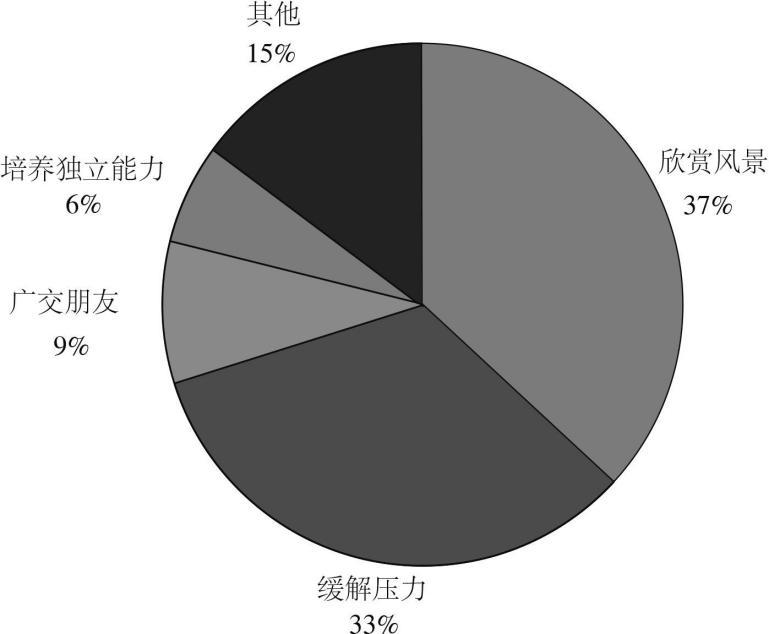

yy-2016-01
📄 原文 · 完整保留，点击展开/收起▾
Read the following text. Choose the best word(s) for each numbered blank and mark A, B, C or D on the ANSWER SHEET. (10points)
Happy people work differently. They’re more productive, more creative, and willing to take greater risks. And new research suggests that happiness might influence __1__ firms work, too.
Companies located in places with happier people invest more, according to a recent research paper. __2__ , firms in happy places spend more on R&D (research and development). That’s because happiness is linked to the kind of longer-term thinking __3__ for making investments for the future.
The researchers wanted to know if the __4__ and inclination for risk-taking that come with happiness would __5__ the way companies invested. So they compared U.S. cities’ average happiness __6__ by Gallup polling with the investment activity of publicly traded firms in those areas.
__7__ enough, firms’ investment and R&D intensity were correlated with the happiness of the area in which they were __8__ . But is it really happiness that’s linked to investment, or could something else about happier cities __9__ why firms there spend more on R&D? To find out, the researchers controlled for various __10__ that might make firms more likely to invest – like size, industry, and sales – and for indicators that a place was __11__ to live in, like growth in wages or population. The link between happiness and investment generally __12__ even after accounting for these things.
The correlation between happiness and investment was particularly strong for younger firms, which the authors __13__ to “less codified decision making process” and the possible presence of “younger and less __14__ managers who are more likely to be influenced by sentiment.” The relationship was __15__ stronger in places where happiness was spread more __16__ . Firms seem to invest more in places where most people are relatively happy, rather than in places with happiness inequality.
__17__ this doesn’t prove that happiness causes firms to invest more or to take a longer-term view, the authors believe it at least __18__ at that possibility. It’s not hard to imagine that local culture and sentiment would help __19__ how executives think about the future. “It surely seems plausible that happy people would be more forward-thinking and creative and __20__ R&D more than the average,” said one researcher.
第 1 题 · 本题位置已在原文中高亮（完形空位 / 新题型段落），请结合原文选出正确选项
答案：B
本题讲解：2016 完形第 1 空 · 幸福感会影响公司____运作
答案：B（how 如何）。
第 0 步：先立机制——引导词由“上下文要表达什么”决定
空 1 位于 influence 的宾语从句里：happiness might influence __ firms work。从句 firms work 主谓俱全，不缺句子成分，所以四个引导词 why/how/where/when 之间的取舍不靠语法，靠语义照应：从句要表达“原因/方式/地点/时间”中的哪一种。全文首句就是现成的坐标。
第 1 步：定位原文
Happy people work differently. ... And new research suggests that happiness might influence __1__ firms work, too.
第 2 步：找证据——首句已把方向说死
Happy people work differently.
differently 是方式状语：幸福的人“工作方式不一样”。too 表并列，把“人”和“公司”接在同一条论述上：人如何工作 ↔ 公司如何运作。所以从句缺的正是“方式”义，答案须与 differently 同族——只有 how 表方式。
第 3 步：逐项排除
| 选项 | 词义 | 判定 | 理由与典型误解 |
|---|---|---|---|
| A why | 为何 | ✗ 排除 | 表原因，代入成“影响公司为何运作”，不通；首句给的是方式不是原因。（典型误解：见 influence 就联想“研究因果”。） |
| B how | 如何 | ✓ 当选 | 与 work differently 同义复现，too 的并列成立。 |
| C where | 何地 | ✗ 排除 | 表地点；地点是第二段才引入的变量，管不到首段并列。（典型误解：被后文地域研究带偏。） |
| D when | 何时 | ✗ 排除 | 表时间，本句与首句均无时间线索。 |
代入后的完整句义：新研究表明，幸福感可能也会影响公司的运作方式。
第 4 步：预判追问
- 为什么不能选 why？：若填 why，从句变成“幸福感影响公司为何运作”，语义断裂；而且首句的照应词是 differently（方式），不是“出于某种原因工作”。引导词题的答案必须在上下文里有落点。
- where 不也有“在哪些方面运作”的引申吗？：where 引导的从句义是“在……地方”，地点话题要到第二段才出现；首段的并列关系只围绕“方式”展开。
易错点
- 误选 A（why）：看到 influence 就想到“因果研究”，忽略首句 differently 已经锁定方式义。
- 误选 C（where）：被第二段“幸福城市”带偏，把地点线索前移。
记忆锚点：引导词题先找照应——work differently ↔ how firms work；too 表并列，前后同讲“方式”。
yy-2016-02
📄 原文 · 完整保留，点击展开/收起▾
Read the following text. Choose the best word(s) for each numbered blank and mark A, B, C or D on the ANSWER SHEET. (10points)
Happy people work differently. They’re more productive, more creative, and willing to take greater risks. And new research suggests that happiness might influence __1__ firms work, too.
Companies located in places with happier people invest more, according to a recent research paper. __2__ , firms in happy places spend more on R&D (research and development). That’s because happiness is linked to the kind of longer-term thinking __3__ for making investments for the future.
The researchers wanted to know if the __4__ and inclination for risk-taking that come with happiness would __5__ the way companies invested. So they compared U.S. cities’ average happiness __6__ by Gallup polling with the investment activity of publicly traded firms in those areas.
__7__ enough, firms’ investment and R&D intensity were correlated with the happiness of the area in which they were __8__ . But is it really happiness that’s linked to investment, or could something else about happier cities __9__ why firms there spend more on R&D? To find out, the researchers controlled for various __10__ that might make firms more likely to invest – like size, industry, and sales – and for indicators that a place was __11__ to live in, like growth in wages or population. The link between happiness and investment generally __12__ even after accounting for these things.
The correlation between happiness and investment was particularly strong for younger firms, which the authors __13__ to “less codified decision making process” and the possible presence of “younger and less __14__ managers who are more likely to be influenced by sentiment.” The relationship was __15__ stronger in places where happiness was spread more __16__ . Firms seem to invest more in places where most people are relatively happy, rather than in places with happiness inequality.
__17__ this doesn’t prove that happiness causes firms to invest more or to take a longer-term view, the authors believe it at least __18__ at that possibility. It’s not hard to imagine that local culture and sentiment would help __19__ how executives think about the future. “It surely seems plausible that happy people would be more forward-thinking and creative and __20__ R&D more than the average,” said one researcher.
第 2 题 · 本题位置已在原文中高亮（完形空位 / 新题型段落），请结合原文选出正确选项
答案：B
本题讲解：2016 完形第 2 空 · 两句之间是什么逻辑关系
答案：B（In particular 尤其、特别地）。
第 0 步：先立机制——衔接语由“前后句关系”决定
逻辑衔接题的第一动作不是背短语词义，而是核对空格前后两句：主语是否同指、语义同向还是反向、是并列还是总说与细化的关系。关系定了，短语自动浮出。
第 1 步：定位原文
① Companies located in places with happier people invest more, according to a recent research paper. ② __2__, firms in happy places spend more on R&D (research and development).
第 2 步：找证据——三组词汇一一对应
companies ↔ firms（公司）、in places with happier people ↔ in happy places（幸福地区）、invest more ↔ spend more on R&D（投入更多，且②缩小到“研发”方面）。三组对应、语义同向，②句是①句的具体化：明确公司在哪一方面投入更多——前总后分的聚焦递进。
第 3 步：逐项排除
| 选项 | 词义 | 判定 | 理由与典型误解 |
|---|---|---|---|
| A In return | 作为回报 | ✗ 排除 | 前提是互动双方 A↔B 互换；两句只有“幸福地区的公司”一个主体。（典型误解：把投资与研发投入当成两方交换。） |
| B In particular | 尤其 | ✓ 当选 | 总说之后聚焦“尤其体现在研发上”，与递进关系吻合。 |
| C In contrast | 相反 | ✗ 排除 | 要求内容对立；两句同向。（典型误解：把总说与细化误判成对比。） |
| D In conclusion | 总之 | ✗ 排除 | 收尾总结语，用不到第二段开头。 |
代入后的句间关系：幸福地区的公司投资更多；尤其地，它们在研发上投入更多。
第 4 步：预判追问
- 为什么不选表递进的 in addition 类词？：题目只给四个选项，其中唯一能表达“总说后进一步聚焦”的就是 In particular——它强调“在整体之中特别突出某一方面”，恰好落在“投资多 → 研发多”这个具体化落点上。
- 怎么快速识别“同指”？：companies/firms、places with happier people/happy places 都是近义改写；改写型复现是递进关系最硬的证据。
易错点
- 误选 C（In contrast）：把“投资 more”与“研发上花 more”当成两件事对比，实际后者是前者的细化。
- 误选 A（In return）：忽略 In return 必须有互动双方。
记忆锚点：衔接语题先列对应词汇；同指 + 同向 + 具体化 = 递进聚焦 → In particular。
yy-2016-03
📄 原文 · 完整保留，点击展开/收起▾
Read the following text. Choose the best word(s) for each numbered blank and mark A, B, C or D on the ANSWER SHEET. (10points)
Happy people work differently. They’re more productive, more creative, and willing to take greater risks. And new research suggests that happiness might influence __1__ firms work, too.
Companies located in places with happier people invest more, according to a recent research paper. __2__ , firms in happy places spend more on R&D (research and development). That’s because happiness is linked to the kind of longer-term thinking __3__ for making investments for the future.
The researchers wanted to know if the __4__ and inclination for risk-taking that come with happiness would __5__ the way companies invested. So they compared U.S. cities’ average happiness __6__ by Gallup polling with the investment activity of publicly traded firms in those areas.
__7__ enough, firms’ investment and R&D intensity were correlated with the happiness of the area in which they were __8__ . But is it really happiness that’s linked to investment, or could something else about happier cities __9__ why firms there spend more on R&D? To find out, the researchers controlled for various __10__ that might make firms more likely to invest – like size, industry, and sales – and for indicators that a place was __11__ to live in, like growth in wages or population. The link between happiness and investment generally __12__ even after accounting for these things.
The correlation between happiness and investment was particularly strong for younger firms, which the authors __13__ to “less codified decision making process” and the possible presence of “younger and less __14__ managers who are more likely to be influenced by sentiment.” The relationship was __15__ stronger in places where happiness was spread more __16__ . Firms seem to invest more in places where most people are relatively happy, rather than in places with happiness inequality.
__17__ this doesn’t prove that happiness causes firms to invest more or to take a longer-term view, the authors believe it at least __18__ at that possibility. It’s not hard to imagine that local culture and sentiment would help __19__ how executives think about the future. “It surely seems plausible that happy people would be more forward-thinking and creative and __20__ R&D more than the average,” said one researcher.
第 3 题 · 本题位置已在原文中高亮（完形空位 / 新题型段落），请结合原文选出正确选项
答案：A
本题讲解：2016 完形第 3 空 · 长远思考对未来投资是哪种条件
答案：A（necessary 必需的、必要的）。
第 0 步：先立机制——判“条件关系的方向”
空 3 是形容词后置定语：the kind of longer-term thinking __ for making investments for the future。四个选项都能接 for，语法全部合法，裁决权在语义：“长远思考”与“未来投资”谁是条件、谁是结果，又属于哪一类条件。必要条件 = 缺了它做不成；充分条件 = 有了它必然成。
第 1 步：定位原文
That’s because happiness is linked to the kind of longer-term thinking __3__ for making investments for the future.
第 2 步：建逻辑链
That’s because 表明本句在解释前两句“幸福地区的公司研发投入更多”：幸福感 ↔ 长远思考 ↔ 为未来投资。按常识理顺方向：公司要为未来做投资，就必须看得长远——投资未来 ⇒ 需要长远思考。长远思考是投资的必要条件。
第 3 步：逐项排除
| 选项 | 词义 | 判定 | 理由与典型误解 |
|---|---|---|---|
| A necessary | 必需的 | ✓ 当选 | 做未来投资所必需的长远思考，方向与句义一致。 |
| B famous | 著名的 | ✗ 排除 | “长远思考因未来投资而著名”无逻辑。（典型误解：只验证能接 for，不检验代入句义。） |
| C perfect | 理想的 | ✗ 排除 | “理想条件”含价值评判，原文只客观陈述条件链。 |
| D sufficient | 充足的 | ✗ 排除 | 充分条件 = 有长远思考必会投资，不必然成立，方向反了。（典型误解：必需与充分混为一谈。） |
代入后的完整句义：这是因为幸福感与那种为未来投资所必需的长远思考相关联。
第 4 步：预判追问
- necessary 和 sufficient 方向差在哪？：投资未来 ⇒（需要）长远思考，是“做成 Y 必需 X”（necessary for）；“有 X 必然带来 Y”才是 sufficient for。想得长远的人未必都投资，所以 sufficient 过度承诺。
- 为什么常识可以直接当证据？：完形考查的句内语义常常落在常识逻辑上，“为未来投资需要长远眼光”是无争议的公共常识，这正是命题人设置条件关系题的依据。
易错点
- 误选 D（sufficient）：分不清“需要它”与“它就够”两个方向。
- 误选 B/C：只做搭配验证（都能接 for），跳过代入后的语义检验。
记忆锚点：necessary for = 必需（缺了不成）；sufficient for = 充分（有它必成）；famous for 讲名声、perfect for 讲理想——搭配全合法，句义方向说了算。
yy-2016-04
📄 原文 · 完整保留，点击展开/收起▾
Read the following text. Choose the best word(s) for each numbered blank and mark A, B, C or D on the ANSWER SHEET. (10points)
Happy people work differently. They’re more productive, more creative, and willing to take greater risks. And new research suggests that happiness might influence __1__ firms work, too.
Companies located in places with happier people invest more, according to a recent research paper. __2__ , firms in happy places spend more on R&D (research and development). That’s because happiness is linked to the kind of longer-term thinking __3__ for making investments for the future.
The researchers wanted to know if the __4__ and inclination for risk-taking that come with happiness would __5__ the way companies invested. So they compared U.S. cities’ average happiness __6__ by Gallup polling with the investment activity of publicly traded firms in those areas.
__7__ enough, firms’ investment and R&D intensity were correlated with the happiness of the area in which they were __8__ . But is it really happiness that’s linked to investment, or could something else about happier cities __9__ why firms there spend more on R&D? To find out, the researchers controlled for various __10__ that might make firms more likely to invest – like size, industry, and sales – and for indicators that a place was __11__ to live in, like growth in wages or population. The link between happiness and investment generally __12__ even after accounting for these things.
The correlation between happiness and investment was particularly strong for younger firms, which the authors __13__ to “less codified decision making process” and the possible presence of “younger and less __14__ managers who are more likely to be influenced by sentiment.” The relationship was __15__ stronger in places where happiness was spread more __16__ . Firms seem to invest more in places where most people are relatively happy, rather than in places with happiness inequality.
__17__ this doesn’t prove that happiness causes firms to invest more or to take a longer-term view, the authors believe it at least __18__ at that possibility. It’s not hard to imagine that local culture and sentiment would help __19__ how executives think about the future. “It surely seems plausible that happy people would be more forward-thinking and creative and __20__ R&D more than the average,” said one researcher.
第 4 题 · 本题位置已在原文中高亮（完形空位 / 新题型段落），请结合原文选出正确选项
答案：C
本题讲解：2016 完形第 4 空 · 幸福感带来的“____ + 冒险倾向”
答案：C（optimism 乐观、乐观主义）。
第 0 步：先立机制——空格被“come with happiness”语义锁定
空 4 的名词与 inclination for risk-taking 并列，由定语从句 that come with happiness 修饰，本空的解题机制是：先确认从句修饰谁，再用“幸福感带来的东西”这一语义锁去筛选项。四个选项全是 -ism 词根——这是词根陷阱，词根“长得像”不参与裁决。
第 1 步：定位原文
The researchers wanted to know if the __4__ and inclination for risk-taking that come with happiness would __5__ the way companies invested.
第 2 步：语法定指——come 是原形
从句谓语是 come（原形）而非 comes。若从句只修饰 inclination（单数），谓语应为 comes；原形说明从句修饰 “the __ and inclination” 并列结构整体。于是空 4 必须是“随幸福感而来的东西”——幸福感带来的是心态，不会是意识形态层面的“主义”。
第 3 步：逐项排除
| 选项 | 词义 | 判定 | 理由与典型误解 |
|---|---|---|---|
| A individualism | 个人主义 | ✗ 排除 | 意识形态词，“幸福感带来个人主义”偏离关键词 happiness。（典型误解：按“公司受个人环境影响”的常识硬套。） |
| B realism | 现实主义 | ✗ 排除 | 同为意识形态词，与正向心态描述无关。 |
| C optimism | 乐观 | ✓ 当选 | 取“乐观”心态义，随幸福感而来，与首段“更高效、更敢冒险”同向。 |
| D modernism | 现代主义 | ✗ 排除 | 文艺流派/意识形态，与幸福感无交集。 |
代入后的完整句义：研究者想知道，随幸福感而来的乐观与冒险倾向是否会改变公司的投资方式。
第 4 步：预判追问
- optimism 不也是“乐观主义”吗？为什么它不算 -ism 干扰项？：一词多义——本空取“乐观”这一心态义，恰好能被幸福感“带来”；命题人用同词根设置陷阱，正确项恰恰也要按词义而非词根来选。
- come 原形这个证据可靠吗？：主谓一致是硬语法——come 只能对应复数/并列主语，它把从句的管辖范围从单个名词扩到并列结构，进而把语义锁从“冒险倾向的来源”扩大到“两样东西都来自幸福感”。
易错点
- 误选 A/B/D：被共享的 -ism 词根带偏，用“公司投资受个人/现实/现代环境影响”的常识硬套，忽略 come with happiness 的语义锁。
- 漏用语法证据：没注意 come/comes 之别，把从句当成只修饰 inclination，降低了对空 4 语义的约束。
记忆锚点：come with happiness → 心态词；-ism 四选一找“能取心态义”的 optimism；come（原形）= 修饰并列整体。
yy-2016-05
📄 原文 · 完整保留，点击展开/收起▾
Read the following text. Choose the best word(s) for each numbered blank and mark A, B, C or D on the ANSWER SHEET. (10points)
Happy people work differently. They’re more productive, more creative, and willing to take greater risks. And new research suggests that happiness might influence __1__ firms work, too.
Companies located in places with happier people invest more, according to a recent research paper. __2__ , firms in happy places spend more on R&D (research and development). That’s because happiness is linked to the kind of longer-term thinking __3__ for making investments for the future.
The researchers wanted to know if the __4__ and inclination for risk-taking that come with happiness would __5__ the way companies invested. So they compared U.S. cities’ average happiness __6__ by Gallup polling with the investment activity of publicly traded firms in those areas.
__7__ enough, firms’ investment and R&D intensity were correlated with the happiness of the area in which they were __8__ . But is it really happiness that’s linked to investment, or could something else about happier cities __9__ why firms there spend more on R&D? To find out, the researchers controlled for various __10__ that might make firms more likely to invest – like size, industry, and sales – and for indicators that a place was __11__ to live in, like growth in wages or population. The link between happiness and investment generally __12__ even after accounting for these things.
The correlation between happiness and investment was particularly strong for younger firms, which the authors __13__ to “less codified decision making process” and the possible presence of “younger and less __14__ managers who are more likely to be influenced by sentiment.” The relationship was __15__ stronger in places where happiness was spread more __16__ . Firms seem to invest more in places where most people are relatively happy, rather than in places with happiness inequality.
__17__ this doesn’t prove that happiness causes firms to invest more or to take a longer-term view, the authors believe it at least __18__ at that possibility. It’s not hard to imagine that local culture and sentiment would help __19__ how executives think about the future. “It surely seems plausible that happy people would be more forward-thinking and creative and __20__ R&D more than the average,” said one researcher.
第 5 题 · 本题位置已在原文中高亮（完形空位 / 新题型段落），请结合原文选出正确选项
答案：D
本题讲解：2016 完形第 5 空 · 幸福感会____公司的投资方式吗
答案：D（change 改变、使变化）。
第 0 步：先立机制——研究目的句必须与全文论点同向
本句是全文的研究目的句：The researchers wanted to know if... would __ the way companies invested。研究者想检验的东西，一定是首段已经提出的论断。所以解题机制是：回到首段找论点，再找论点动词的同向词。
第 1 步：定位原文
The researchers wanted to know if the optimism and inclination for risk-taking that come with happiness would __5__ the way companies invested.
第 2 步：找证据——首段论点已给出动词方向
And new research suggests that happiness might influence how firms work, too.
首段论点：幸福感可能影响（influence）公司运作方式。第三段把“运作方式”具体到“投资方式”，研究者要检验的就是这个影响——空格要填 influence 的同向词，即“对投资方式产生作用”。
第 3 步：逐项排除
| 选项 | 词义 | 判定 | 理由与典型误解 |
|---|---|---|---|
| A miss | 错过 | ✗ 排除 | “错过投资方式”动宾不搭；借 longer-term thinking 诱导联想。（典型误解：把“错过机会”硬套到“投资方式”。） |
| B echo | 反映、回应 | ✗ 排除 | echo 自带方向：A echoes B = A 反映 B；填入即“幸福感反映投资方式”，与全文“投资方式反映幸福感”因果倒置。 |
| C spoil | 破坏 | ✗ 排除 | 负面动词；原文通篇未评价影响的好坏，属过度推断。 |
| D change | 改变 | ✓ 当选 | influence the way 的同向落点，研究检验语气吻合。 |
代入后的完整句义：研究者想知道，随幸福感而来的乐观与冒险倾向是否会改变公司的投资方式。
第 4 步：预判追问
- influence 一定等于 change 吗？：在“would __ the way...”这个检验句式里，研究者要验证的正是“乐观与冒险倾向会不会使投资方式发生变化”；influence 落到“方式”这个宾语上，自然的同向词就是 change（首段 influence how firms work 也只有 D 与之对应）。
- echo 为什么方向反了？：come with happiness（幸福感带来乐观与冒险）→ 乐观影响投资 → 投资方式是“果”。echo 的比喻义要求“果反映因”：可以说投资方式反映幸福感，不能反过来说幸福感回应投资方式。
易错点
- 误选 B（echo）：被 come with happiness 带偏，把“反映”的方向装反。
- 误选 C（spoil）：给中性论证强加负面评价。
记忆锚点：研究目的句 → 回首段找论点 → 找 influence 的同向词 = change；echo 自带方向（A 反映 B），方向装反即错。
yy-2016-06
📄 原文 · 完整保留，点击展开/收起▾
Read the following text. Choose the best word(s) for each numbered blank and mark A, B, C or D on the ANSWER SHEET. (10points)
Happy people work differently. They’re more productive, more creative, and willing to take greater risks. And new research suggests that happiness might influence __1__ firms work, too.
Companies located in places with happier people invest more, according to a recent research paper. __2__ , firms in happy places spend more on R&D (research and development). That’s because happiness is linked to the kind of longer-term thinking __3__ for making investments for the future.
The researchers wanted to know if the __4__ and inclination for risk-taking that come with happiness would __5__ the way companies invested. So they compared U.S. cities’ average happiness __6__ by Gallup polling with the investment activity of publicly traded firms in those areas.
__7__ enough, firms’ investment and R&D intensity were correlated with the happiness of the area in which they were __8__ . But is it really happiness that’s linked to investment, or could something else about happier cities __9__ why firms there spend more on R&D? To find out, the researchers controlled for various __10__ that might make firms more likely to invest – like size, industry, and sales – and for indicators that a place was __11__ to live in, like growth in wages or population. The link between happiness and investment generally __12__ even after accounting for these things.
The correlation between happiness and investment was particularly strong for younger firms, which the authors __13__ to “less codified decision making process” and the possible presence of “younger and less __14__ managers who are more likely to be influenced by sentiment.” The relationship was __15__ stronger in places where happiness was spread more __16__ . Firms seem to invest more in places where most people are relatively happy, rather than in places with happiness inequality.
__17__ this doesn’t prove that happiness causes firms to invest more or to take a longer-term view, the authors believe it at least __18__ at that possibility. It’s not hard to imagine that local culture and sentiment would help __19__ how executives think about the future. “It surely seems plausible that happy people would be more forward-thinking and creative and __20__ R&D more than the average,” said one researcher.
第 6 题 · 本题位置已在原文中高亮（完形空位 / 新题型段落），请结合原文选出正确选项
答案：B
本题讲解：2016 完形第 6 空 · 由盖洛普民调____的幸福指数
答案：B（measured 调查、测量）。
第 0 步：先立机制——分词 + by 施动者，先问“施动者能做什么”
空 6 是过去分词短语 __ by Gallup polling，后置修饰 average happiness。分词与 by 连用表被动：幸福指数是受事，盖洛普是施事。四个选项的过去分词都能接 by——语法全部合法，真正的裁决机制是：民调机构能对“幸福指数”做什么动作。
第 1 步：定位原文
So they compared U.S. cities’ average happiness __6__ by Gallup polling with the investment activity of publicly traded firms in those areas.
第 2 步：找证据——盖洛普是民调机构
Gallup polling：盖洛普民意测验，polling 本义即“民调”。民调机构的工作是调查、测量，产出真实数据；本句还要拿这份指数去与投资活动 compared（比较），数据必须真实。
第 3 步：逐项排除
| 选项 | 词义 | 判定 | 理由与典型误解 |
|---|---|---|---|
| A imagined | 想象 | ✗ 排除 | 想象出的指数不是可比较的真实数据。（典型误解：只看“都能接 by”的形式，跳过施动关系。） |
| B measured | 调查、测量 | ✓ 当选 | 民调机构测出的幸福指数，三线全合。 |
| C assumed | 假定 | ✗ 排除 | 假定值无实证价值，盖洛普做调查不做假设。 |
| D invented | 虚构 | ✗ 排除 | 虚构数据与研究的严谨性相悖。（典型误解：只记“发明”的中性义。） |
代入后的完整句义：于是他们把盖洛普民调测得的美国城市平均幸福指数，与这些地区上市公司的投资活动进行比较。
第 4 步：预判追问
- 四个选项都能接 by，为什么语法帮不上忙？：by 施动结构只约束“施动关系存在”，不约束动作内容；此时必须调用施动者的身份常识——机构（polling）对指标（happiness）的现实动作只有测量。
- 为什么不可能是“被假设出来”的指数？：后文研究要把它与投资活动做统计比较（controlled for、correlated），假设值无法承担实证角色。
易错点
- 误选 A/C/D：四个词都能接 by 表被动，跳过“施动者能做什么”的语义筛查。
- 不识 Gallup：polling 一词本身就是“民调”的线索，不认识机构也应从 polling 入手。
记忆锚点：分词 + by → 先问施动者能做什么；Gallup polling = 民调 → measured；imagined/assumed/invented = 无中生有类动词。
yy-2016-07
📄 原文 · 完整保留，点击展开/收起▾
Read the following text. Choose the best word(s) for each numbered blank and mark A, B, C or D on the ANSWER SHEET. (10points)
Happy people work differently. They’re more productive, more creative, and willing to take greater risks. And new research suggests that happiness might influence __1__ firms work, too.
Companies located in places with happier people invest more, according to a recent research paper. __2__ , firms in happy places spend more on R&D (research and development). That’s because happiness is linked to the kind of longer-term thinking __3__ for making investments for the future.
The researchers wanted to know if the __4__ and inclination for risk-taking that come with happiness would __5__ the way companies invested. So they compared U.S. cities’ average happiness __6__ by Gallup polling with the investment activity of publicly traded firms in those areas.
__7__ enough, firms’ investment and R&D intensity were correlated with the happiness of the area in which they were __8__ . But is it really happiness that’s linked to investment, or could something else about happier cities __9__ why firms there spend more on R&D? To find out, the researchers controlled for various __10__ that might make firms more likely to invest – like size, industry, and sales – and for indicators that a place was __11__ to live in, like growth in wages or population. The link between happiness and investment generally __12__ even after accounting for these things.
The correlation between happiness and investment was particularly strong for younger firms, which the authors __13__ to “less codified decision making process” and the possible presence of “younger and less __14__ managers who are more likely to be influenced by sentiment.” The relationship was __15__ stronger in places where happiness was spread more __16__ . Firms seem to invest more in places where most people are relatively happy, rather than in places with happiness inequality.
__17__ this doesn’t prove that happiness causes firms to invest more or to take a longer-term view, the authors believe it at least __18__ at that possibility. It’s not hard to imagine that local culture and sentiment would help __19__ how executives think about the future. “It surely seems plausible that happy people would be more forward-thinking and creative and __20__ R&D more than the average,” said one researcher.
第 7 题 · 本题位置已在原文中高亮（完形空位 / 新题型段落），请结合原文选出正确选项
答案：A
本题讲解：2016 完形第 7 空 · ____ enough：果然还是奇怪？
答案：A（Sure 确定的、肯定的）。
第 0 步：先立机制——“__ enough”自带情绪色
空 7 与 enough 搭配，插在研究结果之前，作用是给这个结果标注情绪色彩：不出所料？意外？遗憾？还是“常有例外”？判定机制：看结果与上一段研究目的的关系——是印证（顺承）还是相反（转折）。
第 1 步：定位原文
The researchers wanted to know if the optimism... would change the way companies invested. So they compared... __7__ enough, firms’ investment and R&D intensity were correlated with the happiness of the area...
第 2 步：判关系——设问被肯定，顺承
第三段提出研究目的：“想知道乐观与冒险倾向是否会改变投资方式”。第四段给出发现：“投资与研发力度确实与幸福指数相关（correlated）”。疑问被肯定验证，语篇是“设问 → 证实”的顺承，无转折信号。
第 3 步：逐项排除
| 选项 | 词义 | 判定 | 理由与典型误解 |
|---|---|---|---|
| A Sure | 肯定的 | ✓ 当选 | sure enough 果然：发现如所料，与顺承关系吻合。 |
| B Odd | 奇怪的 | ✗ 排除 | 用于与预期相反的发现；此处结果正是想证实的方向。（典型误解：把相关发现误当意外。） |
| C Unfortunate | 不幸的 | ✗ 排除 | 遗憾/负面色彩无处安放，原文是中性论证。 |
| D Often | 经常 | ✗ 排除 | often enough 暗示“并非总是成立、存在例外”，与普遍相关的结论矛盾。 |
代入后的完整句义：果然，公司的投资与研发力度与其所在地区的幸福指数相关。
第 4 步：预判追问
- “意外感”的判断标准是什么？：不是看结果是否符合读者直觉，而是看它是否符合作者自己设下的预期——第三段的研究目的就是预期，本段发现与之同向，无“意外”可言。
- often 为什么不行？它也与肯定相关啊？：often enough 落点在“频率”，暗示这种相关只是经常出现、另有例外；这会把一个普遍结论弱化成概率性描述，与后文 even after accounting for...（即便控制变量后依然成立）的强结论冲突。
易错点
- 误选 B（Odd）：忽略第三段的预期铺垫，凭生活直觉觉得“幸福影响投资”很新奇。
- 误选 D（Often）：把频率副词当衔接语，没意识到 often enough 的“例外”暗示。
记忆锚点：__ enough 自带情绪色——Sure enough 果然（顺承印证）；Odd/Unfortunate 转折遗憾；often enough 常有例外。
yy-2016-08
📄 原文 · 完整保留，点击展开/收起▾
Read the following text. Choose the best word(s) for each numbered blank and mark A, B, C or D on the ANSWER SHEET. (10points)
Happy people work differently. They’re more productive, more creative, and willing to take greater risks. And new research suggests that happiness might influence __1__ firms work, too.
Companies located in places with happier people invest more, according to a recent research paper. __2__ , firms in happy places spend more on R&D (research and development). That’s because happiness is linked to the kind of longer-term thinking __3__ for making investments for the future.
The researchers wanted to know if the __4__ and inclination for risk-taking that come with happiness would __5__ the way companies invested. So they compared U.S. cities’ average happiness __6__ by Gallup polling with the investment activity of publicly traded firms in those areas.
__7__ enough, firms’ investment and R&D intensity were correlated with the happiness of the area in which they were __8__ . But is it really happiness that’s linked to investment, or could something else about happier cities __9__ why firms there spend more on R&D? To find out, the researchers controlled for various __10__ that might make firms more likely to invest – like size, industry, and sales – and for indicators that a place was __11__ to live in, like growth in wages or population. The link between happiness and investment generally __12__ even after accounting for these things.
The correlation between happiness and investment was particularly strong for younger firms, which the authors __13__ to “less codified decision making process” and the possible presence of “younger and less __14__ managers who are more likely to be influenced by sentiment.” The relationship was __15__ stronger in places where happiness was spread more __16__ . Firms seem to invest more in places where most people are relatively happy, rather than in places with happiness inequality.
__17__ this doesn’t prove that happiness causes firms to invest more or to take a longer-term view, the authors believe it at least __18__ at that possibility. It’s not hard to imagine that local culture and sentiment would help __19__ how executives think about the future. “It surely seems plausible that happy people would be more forward-thinking and creative and __20__ R&D more than the average,” said one researcher.
第 8 题 · 本题位置已在原文中高亮（完形空位 / 新题型段落），请结合原文选出正确选项
答案：D
本题讲解：2016 完形第 8 空 · 公司____所在地区的幸福指数
答案：D（headquartered 总部设立于）。
第 0 步：先立机制——定语从句里先定代词，再对论点
句子骨架：firms’ investment and R&D intensity were correlated with the happiness of the area in which they were __。解题机制分两步：① they 回指谁（代词指认）；② 全文论点中“地区”与“公司”是什么关系（语义定调）。两步都指向同一答案。
第 1 步：定位原文
Sure enough, firms’ investment and R&D intensity were correlated with the happiness of the area in which they were __8__.
第 2 步：找证据——they = firms；地区 = 公司所在地
they 的先行词是 firms（复数；the area 单数，且“地区在地区里”不通）。第二段已两次定调：Companies located in places with happier people / firms in happy places——地区是公司的所在地。上市公司的投资与研发决策出自总部，故填 headquartered：总部所在地的幸福指数影响决策。
第 3 步：逐项排除
| 选项 | 词义 | 判定 | 理由与典型误解 |
|---|---|---|---|
| A divided | 划分 | ✗ 排除 | 前提是 they 误读为 the area；即便读成“公司划出分支”，分支地≠决策源头。（典型误解：代词指认失手。） |
| B advertised | 做广告 | ✗ 排除 | 广告投放地未必是所在地，与论点无论证关系。 |
| C overtaxed | 过度征税 | ✗ 排除 | 征税地未必是所在地，偏离“幸福感→投资”链条。 |
| D headquartered | 设总部于 | ✓ 当选 | 总部所在地 = 决策中心所在地区，三线全合。 |
代入后的完整句义：果然，公司的投资与研发力度与其总部所在地区的幸福指数相关。
第 4 步：预判追问
- 为什么必须是“总部所在地”？：投资和研发的决策由公司总部做出——只有总部所在地的文化氛围（幸福感）才能影响这类决策；分支机构所在地的幸福感与投资决策之间没有论证通道。
- advertised / overtaxed 不也发生在“某地区”吗？：它们描述公司在某地的行为或遭遇，但该地区未必与公司所在地同指；更重要的是，全文论点始终围绕“公司所在地区的幸福感”展开，这两个动作都不在论点链条上。
易错点
- 误选 A（divided）：没有先确认 they 回指 firms。
- 误选 B/C：用“公司在某地可能发生的事”泛化代入，不检验与论点的相关性。
记忆锚点：定从里的代词先定先行词（they = firms）；地区与公司的关系由论点句定调；投资决策出自总部 → headquartered。
yy-2016-09
📄 原文 · 完整保留，点击展开/收起▾
Read the following text. Choose the best word(s) for each numbered blank and mark A, B, C or D on the ANSWER SHEET. (10points)
Happy people work differently. They’re more productive, more creative, and willing to take greater risks. And new research suggests that happiness might influence __1__ firms work, too.
Companies located in places with happier people invest more, according to a recent research paper. __2__ , firms in happy places spend more on R&D (research and development). That’s because happiness is linked to the kind of longer-term thinking __3__ for making investments for the future.
The researchers wanted to know if the __4__ and inclination for risk-taking that come with happiness would __5__ the way companies invested. So they compared U.S. cities’ average happiness __6__ by Gallup polling with the investment activity of publicly traded firms in those areas.
__7__ enough, firms’ investment and R&D intensity were correlated with the happiness of the area in which they were __8__ . But is it really happiness that’s linked to investment, or could something else about happier cities __9__ why firms there spend more on R&D? To find out, the researchers controlled for various __10__ that might make firms more likely to invest – like size, industry, and sales – and for indicators that a place was __11__ to live in, like growth in wages or population. The link between happiness and investment generally __12__ even after accounting for these things.
The correlation between happiness and investment was particularly strong for younger firms, which the authors __13__ to “less codified decision making process” and the possible presence of “younger and less __14__ managers who are more likely to be influenced by sentiment.” The relationship was __15__ stronger in places where happiness was spread more __16__ . Firms seem to invest more in places where most people are relatively happy, rather than in places with happiness inequality.
__17__ this doesn’t prove that happiness causes firms to invest more or to take a longer-term view, the authors believe it at least __18__ at that possibility. It’s not hard to imagine that local culture and sentiment would help __19__ how executives think about the future. “It surely seems plausible that happy people would be more forward-thinking and creative and __20__ R&D more than the average,” said one researcher.
第 9 题 · 本题位置已在原文中高亮（完形空位 / 新题型段落），请结合原文选出正确选项
答案：C
本题讲解：2016 完形第 9 空 · 幸福城市的“其他特质”能否____原因
答案：C（explain 解释）。
第 0 步：先立机制——选择疑问句在“提出待检验的替代解释”
②句结构：is it really happiness..., or could something else about happier cities __ why firms there spend more on R&D? 这是“排除干扰”的标准动作：先假设存在其他原因，再检验它。空 9 的动词必须能带 why 从句、能开启一个待检验的因果问题。
第 1 步：定位原文
But is it really happiness that’s linked to investment, or could something else about happier cities __9__ why firms there spend more on R&D? To find out, the researchers controlled for various factors... The link between happiness and investment generally held even after accounting for these things.
第 2 步：找证据——③④句是对②句的回答
To find out（为了查明真相），研究者控制了规模、行业、销售等变量；结果关联依然成立。问（有没有替代解释）→ 检验（控制变量）→ 答（排除替代解释）。②句的功能是探询因果解释，不是收束、夸张或强调。
第 3 步：逐项排除
| 选项 | 词义 | 判定 | 理由与典型误解 |
|---|---|---|---|
| A summarize | 总结 | ✗ 排除 | 总结“已确定”的内容；②句提出的是待检验的可能性。（典型误解：见疑问句就想到“总结设问”。） |
| B overstate | 夸大 | ✗ 排除 | 夸张描述既有事实，与研究“排查干扰、求严谨”的目的相反。 |
| C explain | 解释 | ✓ 当选 | explain why 标准因果搭配，与问答链吻合。 |
| D emphasize | 强调 | ✗ 排除 | 凸显已知情况，不回答“为什么”，接不住 why 从句。（典型误解：不检查动词与 why 从句的搭配。） |
代入后的完整句义：但与投资相关联的真的是幸福吗？或者说，幸福城市的其他特质能否解释为何那里的公司在研发上投入更多？
第 4 步：预判追问
- 为什么 emphasize 不行？中文里“强调其他因素的作用”也通顺。：通顺的是中文转述，不是英文搭配——emphasize 的宾语是“被凸显的对象”，不能接 why 问句给出因果说明；本空的语义功能是“开出一个待检验的因果问题”，只有 explain why 对位。
- 这句疑问与后文 control for 是什么关系？：②句提出替代解释的假设，③句用控制变量的方法检验，④句的“关联依然成立”宣告替代解释不成立——三句构成完整的科学论证闭环。
易错点
- 误选 D（emphasize）：只做中文转述验证，不检查动宾结构与 why 从句的搭配。
- 误选 A（summarize）：忽略②句“提出可能性”的前瞻功能，误当收束句。
记忆锚点：or could... explain why = 提出替代解释；To find out 控制变量检验之；summarize 收束、overstate 夸张、emphasize 凸显，都开不出因果问句。
yy-2016-10
📄 原文 · 完整保留，点击展开/收起▾
Read the following text. Choose the best word(s) for each numbered blank and mark A, B, C or D on the ANSWER SHEET. (10points)
Happy people work differently. They’re more productive, more creative, and willing to take greater risks. And new research suggests that happiness might influence __1__ firms work, too.
Companies located in places with happier people invest more, according to a recent research paper. __2__ , firms in happy places spend more on R&D (research and development). That’s because happiness is linked to the kind of longer-term thinking __3__ for making investments for the future.
The researchers wanted to know if the __4__ and inclination for risk-taking that come with happiness would __5__ the way companies invested. So they compared U.S. cities’ average happiness __6__ by Gallup polling with the investment activity of publicly traded firms in those areas.
__7__ enough, firms’ investment and R&D intensity were correlated with the happiness of the area in which they were __8__ . But is it really happiness that’s linked to investment, or could something else about happier cities __9__ why firms there spend more on R&D? To find out, the researchers controlled for various __10__ that might make firms more likely to invest – like size, industry, and sales – and for indicators that a place was __11__ to live in, like growth in wages or population. The link between happiness and investment generally __12__ even after accounting for these things.
The correlation between happiness and investment was particularly strong for younger firms, which the authors __13__ to “less codified decision making process” and the possible presence of “younger and less __14__ managers who are more likely to be influenced by sentiment.” The relationship was __15__ stronger in places where happiness was spread more __16__ . Firms seem to invest more in places where most people are relatively happy, rather than in places with happiness inequality.
__17__ this doesn’t prove that happiness causes firms to invest more or to take a longer-term view, the authors believe it at least __18__ at that possibility. It’s not hard to imagine that local culture and sentiment would help __19__ how executives think about the future. “It surely seems plausible that happy people would be more forward-thinking and creative and __20__ R&D more than the average,” said one researcher.
第 10 题 · 本题位置已在原文中高亮（完形空位 / 新题型段落），请结合原文选出正确选项
答案：A
本题讲解：2016 完形第 10 空 · 控制 various ____：规模、行业、销售额是什么
答案：A（factors 因素）。
第 0 步：先立机制——中心词由“例证”决定外延
空 10 是 various __ that might make firms more likely to invest 的中心词，破折号后 like size, industry, and sales 是例证。中心词题的机制：例子是中心词的下位例——先判断三个例子的共同类别，再找覆盖它们的上义词。
第 1 步：定位原文
To find out, the researchers controlled for various __10__ that might make firms more likely to invest – like size, industry, and sales – and for indicators that a place was desirable to live in, like growth in wages or population.
第 2 步：看例证——三个词的共同类别
size（规模）、industry（行业）、sales（销售额）：都是公司的属性变量，都可能促使公司更愿意投资；control for 它们 = 统计上的“控制变量”。
第 3 步：逐项排除
| 选项 | 词义 | 判定 | 理由与典型误解 |
|---|---|---|---|
| A factors | 因素 | ✓ 当选 | 三个例子的上义词，外延全覆盖。 |
| B stages | 阶段 | ✗ 排除 | “促使投资的阶段”搭配扭曲；例子不是阶段。 |
| C levels | 水平 | ✗ 排除 | 同样搭配不当。（典型误解：拿 levels 硬贴 sales 的“销售额水平”，忽略例证须整体覆盖。） |
| D methods | 方法 | ✗ 排除 | 与 that 从句勉强可搭，但 size/industry/sales 不是“方法”。（典型误解：只看从句搭配，丢掉例证。） |
代入后的完整句义：为查明真相，研究者控制了可能促使公司更愿意投资的多种因素——比如规模、行业和销售额。
第 4 步：预判追问
- methods 与从句也搭，为什么输？：中心词题的裁决顺序是“先例证、后搭配”——that might make firms more likely to invest 能容纳多种中心词，真正唯一化的证据是破折号里的三个例子；例证不在 methods 的外延内。
- control for 是什么意思？：统计术语“把某因素的影响控制住/排除掉”，与 various factors 是高频学术搭配，也可反向印证 A。
易错点
- 误选 D（methods）：只验证从句搭配，丢掉例证这个最硬的证据。
- 误选 C（levels）：把“销售额水平”当个例硬贴，忽略三个例子要整体被涵盖。
记忆锚点：中心词题先看例子——size/industry/sales ⇒ factors；control for various factors = 控制变量。
yy-2016-11
📄 原文 · 完整保留，点击展开/收起▾
Read the following text. Choose the best word(s) for each numbered blank and mark A, B, C or D on the ANSWER SHEET. (10points)
Happy people work differently. They’re more productive, more creative, and willing to take greater risks. And new research suggests that happiness might influence __1__ firms work, too.
Companies located in places with happier people invest more, according to a recent research paper. __2__ , firms in happy places spend more on R&D (research and development). That’s because happiness is linked to the kind of longer-term thinking __3__ for making investments for the future.
The researchers wanted to know if the __4__ and inclination for risk-taking that come with happiness would __5__ the way companies invested. So they compared U.S. cities’ average happiness __6__ by Gallup polling with the investment activity of publicly traded firms in those areas.
__7__ enough, firms’ investment and R&D intensity were correlated with the happiness of the area in which they were __8__ . But is it really happiness that’s linked to investment, or could something else about happier cities __9__ why firms there spend more on R&D? To find out, the researchers controlled for various __10__ that might make firms more likely to invest – like size, industry, and sales – and for indicators that a place was __11__ to live in, like growth in wages or population. The link between happiness and investment generally __12__ even after accounting for these things.
The correlation between happiness and investment was particularly strong for younger firms, which the authors __13__ to “less codified decision making process” and the possible presence of “younger and less __14__ managers who are more likely to be influenced by sentiment.” The relationship was __15__ stronger in places where happiness was spread more __16__ . Firms seem to invest more in places where most people are relatively happy, rather than in places with happiness inequality.
__17__ this doesn’t prove that happiness causes firms to invest more or to take a longer-term view, the authors believe it at least __18__ at that possibility. It’s not hard to imagine that local culture and sentiment would help __19__ how executives think about the future. “It surely seems plausible that happy people would be more forward-thinking and creative and __20__ R&D more than the average,” said one researcher.
第 11 题 · 本题位置已在原文中高亮（完形空位 / 新题型段落），请结合原文选出正确选项
答案：A
本题讲解：2016 完形第 11 空 · 工资涨、人口增：这是个____的地方
答案：A（desirable 理想的、值得向往的）。
第 0 步：先立机制——例证与主线双重锁定
空 11 说明 a place was __ to live in（在某地居住的特点）。本题有两道锁：① 例证锁——like growth in wages or population，工资涨、人口增属于哪类指标；② 主线锁——全文反复出现的 happiness，研究者控制的变量应与“城市幸福/吸引力”相关。
第 1 步：定位原文
...and for indicators that a place was __11__ to live in, like growth in wages or population.
第 2 步：对证据——宜居指标
工资增长、人口净流入是“这地方令人向往、适合居住”的典型信号——desirable to live in（宜居）。这同时呼应第二段 U.S. cities’ average happiness 与本段 happier cities：幸福感高的城市往往工资在涨、人口在流入，研究者正是要控制“城市本身吸引力”这类替代解释。
第 3 步：逐项排除
| 选项 | 词义 | 判定 | 理由与典型误解 |
|---|---|---|---|
| A desirable | 宜居的、令人向往的 | ✓ 当选 | 例证与主线双锁。 |
| B sociable | 善于交际的 | ✗ 排除 | 只修饰人。（典型误解：见 -able 就当通用词。） |
| C reliable | 可靠的 | ✗ 排除 | “在某地居住很可靠”搭配不当，例证也对不上。 |
| D reputable | 有声望的 | ✗ 排除 | 可修饰地方，但工资/人口增长不是声誉指标。（典型误解：只验修饰对象，漏验例证类别。） |
代入后的完整句义：以及表明一个地方宜居的指标，比如工资涨幅或人口增长。
第 4 步：预判追问
- reputable 明明能修饰地方，为什么不行？：本题是双重验证——修饰对象只是第一关；第二关看例证类别：工资与人口增长衡量的是“是否宜居/令人向往”，不是“是否有名望”。名望高的地方未必幸福指数高。
- 为什么宜居指标会出现在“控制变量”清单里？：宜居城市往往幸福指数也高，研究者必须排除“不是幸福、而是城市宜居本身吸引公司投资”的替代解释——这正是这些指标入列的原因。
易错点
- 误选 D（reputable）：只做第一关验证（能修饰地方），漏了例证类别。
- 误选 B（sociable）：忽略修饰对象的硬限制。
记忆锚点：a place desirable to live in = 宜居；工资/人口增长是宜居指标；sociable 修饰人、reliable 不配居住、reputable 讲声誉——例证说了算。
yy-2016-12
📄 原文 · 完整保留，点击展开/收起▾
Read the following text. Choose the best word(s) for each numbered blank and mark A, B, C or D on the ANSWER SHEET. (10points)
Happy people work differently. They’re more productive, more creative, and willing to take greater risks. And new research suggests that happiness might influence __1__ firms work, too.
Companies located in places with happier people invest more, according to a recent research paper. __2__ , firms in happy places spend more on R&D (research and development). That’s because happiness is linked to the kind of longer-term thinking __3__ for making investments for the future.
The researchers wanted to know if the __4__ and inclination for risk-taking that come with happiness would __5__ the way companies invested. So they compared U.S. cities’ average happiness __6__ by Gallup polling with the investment activity of publicly traded firms in those areas.
__7__ enough, firms’ investment and R&D intensity were correlated with the happiness of the area in which they were __8__ . But is it really happiness that’s linked to investment, or could something else about happier cities __9__ why firms there spend more on R&D? To find out, the researchers controlled for various __10__ that might make firms more likely to invest – like size, industry, and sales – and for indicators that a place was __11__ to live in, like growth in wages or population. The link between happiness and investment generally __12__ even after accounting for these things.
The correlation between happiness and investment was particularly strong for younger firms, which the authors __13__ to “less codified decision making process” and the possible presence of “younger and less __14__ managers who are more likely to be influenced by sentiment.” The relationship was __15__ stronger in places where happiness was spread more __16__ . Firms seem to invest more in places where most people are relatively happy, rather than in places with happiness inequality.
__17__ this doesn’t prove that happiness causes firms to invest more or to take a longer-term view, the authors believe it at least __18__ at that possibility. It’s not hard to imagine that local culture and sentiment would help __19__ how executives think about the future. “It surely seems plausible that happy people would be more forward-thinking and creative and __20__ R&D more than the average,” said one researcher.
第 12 题 · 本题位置已在原文中高亮（完形空位 / 新题型段落），请结合原文选出正确选项
答案：C
本题讲解：2016 完形第 12 空 · even 之后：这层关联普遍____
答案：C（held：hold 熟词僻意“继续适用/有效”）。
第 0 步：先立机制——主语是 link，方向由 even 定
本空动词的主语是 the link（幸福与投资的关联）：关联能“做”的动作只有“成立、消失、中断、显现”这一类，本题实际考方向。even 是让步信号：退一步——即便考虑了所有干扰因素，先前那层关联的命运如何？让步句式的预期答案永远是“没被动摇”。
第 1 步：定位原文
The link between happiness and investment generally __12__ even after accounting for these things.
these things 回指③句控制的各种因素与宜居指标。
第 2 步：找证据——关联早已建立，控制变量只是复核
本段①句已发现 correlated；③句控制变量；④句给出复核结果。关联全程存在：既没中断（排除 resumed），也非此刻初次出现（排除 emerged）。hold 的熟词僻意正中靶心：continue to be true, good, available——“继续成立、有效”；generally hold = 普遍成立。
第 3 步：逐项排除
| 选项 | 词义 | 判定 | 理由与典型误解 |
|---|---|---|---|
| A resumed | 重新开始 | ✗ 排除 | 前提是先中断；关联从未中断。（典型误解：把 resume 的“继续”当万能词。） |
| B emerged | 显现 | ✗ 排除 | “此刻才初次出现”与①句已发现矛盾。（典型误解：认为排除干扰后结论才成立。） |
| C held | 继续成立 | ✓ 当选 | 熟词僻意 generally hold，与 even 让步方向吻合。 |
| D broke | 失效 | ✗ 排除 | 反向动词，与让步预期和全文观点相反。 |
代入后的完整句义：即便在考虑了这些因素之后，幸福与投资之间的关联依然普遍成立。
第 4 步：预判追问
- hold 为什么不是“拿着/举行”？：hold 的核心义是“保持住（某种状态）”，落到论点/关系上就是“站得住、成立”——The argument holds（这个论点站得住）。熟词僻意正是本题考点：见到“link/argument + 动词”，优先想 holds = 成立。
- even 的方向为什么如此确定？：让步结构 “even after X, Y still...” 的固定功能是强调 Y 在不利条件 X 下依然保持；若填反向词（broke），让步就失去了强调对象。
易错点
- 误选 B（emerged）：把“复核确认”误读成“初次显现”。
- 误选 D（broke）：方向装反，忽略 even 的让步预期。
记忆锚点：link/argument + hold = 成立（熟词僻意）；even after... 之后动词只能取“维持”方向；resumed 要先中断、emerged 要初次。
yy-2016-13
📄 原文 · 完整保留，点击展开/收起▾
Read the following text. Choose the best word(s) for each numbered blank and mark A, B, C or D on the ANSWER SHEET. (10points)
Happy people work differently. They’re more productive, more creative, and willing to take greater risks. And new research suggests that happiness might influence __1__ firms work, too.
Companies located in places with happier people invest more, according to a recent research paper. __2__ , firms in happy places spend more on R&D (research and development). That’s because happiness is linked to the kind of longer-term thinking __3__ for making investments for the future.
The researchers wanted to know if the __4__ and inclination for risk-taking that come with happiness would __5__ the way companies invested. So they compared U.S. cities’ average happiness __6__ by Gallup polling with the investment activity of publicly traded firms in those areas.
__7__ enough, firms’ investment and R&D intensity were correlated with the happiness of the area in which they were __8__ . But is it really happiness that’s linked to investment, or could something else about happier cities __9__ why firms there spend more on R&D? To find out, the researchers controlled for various __10__ that might make firms more likely to invest – like size, industry, and sales – and for indicators that a place was __11__ to live in, like growth in wages or population. The link between happiness and investment generally __12__ even after accounting for these things.
The correlation between happiness and investment was particularly strong for younger firms, which the authors __13__ to “less codified decision making process” and the possible presence of “younger and less __14__ managers who are more likely to be influenced by sentiment.” The relationship was __15__ stronger in places where happiness was spread more __16__ . Firms seem to invest more in places where most people are relatively happy, rather than in places with happiness inequality.
__17__ this doesn’t prove that happiness causes firms to invest more or to take a longer-term view, the authors believe it at least __18__ at that possibility. It’s not hard to imagine that local culture and sentiment would help __19__ how executives think about the future. “It surely seems plausible that happy people would be more forward-thinking and creative and __20__ R&D more than the average,” said one researcher.
第 13 题 · 本题位置已在原文中高亮（完形空位 / 新题型段落），请结合原文选出正确选项
答案：B
本题讲解：2016 完形第 13 空 · 作者把年轻公司关联更强____两个原因
答案：B（attribute 归因于）。
第 0 步：先立机制——先判 which 前后的逻辑关系，再选 to 前动词
句子骨架：The correlation... was particularly strong for younger firms, which the authors __ to “两个引号里的解释”。which 指代主句陈述的现象（果）；to 之后是原因（因）。空 13 要填的是“把果____因”的那个动词——这是果因结构，不是比较、分配或转移。
第 1 步：定位原文
The correlation between happiness and investment was particularly strong for younger firms, which the authors __13__ to “less codified decision making process” and the possible presence of “younger and less __14__ managers who are more likely to be influenced by sentiment.”
第 2 步：找证据——to 后全是解释性的“原因”
两个引号内容：决策过程不那么固守成规；可能存在更年轻、更易受情绪影响的管理者。它们都是“年轻公司为何关联更强”的解释。果在前、因在后，中间的动词 = 归因：attribute A to B。
第 3 步：逐项排除
| 选项 | 词义 | 判定 | 理由与典型误解 |
|---|---|---|---|
| A assign | 分配、指派 | ✗ 排除 | assign sth to sb 派任务给“人”；to 后是抽象原因。（典型误解：只看能接 to。） |
| B attribute | 归因于 | ✓ 当选 | 果 attribute to 因，语义结构双对位。 |
| C transfer | 转移 | ✗ 排除 | 地点/归属的移动；“现象转移到原因”不通。 |
| D compare | 比较、比作 | ✗ 排除 | 果与因无可比性。（典型误解：凭眼熟不凭结构。） |
代入后的完整句义：幸福与投资的关联在较年轻的公司尤其明显，作者将其归因于“不那么固守成规的决策过程”以及“更年轻、更易受情绪影响的管理者”的可能存在。
第 4 步：预判追问
- 四个选项都能接 to，裁决依据是什么？：to 搭配题的机制是“to 后宾语的语义类别 + 前后逻辑关系”。to 后是“原因”，主句与 which 从句是果因关系——只有 attribute to 的框架容纳这种关系。
- which 到底指代什么？：指代前面整个主句陈述的现象（关联在年轻公司尤其明显），不是单个名词 firms——这也是为什么从句里能装下“归因”这个动作。
易错点
- 误选 D（compare）：compare to 更常见更眼熟，忽略“果与因不能互比”。
- 误选 A/C：只做“能接 to”的形式验证，不检查宾语类别。
记忆锚点：果 attribute to 因；assign to 派给人、transfer to 移向地点、compare to 是比作——to 搭配题看宾语类别与逻辑关系。
yy-2016-14
📄 原文 · 完整保留，点击展开/收起▾
Read the following text. Choose the best word(s) for each numbered blank and mark A, B, C or D on the ANSWER SHEET. (10points)
Happy people work differently. They’re more productive, more creative, and willing to take greater risks. And new research suggests that happiness might influence __1__ firms work, too.
Companies located in places with happier people invest more, according to a recent research paper. __2__ , firms in happy places spend more on R&D (research and development). That’s because happiness is linked to the kind of longer-term thinking __3__ for making investments for the future.
The researchers wanted to know if the __4__ and inclination for risk-taking that come with happiness would __5__ the way companies invested. So they compared U.S. cities’ average happiness __6__ by Gallup polling with the investment activity of publicly traded firms in those areas.
__7__ enough, firms’ investment and R&D intensity were correlated with the happiness of the area in which they were __8__ . But is it really happiness that’s linked to investment, or could something else about happier cities __9__ why firms there spend more on R&D? To find out, the researchers controlled for various __10__ that might make firms more likely to invest – like size, industry, and sales – and for indicators that a place was __11__ to live in, like growth in wages or population. The link between happiness and investment generally __12__ even after accounting for these things.
The correlation between happiness and investment was particularly strong for younger firms, which the authors __13__ to “less codified decision making process” and the possible presence of “younger and less __14__ managers who are more likely to be influenced by sentiment.” The relationship was __15__ stronger in places where happiness was spread more __16__ . Firms seem to invest more in places where most people are relatively happy, rather than in places with happiness inequality.
__17__ this doesn’t prove that happiness causes firms to invest more or to take a longer-term view, the authors believe it at least __18__ at that possibility. It’s not hard to imagine that local culture and sentiment would help __19__ how executives think about the future. “It surely seems plausible that happy people would be more forward-thinking and creative and __20__ R&D more than the average,” said one researcher.
第 14 题 · 本题位置已在原文中高亮（完形空位 / 新题型段落），请结合原文选出正确选项
答案：D
本题讲解：2016 完形第 14 空 · 年轻且 less ____ 的管理者更易受情绪影响
答案：D（experienced 有经验的、老练的）。
第 0 步：先立机制——三重修饰拼一张画像
空 14 的形容词与 younger 并列修饰 managers，又被 who are more likely to be influenced by sentiment 补充。三重修饰共同拼出年轻公司管理者的画像：“年轻、less ____、易受情绪影响”。画像里缺的那个特质，必须同时满足：① 与 younger 同向；② 它的缺失能解释“决策易受情绪左右”；③ 与全文投资主题相关。
第 1 步：定位原文
...the possible presence of “younger and less __14__ managers who are more likely to be influenced by sentiment.”
第 2 步：找证据——缺的是“经验”
决策容易被情绪（sentiment）左右，对应的短板是经验不足：老练的管理者靠规则与数据决策，情绪权重小；年轻公司新管理者多、阅历浅，情绪影响大。younger and less experienced 也是自然的英语搭配，两者同向递进。
第 3 步：逐项排除
| 选项 | 词义 | 判定 | 理由与典型误解 |
|---|---|---|---|
| A serious | 严肃的 | ✗ 排除 | 严肃与否与决策情绪化无显性推理链。（典型误解：只验“像年轻人特点”，不验“与主题相关”。） |
| B civilized | 有教养的 | ✗ 排除 | 教养与投资情绪化无关联。 |
| C ambitious | 有野心的 | ✗ 排除 | 方向反：年轻人通常野心更大，less ambitious 违背画像。（典型误解：不检查 less 的方向。） |
| D experienced | 有经验的 | ✓ 当选 | less experienced 与 younger 同向，且直接解释 sentiment 影响。 |
代入后的完整句义：可能存在更年轻、经验较少的管理者，他们更容易受情绪影响。
第 4 步：预判追问
- 为什么“经验”是唯一的强关联项？：全文主题是公司投资决策；四个特质里只有“经验”直接进入决策质量的因果链——经验不足 → 决策依赖直觉与情绪 → 更易被 sentiment 影响。A/B 与投资主题无关，C 方向相反。
- less 的方向怎么快速验证？：把 less 后的词按常识方向代入——年轻人普遍“野心大、阅历浅”；“更没野心”（C）与常理相悖，“更没经验”（D）与 younger 顺承。
易错点
- 误选 C（ambitious）：反向干扰，忽略 less 的方向与常识。
- 误选 A/B：只验证“能修饰人”，不验证与投资决策主题的关联强度。
记忆锚点：三重修饰拼画像；younger + less experienced + sentiment 影响 = 缺经验；less ambitious 方向反。
yy-2016-15
📄 原文 · 完整保留，点击展开/收起▾
Read the following text. Choose the best word(s) for each numbered blank and mark A, B, C or D on the ANSWER SHEET. (10points)
Happy people work differently. They’re more productive, more creative, and willing to take greater risks. And new research suggests that happiness might influence __1__ firms work, too.
Companies located in places with happier people invest more, according to a recent research paper. __2__ , firms in happy places spend more on R&D (research and development). That’s because happiness is linked to the kind of longer-term thinking __3__ for making investments for the future.
The researchers wanted to know if the __4__ and inclination for risk-taking that come with happiness would __5__ the way companies invested. So they compared U.S. cities’ average happiness __6__ by Gallup polling with the investment activity of publicly traded firms in those areas.
__7__ enough, firms’ investment and R&D intensity were correlated with the happiness of the area in which they were __8__ . But is it really happiness that’s linked to investment, or could something else about happier cities __9__ why firms there spend more on R&D? To find out, the researchers controlled for various __10__ that might make firms more likely to invest – like size, industry, and sales – and for indicators that a place was __11__ to live in, like growth in wages or population. The link between happiness and investment generally __12__ even after accounting for these things.
The correlation between happiness and investment was particularly strong for younger firms, which the authors __13__ to “less codified decision making process” and the possible presence of “younger and less __14__ managers who are more likely to be influenced by sentiment.” The relationship was __15__ stronger in places where happiness was spread more __16__ . Firms seem to invest more in places where most people are relatively happy, rather than in places with happiness inequality.
__17__ this doesn’t prove that happiness causes firms to invest more or to take a longer-term view, the authors believe it at least __18__ at that possibility. It’s not hard to imagine that local culture and sentiment would help __19__ how executives think about the future. “It surely seems plausible that happy people would be more forward-thinking and creative and __20__ R&D more than the average,” said one researcher.
第 15 题 · 本题位置已在原文中高亮（完形空位 / 新题型段落），请结合原文选出正确选项
答案：C
本题讲解：2016 完形第 15 空 · 这一关联“____”在幸福感均等的地方更强
答案：C（also 也、同样）。
第 0 步：先立机制——衔接副词由“两句关系”决定
空 15 连接第五段①②两句。判定机制：①句讲关联在“年轻公司”更强，②句讲关联在“幸福感均等的地区”更强——问这两句是并列补充、因果推导还是反向替代，副词就选哪个方向。
第 1 步：定位原文
① The correlation between happiness and investment was particularly strong for younger firms... ② The relationship was __15__ stronger in places where happiness was spread more __16__. ③ Firms seem to invest more in places where most people are relatively happy...
第 2 步：找证据——同构同向，并列补充
The relationship 回指①句 The correlation；stronger 呼应①句 particularly strong。①是公司维度的第一种情况，②切换到地区维度的第二种情况，③进一步解释②。①②③同向并列：这种情况“也”在另一类对象上成立。
第 3 步：逐项排除
| 选项 | 词义 | 判定 | 理由与典型误解 |
|---|---|---|---|
| A instead | 反而 | ✗ 排除 | 表反义替代；两种情况并存而非互斥。（典型误解：见“对象换了”就当转折。） |
| B thus | 因此 | ✗ 排除 | 需因果链；公司属性推不出地区属性。（典型误解：凭顺承语感，不核对论述对象。） |
| C also | 也 | ✓ 当选 | 并列补充第二种情况。 |
| D never | 从不 | ✗ 排除 | 全盘否定与③句“公司在多数人幸福的地方投资更多”直接矛盾。 |
代入后的完整句义：这一关联在幸福感分布更为均等的地区也同样更强。
第 4 步：预判追问
- thus 为什么干扰性最强？：thus 在语感上“顺承接得住”，但因果衔接要求②句的内容能由①句推出——①说的是公司属性（年轻），②说的是地区属性（均等），两个维度互相独立，只有“并列补充”一种关系成立。
- ②③句怎么佐证 also？：③句用“公司在多数人幸福的地方投资更多，而非幸福感不均等的地方”正面解释②句——如果②句被 instead/never 改写成反向内容，③句就失去了被解释的对象。
易错点
- 误选 B（thus）：凭语感选顺承，不核对两句论述对象是否构成因果。
- 误选 A（instead）：把“论述对象切换”误判成转折替代。
记忆锚点：衔接副词题先核对论述对象与方向——同构同向 = 并列补充 → also；thus 要因果链，instead 要反义替代，never 要否定依据。
yy-2016-16
📄 原文 · 完整保留，点击展开/收起▾
Read the following text. Choose the best word(s) for each numbered blank and mark A, B, C or D on the ANSWER SHEET. (10points)
Happy people work differently. They’re more productive, more creative, and willing to take greater risks. And new research suggests that happiness might influence __1__ firms work, too.
Companies located in places with happier people invest more, according to a recent research paper. __2__ , firms in happy places spend more on R&D (research and development). That’s because happiness is linked to the kind of longer-term thinking __3__ for making investments for the future.
The researchers wanted to know if the __4__ and inclination for risk-taking that come with happiness would __5__ the way companies invested. So they compared U.S. cities’ average happiness __6__ by Gallup polling with the investment activity of publicly traded firms in those areas.
__7__ enough, firms’ investment and R&D intensity were correlated with the happiness of the area in which they were __8__ . But is it really happiness that’s linked to investment, or could something else about happier cities __9__ why firms there spend more on R&D? To find out, the researchers controlled for various __10__ that might make firms more likely to invest – like size, industry, and sales – and for indicators that a place was __11__ to live in, like growth in wages or population. The link between happiness and investment generally __12__ even after accounting for these things.
The correlation between happiness and investment was particularly strong for younger firms, which the authors __13__ to “less codified decision making process” and the possible presence of “younger and less __14__ managers who are more likely to be influenced by sentiment.” The relationship was __15__ stronger in places where happiness was spread more __16__ . Firms seem to invest more in places where most people are relatively happy, rather than in places with happiness inequality.
__17__ this doesn’t prove that happiness causes firms to invest more or to take a longer-term view, the authors believe it at least __18__ at that possibility. It’s not hard to imagine that local culture and sentiment would help __19__ how executives think about the future. “It surely seems plausible that happy people would be more forward-thinking and creative and __20__ R&D more than the average,” said one researcher.
第 16 题 · 本题位置已在原文中高亮（完形空位 / 新题型段落），请结合原文选出正确选项
答案：D
本题讲解：2016 完形第 16 空 · 幸福感分布更____的地方
答案：D（equally 均等地）。
第 0 步：先立机制——解释句是空格句的“翻译器”
空 16 修饰 spread more __：幸福“分布得更____”。紧随其后的③句是对②句的解释——同义替换题的机制：把②句空格与③句措辞逐词对应，空格必须与③句正面表述同义、与反面表述反义。
第 1 步：定位原文
② The relationship was also stronger in places where happiness was spread more __16__. ③ Firms seem to invest more in places where most people are relatively happy, rather than in places with happiness inequality.
第 2 步：找证据——两条替换线
正面：most people are relatively happy（多数人都比较幸福）⇒ 幸福分布均匀；反面：rather than happiness inequality（而非幸福感不均等）。空格须同时满足：与正面同义、与 inequality 反义——equally（均等地）两条全中，且与 inequality 同源反义（equal ↔ in-equal）。
第 3 步：逐项排除
| 选项 | 词义 | 判定 | 理由与典型误解 |
|---|---|---|---|
| A rapidly | 快速地 | ✗ 排除 | 时间维度，与“均匀程度”错位。（典型误解：三词语法都能搭 spread，只做语法判断。） |
| B directly | 直接地 | ✗ 排除 | 与③句两处措辞均无对应。 |
| C regularly | 定期地 | ✗ 排除 | 时间频率义；“有规律”≠“均匀”，维度错位。 |
| D equally | 均等地 | ✓ 当选 | 与 inequality 同源反义，与③句正面表述同义。 |
代入后的完整句义：这一关联在幸福感分布更为均等的地区也同样更强。
第 4 步：预判追问
- 为什么语法判断在这里失效？：rapidly/directly/regularly 在语法上都能修饰 spread——纯语法四选一留下三个“合法答案”；真正的裁决机制是②③句的解释关系与同义替换，这正是完形收尾题的典型设计。
- regularly 的“有规律”不就是“均匀”吗？：不是——regularly 的规律性指时间频率（定期发生），而本空谈的是幸福在人群中的空间分布是否均匀；两个维度不能互译。
易错点
- 误选 C（regularly）：把“有规律”与“均匀”混为一谈。
- 误选 A/B：只做语法合法性判断，跳过与③句的同义替换核验。
记忆锚点：解释句是空格句的翻译器——逐词对应；inequality ⇄ equally 同源反义；语法全通的选项靠替换关系裁决。
yy-2016-17
📄 原文 · 完整保留，点击展开/收起▾
Read the following text. Choose the best word(s) for each numbered blank and mark A, B, C or D on the ANSWER SHEET. (10points)
Happy people work differently. They’re more productive, more creative, and willing to take greater risks. And new research suggests that happiness might influence __1__ firms work, too.
Companies located in places with happier people invest more, according to a recent research paper. __2__ , firms in happy places spend more on R&D (research and development). That’s because happiness is linked to the kind of longer-term thinking __3__ for making investments for the future.
The researchers wanted to know if the __4__ and inclination for risk-taking that come with happiness would __5__ the way companies invested. So they compared U.S. cities’ average happiness __6__ by Gallup polling with the investment activity of publicly traded firms in those areas.
__7__ enough, firms’ investment and R&D intensity were correlated with the happiness of the area in which they were __8__ . But is it really happiness that’s linked to investment, or could something else about happier cities __9__ why firms there spend more on R&D? To find out, the researchers controlled for various __10__ that might make firms more likely to invest – like size, industry, and sales – and for indicators that a place was __11__ to live in, like growth in wages or population. The link between happiness and investment generally __12__ even after accounting for these things.
The correlation between happiness and investment was particularly strong for younger firms, which the authors __13__ to “less codified decision making process” and the possible presence of “younger and less __14__ managers who are more likely to be influenced by sentiment.” The relationship was __15__ stronger in places where happiness was spread more __16__ . Firms seem to invest more in places where most people are relatively happy, rather than in places with happiness inequality.
__17__ this doesn’t prove that happiness causes firms to invest more or to take a longer-term view, the authors believe it at least __18__ at that possibility. It’s not hard to imagine that local culture and sentiment would help __19__ how executives think about the future. “It surely seems plausible that happy people would be more forward-thinking and creative and __20__ R&D more than the average,” said one researcher.
第 17 题 · 本题位置已在原文中高亮（完形空位 / 新题型段落），请结合原文选出正确选项
答案：A
本题讲解：While——"不能证明"与"至少暗示"之间的让步转折
答案：A（While）。
第一步：先立机制——连词题是"贴关系标签"，不是"选好看的词"
空格在句首，任务是连接前后两个分句。连词四选一的流程固定：先分别给两个分句贴上逻辑标签（事实/时间/因果/让步），再看两个标签之间是什么关系。跳过这一步直接读选项，就会被 Since 的"多义"带跑。
第二步：定位原文并给两个分句贴标签
____ this doesn't prove that happiness causes firms to invest more or to take a longer-term view, the authors believe it at least hints at that possibility.
- 前半句：this doesn't prove...——this 回指上文的研究结论，prove（证明）被否定：研究不能证明幸福导致投资（cause 是强因果词）。
- 后半句：the authors believe it at least...——it 同样回指研究结论；at least（至少）是在承认局限之后，仍对研究价值做最低限度的肯定。
- 关系标签："虽不能证明 X，但仍相信 X 至少有暗示的价值"——前让步、后转折，典型让步转折结构。
第三步：对号入座
| 选项 | 词义 | 判定 |
|---|---|---|
| A While | 尽管、虽然 | 引导让步状语从句，与"不证明 vs 至少相信"完全吻合 |
| B Until | 直到……时候 | 时间连词，句子讲的是逻辑让步，无时间进程可言 |
| C After | 在……之后 | 同为时间连词，"证明之后才相信"曲解了 at least 的让步语气 |
| D Since | 由于；既然 | 表原因/既然，但主句不是由此推出的"结论"，而是让步后的坚持，方向不对 |
易错点
- 选 B 或 C：只看到"空格需要一个从属连词"就扫时间词——根因是没给分句贴关系标签；Until/After 要求句子有时间先后，而 prove/believe 之间只有态度上的转折。
- 选 D（Since）：被"既然不能证明……"的读法迷惑。Since 表原因时主句应是顺着原因得出的结果；此处主句用 at least 顶住否定、坚持研究仍有价值，是让步而非因果。判断锚点就是 at least——它是让步转折的指纹。
记忆锚点：句首连词题先贴标签——not prove + at least believe = 让步转折 → While；时间连词找"先后"，因果连词找"顺推"，都对不上就排除。
yy-2016-18
📄 原文 · 完整保留，点击展开/收起▾
Read the following text. Choose the best word(s) for each numbered blank and mark A, B, C or D on the ANSWER SHEET. (10points)
Happy people work differently. They’re more productive, more creative, and willing to take greater risks. And new research suggests that happiness might influence __1__ firms work, too.
Companies located in places with happier people invest more, according to a recent research paper. __2__ , firms in happy places spend more on R&D (research and development). That’s because happiness is linked to the kind of longer-term thinking __3__ for making investments for the future.
The researchers wanted to know if the __4__ and inclination for risk-taking that come with happiness would __5__ the way companies invested. So they compared U.S. cities’ average happiness __6__ by Gallup polling with the investment activity of publicly traded firms in those areas.
__7__ enough, firms’ investment and R&D intensity were correlated with the happiness of the area in which they were __8__ . But is it really happiness that’s linked to investment, or could something else about happier cities __9__ why firms there spend more on R&D? To find out, the researchers controlled for various __10__ that might make firms more likely to invest – like size, industry, and sales – and for indicators that a place was __11__ to live in, like growth in wages or population. The link between happiness and investment generally __12__ even after accounting for these things.
The correlation between happiness and investment was particularly strong for younger firms, which the authors __13__ to “less codified decision making process” and the possible presence of “younger and less __14__ managers who are more likely to be influenced by sentiment.” The relationship was __15__ stronger in places where happiness was spread more __16__ . Firms seem to invest more in places where most people are relatively happy, rather than in places with happiness inequality.
__17__ this doesn’t prove that happiness causes firms to invest more or to take a longer-term view, the authors believe it at least __18__ at that possibility. It’s not hard to imagine that local culture and sentiment would help __19__ how executives think about the future. “It surely seems plausible that happy people would be more forward-thinking and creative and __20__ R&D more than the average,” said one researcher.
第 18 题 · 本题位置已在原文中高亮（完形空位 / 新题型段落），请结合原文选出正确选项
答案：C
本题讲解：hints at——"可能性"只能被暗示，不能被达成
答案：C（hints at）。
第一步：先立机制——动词短语题先看宾语的"身份"
四个选项都是"动词 + at"结构，所以介词不构成筛选条件，真正的筛子是宾语。空格所在句的后半句是 the authors believe it at least ____ at that possibility——宾语是 that possibility（那种可能性）。谓语动词必须能与"可能性"发生合理搭配：可能性可以被"暗示、指向"，但不能被"达成"、被"匆忙抓住"、更不能被"打击"。先定身份，再验语义，最后回上文验语气。
第二步：定位原文，验语气衔接
____ this doesn't prove that happiness causes firms to invest more..., the authors believe it at least hints at that possibility.
上句刚说完"不能证明"（prove 被否定），本句用 at least 收住：证明不了，但至少能暗示。prove（强断言）→ hints at（弱断言）是一条向下的语气阶梯，正好构成"让步 + 保留"。
第三步：对号入座
| 选项 | 搭配义 | 与宾语 that possibility |
|---|---|---|
| A arrives at | 到达某地；达成（协议/结论） | "达成可能性" = 已实现，与"不能证明"的限定制剂冲突 |
| B jumps at | 匆忙抓住（机会）；匆忙做出（结论） | possibility 既非机会也非结论，搭配错位 |
| C hints at | 暗示、示意 | 可能性正是"暗示"的典型宾语，且语气弱于 prove，衔接 at least |
| D strikes at | 打击、危害；朝……打去 | "打击可能性"宾语不当，与作者的肯定态度相反 |
易错点
- 选 A（arrives at）：把 arrive at a conclusion 的搭配迁移过来——但 arrive at 意味着"已经达到、落实"，而全句立场是"证明不了，只到暗示为止"，A 恰好越过了这个界限。
- 选 B（jumps at）：只记短语"急切接受"，没核对宾语身份；jump at 的宾语是 offer/opportunity/conclusion，possibility 不在其列。
- 选 D（strikes at）：被 strike 的"击中目标"义误导——但作者在为研究辩护，"打击"态度全反。
记忆锚点：动词短语题先验宾语身份——possibility 只能 be hinted at；prove → hint 是"证明→暗示"的降级，at least 就是这道降级的信号灯。
yy-2016-19
📄 原文 · 完整保留，点击展开/收起▾
Read the following text. Choose the best word(s) for each numbered blank and mark A, B, C or D on the ANSWER SHEET. (10points)
Happy people work differently. They’re more productive, more creative, and willing to take greater risks. And new research suggests that happiness might influence __1__ firms work, too.
Companies located in places with happier people invest more, according to a recent research paper. __2__ , firms in happy places spend more on R&D (research and development). That’s because happiness is linked to the kind of longer-term thinking __3__ for making investments for the future.
The researchers wanted to know if the __4__ and inclination for risk-taking that come with happiness would __5__ the way companies invested. So they compared U.S. cities’ average happiness __6__ by Gallup polling with the investment activity of publicly traded firms in those areas.
__7__ enough, firms’ investment and R&D intensity were correlated with the happiness of the area in which they were __8__ . But is it really happiness that’s linked to investment, or could something else about happier cities __9__ why firms there spend more on R&D? To find out, the researchers controlled for various __10__ that might make firms more likely to invest – like size, industry, and sales – and for indicators that a place was __11__ to live in, like growth in wages or population. The link between happiness and investment generally __12__ even after accounting for these things.
The correlation between happiness and investment was particularly strong for younger firms, which the authors __13__ to “less codified decision making process” and the possible presence of “younger and less __14__ managers who are more likely to be influenced by sentiment.” The relationship was __15__ stronger in places where happiness was spread more __16__ . Firms seem to invest more in places where most people are relatively happy, rather than in places with happiness inequality.
__17__ this doesn’t prove that happiness causes firms to invest more or to take a longer-term view, the authors believe it at least __18__ at that possibility. It’s not hard to imagine that local culture and sentiment would help __19__ how executives think about the future. “It surely seems plausible that happy people would be more forward-thinking and creative and __20__ R&D more than the average,” said one researcher.
第 19 题 · 本题位置已在原文中高亮（完形空位 / 新题型段落），请结合原文选出正确选项
答案：D
本题讲解：shape——全文主题在末段"重申"，空格动词必须接得住
答案：D（shape）。
第一步：先立机制——末段动词题的判据是"主题复现"
完形末段的句子往往不是新信息，而是对全文主题的重申与收束。所以这类空格的答案不需要现场发明，而是要把通篇反复出现的那个关系换个词再说一遍。本文的主题链只有一条：某地幸福指数高 → 该地公司投资更多、研发更多 → 地方文化情感在暗中左右管理者的决策。空格所在句正处于这条链的收口处。
第二步：定位原文，看主宾关系
It's not hard to imagine that local culture and sentiment would help ____ how executives think about the future.
主语 local culture and sentiment（地方文化与情感），宾语是 how executives think about the future（管理者思考未来的方式）。句子要说的正是主题链里"地域因素 → 管理者思维"那一环，空格动词必须表达潜移默化、由内而外地影响。
第三步：对号入座
| 选项 | 词义 | 判定 |
|---|---|---|
| A share | 分享 | "分享思考方式"只是并列展示，够不上"影响"，主题链断在这里 |
| B rediscover | 重新发现 | 文中没有"曾经发现过、后来遗失"的任何铺垫，"重新"无源 |
| C simplify | 简化 | 全文未提管理者思维"由繁到简"的走向，凭空设定方向 |
| D shape | 塑造、使成形 | 文化塑造思维：影响由内而外、且内化为思维一部分，正接主题链 |
第四步：下文验证
空格所在句的下句是研究者的原话：happy people would be more forward-thinking and creative——幸福地方的人确实想得更长远，说明地方情绪真的改变了思维内容；只有 shape 能支撑这个后续，"分享/重发现/简化"都推不出它。
易错点
- 选 A（share）：被 help ____ how 从句的表面搭配吸引，忘了句子是主题句——"分享"是中性互动词，撑不起"文化影响投资"的全篇论证。
- 选 C（simplify）：觉得 simplify how... 搭配顺口就选——但搭配顺口不等于语义成立，"简化思维"在文中没有任何落点。
- 选 B（rediscover）：re- 前缀陷阱，凡是看到"重新"先找"第一次"在哪里，找不到就是无中生有。
记忆锚点：末段空格 = 主题复现——文化/情绪 + 思维 → shape（塑造）；中性词（share）与无源词（rediscover、simplify）直接排除。
yy-2016-20
📄 原文 · 完整保留，点击展开/收起▾
Read the following text. Choose the best word(s) for each numbered blank and mark A, B, C or D on the ANSWER SHEET. (10points)
Happy people work differently. They’re more productive, more creative, and willing to take greater risks. And new research suggests that happiness might influence __1__ firms work, too.
Companies located in places with happier people invest more, according to a recent research paper. __2__ , firms in happy places spend more on R&D (research and development). That’s because happiness is linked to the kind of longer-term thinking __3__ for making investments for the future.
The researchers wanted to know if the __4__ and inclination for risk-taking that come with happiness would __5__ the way companies invested. So they compared U.S. cities’ average happiness __6__ by Gallup polling with the investment activity of publicly traded firms in those areas.
__7__ enough, firms’ investment and R&D intensity were correlated with the happiness of the area in which they were __8__ . But is it really happiness that’s linked to investment, or could something else about happier cities __9__ why firms there spend more on R&D? To find out, the researchers controlled for various __10__ that might make firms more likely to invest – like size, industry, and sales – and for indicators that a place was __11__ to live in, like growth in wages or population. The link between happiness and investment generally __12__ even after accounting for these things.
The correlation between happiness and investment was particularly strong for younger firms, which the authors __13__ to “less codified decision making process” and the possible presence of “younger and less __14__ managers who are more likely to be influenced by sentiment.” The relationship was __15__ stronger in places where happiness was spread more __16__ . Firms seem to invest more in places where most people are relatively happy, rather than in places with happiness inequality.
__17__ this doesn’t prove that happiness causes firms to invest more or to take a longer-term view, the authors believe it at least __18__ at that possibility. It’s not hard to imagine that local culture and sentiment would help __19__ how executives think about the future. “It surely seems plausible that happy people would be more forward-thinking and creative and __20__ R&D more than the average,” said one researcher.
第 20 题 · 本题位置已在原文中高亮（完形空位 / 新题型段落），请结合原文选出正确选项
答案：B
本题讲解：lean towards——全文方向感决定动词方向
答案：B（lean towards）。
第一步：先立机制——句内语义题先列"证据链"，再选态度
空格在末段研究者的引语里，说的是幸福的人对 R&D（研发）的态度。这类题不能只看空格所在句，要先把全文对"幸福 → 研发"的证据链摆出来，态度方向就自动出现了：
- 首段：幸福的人 more productive、more creative、更愿意冒险；
- 第二段：幸福地区的公司在 R&D 上 spend more；
- 第四段：投资和研发力度与当地幸福指数相关。
结论先行：幸福的人更愿意投入研发。空格词必须是"倾向、偏爱"这一方向的动词。
第二步：定位原文
"It surely seems plausible that happy people would be more forward-thinking and creative and ____ R&D more than the average."
空格与 forward-thinking、creative 并列，三者共用一个 would be more... 的积极语境——填进去的词不能掉出这个"积极投入"的方向。
第三步：对号入座
| 选项 | 词义 | 判定 |
|---|---|---|
| A pray for | 祈求、企盼 | 语义过重且主观化，"祈求研发"不合常理，与客观介绍研究的语气不符 |
| B lean towards | 倾向于、偏向于 | 对研发"更愿意投入"，方向与 spend more on R&D 严丝合缝 |
| C send out | 发出、派遣 | R&D 是抽象研发活动，不能被"发出"或"派遣"，动宾不搭 |
| D give away | 分发；赠送；泄露 | "把研发送掉/泄露"与投入研发的语境背道而驰 |
易错点
- 选 A（pray for）：知道 pray for 表示"盼望好事发生"，觉得"盼着做研发"也通——但 pray for 用于祈求外部愿望（和平、好天气），研发是自身行动，"祈求"错位；本文是客观转述研究发现，容不下这种主观强语气。
- 选 C（send out）：被 out 的方向感迷惑——send out 的宾语必须是可发出之物（信号、邀请函），抽象学科名词不接。
- 选 D（give away）：give away 有"失去、错失"义项，读者若只记得"放弃"反而会犹豫——但无论"分发"还是"赠送"都和 more than the average 的比较语境接不上。
记忆锚点：全文"幸福 → 投入研发"方向一致，空格词 = lean towards R&D；并列语境（more forward-thinking and creative）里，动词方向只能向前不能向外。
yy-2016-21
📄 原文 · 完整保留，点击展开/收起▾
Read the following four texts. Answer the questions after each text by choosing A, B, C or D. Mark your answers on the ANSWER SHEET. (40 points)
It’s true that high-school coding classes aren’t essential for learning computer science in college. Students without experience can catch up after a few introductory courses, said Tom Cortina, the assistant dean at Carnegie Mellon’s School of Computer Science.
However, Cortina said, early exposure is beneficial. When younger kids learn computer science, they learn that it’s not just a confusing, endless string of letters and numbers – but a tool to build apps, or create artwork, or test hypotheses. It’s not as hard for them to transform their thought processes as it is for older students. Breaking down problems into bite-sized chunks and using code to solve them becomes normal. Giving more children this training could increase the number of people interested in the field and help fill the jobs gap, Cortina said.
Students also benefit from learning something about coding before they get to college, where introductory computer-science classes are packed to the brim, which can drive the less-experienced or -determined students away.
The Flatiron School, where people pay to learn programming, started as one of the many coding bootcamps that’s become popular for adults looking for a career change. The high-schoolers get the same curriculum, but “we try to gear lessons toward things they’re interested in,” said Victoria Friedman, an instructor. For instance, one of the apps the students are developing suggests movies based on your mood.
The students in the Flatiron class probably won’t drop out of high school and build the next Facebook. Programming languages have a quick turnover, so the “Ruby on Rails” language they learned may not even be relevant by the time they enter the job market. But the skills they learn – how to think logically through a problem and organize the results – apply to any coding language, said Deborah Seehorn, an education consultant for the state of North Carolina.
Indeed, the Flatiron students might not go into IT at all. But creating a future army of coders is not the sole purpose of the classes. These kids are going to be surrounded by computers – in their pockets, in their offices, in their homes – for the rest of their lives. The younger they learn how computers think, how to coax the machine into producing what they want – the earlier they learn that they have the power to do that – the better.
Cortina holds that early exposure to computer science makes it easier to .
答案：B
本题讲解：Cortina 说"更容易"——定位 not as hard...as 的同义改写
答案：B（remodel the way of thinking）。
第一步：先立机制——题干里的 makes it easier 是最强的替换信号
题干：Cortina holds that early exposure to computer science makes it easier to ____。细节题的规矩：拿 Cortina + early exposure 定位，再盯着 makes it easier——"更容易"在原文几乎必然以比较结构出现（not as hard as / easier than / the more... the better）。找到比较级，答案就在它的宾语里。
第二步：定位原文
When younger kids learn computer science, they learn that it's not just a confusing, endless string of letters and numbers – but a tool to build apps, or create artwork, or test hypotheses. It's not as hard for them to transform their thought processes as it is for older students.
②句列举计算机科学的三个用途（build apps / create artwork / test hypotheses），③句才是比较级所在：小孩子"改变思维过程"不像大龄学生那么难——即越早接触，重塑思维越容易。makes it easier ← not as hard as；remodel the way of thinking ← transform their thought processes，同义替换闭环。
第三步：对号入座
| 选项 | 词义 | 判定 |
|---|---|---|
| A complete future job training | 完成未来的职业培训 | 拼凑⑤句 training、jobs gap；原文说增加兴趣人数以填补岗位空缺，未说"完成培训" |
| B remodel the way of thinking | 重塑思维方式 | transform their thought processes 的同义改写，且有 not as hard as 支撑"更容易" |
| C formulate logical hypotheses | 构想逻辑假设 | ②句是 test hypotheses（检验假设），"构想"偷换动词；且那是工具用途，与"更容易"无关 |
| D perfect artwork production | 完善艺术制作 | ②句 create artwork（创作）被偷换为"完善制作"，同样脱离题干比较义 |
易错点
- 选 A：看到后文 help fill the jobs gap 就联想"培训就业"——把"填补岗位空缺"夸大成"完成职业培训"，属于用邻近词汇编造新命题。
- 选 C 或 D：被②句的三个用途吸引——但 build apps / create artwork / test hypotheses 是"计算机科学能干什么"的背景铺垫，题干问的是"更容易做什么"，落点在③句的比较结构上；命题人正是拿②句原词（hypotheses、artwork）改写动词设障。
记忆锚点：题干出现 makes it easier → 原文找 not as hard...as / 比较级；本题主句答案 = transform their thought processes → remodel the way of thinking。②句的用途列举只管"是什么"，不管"更容易"。
yy-2016-22
📄 原文 · 完整保留，点击展开/收起▾
Read the following four texts. Answer the questions after each text by choosing A, B, C or D. Mark your answers on the ANSWER SHEET. (40 points)
It’s true that high-school coding classes aren’t essential for learning computer science in college. Students without experience can catch up after a few introductory courses, said Tom Cortina, the assistant dean at Carnegie Mellon’s School of Computer Science.
However, Cortina said, early exposure is beneficial. When younger kids learn computer science, they learn that it’s not just a confusing, endless string of letters and numbers – but a tool to build apps, or create artwork, or test hypotheses. It’s not as hard for them to transform their thought processes as it is for older students. Breaking down problems into bite-sized chunks and using code to solve them becomes normal. Giving more children this training could increase the number of people interested in the field and help fill the jobs gap, Cortina said.
Students also benefit from learning something about coding before they get to college, where introductory computer-science classes are packed to the brim, which can drive the less-experienced or -determined students away.
The Flatiron School, where people pay to learn programming, started as one of the many coding bootcamps that’s become popular for adults looking for a career change. The high-schoolers get the same curriculum, but “we try to gear lessons toward things they’re interested in,” said Victoria Friedman, an instructor. For instance, one of the apps the students are developing suggests movies based on your mood.
The students in the Flatiron class probably won’t drop out of high school and build the next Facebook. Programming languages have a quick turnover, so the “Ruby on Rails” language they learned may not even be relevant by the time they enter the job market. But the skills they learn – how to think logically through a problem and organize the results – apply to any coding language, said Deborah Seehorn, an education consultant for the state of North Carolina.
Indeed, the Flatiron students might not go into IT at all. But creating a future army of coders is not the sole purpose of the classes. These kids are going to be surrounded by computers – in their pockets, in their offices, in their homes – for the rest of their lives. The younger they learn how computers think, how to coax the machine into producing what they want – the earlier they learn that they have the power to do that – the better.
In delivering lessons for high-schoolers, Flatiron has considered their .
答案：B
本题讲解：Flatiron 给高中生上课考虑什么——but 后面的" interested in"
答案：B（interest）。
第一步：先立机制——专有名词是天然的定位桩，转折词是答案的"住址"
题干：In delivering lessons for high-schoolers, Flatiron has considered their ____。两根桩：Flatiron（专有名词，全文只在第四段后出现）与 high-schoolers。定位到第四段后还要抓结构信号：②句先让步（get the same curriculum 课程相同）再转折（but...），but 之后才是该校的独门做法，也就是"考虑到了什么"的答案区。
第二步：定位原文
The high-schoolers get the same curriculum, but "we try to gear lessons toward things they're interested in," said Victoria Friedman, an instructor.
curriculum 相同排除了"按背景区分"，but 后揭晓不同之处：让课程迁就学生的兴趣。considered their interest ← gear lessons toward things they're interested in，替换直接。
第三步：对号入座
| 选项 | 词义 | 判定 |
|---|---|---|
| A experience | 经历 | 来自①句 adults looking for a career change 的成人语境，"经历多"是常识脑补，且题干问的是高中生 |
| B interest | 兴趣 | gear lessons toward things they're interested in 的同义改写，but 转折后的核心信息 |
| C career prospects | 职业前景 | ①句的 career change（成人想转行）张冠李戴到高中生头上 |
| D academic backgrounds | 学术背景 | 从 get the same curriculum 反着推断；恰恰是"课程相同"说明没按学术背景区分 |
第四步：下句佐证
③句举例：学生开发的应用是 based on your mood（根据心情推荐电影）——"心情"正属于个人兴趣偏好，学校按兴趣定制课程有了实物证据。
易错点
- 选 C 或 A：根因是把①句成人 bootcamp 的背景（career change）平移到高中生身上；题干限定 high-schoolers，成人信息一律无效。
- 选 D：从"课程相同"倒推出"考虑了学术背景"——逻辑恰好相反：相同意味着统一，不构成"考虑个体"。
记忆锚点：专有名词定位 + but 之后是考点；gear lessons toward things they're interested in = considered their interest。让步句（the same curriculum）负责排除 D，成人语境（career change）负责贡献 A、C。
yy-2016-23
📄 原文 · 完整保留，点击展开/收起▾
Read the following four texts. Answer the questions after each text by choosing A, B, C or D. Mark your answers on the ANSWER SHEET. (40 points)
It’s true that high-school coding classes aren’t essential for learning computer science in college. Students without experience can catch up after a few introductory courses, said Tom Cortina, the assistant dean at Carnegie Mellon’s School of Computer Science.
However, Cortina said, early exposure is beneficial. When younger kids learn computer science, they learn that it’s not just a confusing, endless string of letters and numbers – but a tool to build apps, or create artwork, or test hypotheses. It’s not as hard for them to transform their thought processes as it is for older students. Breaking down problems into bite-sized chunks and using code to solve them becomes normal. Giving more children this training could increase the number of people interested in the field and help fill the jobs gap, Cortina said.
Students also benefit from learning something about coding before they get to college, where introductory computer-science classes are packed to the brim, which can drive the less-experienced or -determined students away.
The Flatiron School, where people pay to learn programming, started as one of the many coding bootcamps that’s become popular for adults looking for a career change. The high-schoolers get the same curriculum, but “we try to gear lessons toward things they’re interested in,” said Victoria Friedman, an instructor. For instance, one of the apps the students are developing suggests movies based on your mood.
The students in the Flatiron class probably won’t drop out of high school and build the next Facebook. Programming languages have a quick turnover, so the “Ruby on Rails” language they learned may not even be relevant by the time they enter the job market. But the skills they learn – how to think logically through a problem and organize the results – apply to any coding language, said Deborah Seehorn, an education consultant for the state of North Carolina.
Indeed, the Flatiron students might not go into IT at all. But creating a future army of coders is not the sole purpose of the classes. These kids are going to be surrounded by computers – in their pockets, in their offices, in their homes – for the rest of their lives. The younger they learn how computers think, how to coax the machine into producing what they want – the earlier they learn that they have the power to do that – the better.
Deborah Seehorn believes that the skills learned at Flatiron will .
答案：A
本题讲解：Seehorn 眼中的"技能"——But 转折后的 apply to any coding language
答案：A（help students learn other computer languages）。
第一步：先立机制——观点题要分清"哪个词在被转折保护"
题干：Deborah Seehorn believes that the skills learned at Flatiron will ____。观点题三步：按人名定位 → 找观点句 → 判断句内让步转折关系。第五段结构是"②句先抑（语言会过时）+ ③句 But 后扬（技能通用）"。题干问 the skills，而"会过时"的主语是 Programming languages——两个主语必须分家，这是本题唯一但致命的区分点。
第二步：定位原文
Programming languages have a quick turnover, so the "Ruby on Rails" language they learned may not even be relevant by the time they enter the job market. But the skills they learn – how to think logically through a problem and organize the results – apply to any coding language.
②句：编程语言更迭快，学的那门语言可能过时；③句 But：技能（逻辑思考、组织结果）适用于任何编码语言。apply to any coding language → 帮助学生掌握其他语言，选 A。
第三步：对号入座
| 选项 | 词义 | 判定 |
|---|---|---|
| A help students learn other computer languages | 有助于学其他语言 | apply to any coding language 的概括：通用 → 能迁移到别的语言 |
| B have to be upgraded when new technologies come | 新技术来时要升级 | "过时"是②句对编程语言的陈述，③句 But 恰恰否定了技能会过时 |
| C need improving when students look for jobs | 求职时需要提高 | ②句说的是那门语言 may not be relevant，主语偷换成 skills |
| D enable students to make big quick money | 快速赚大钱 | ①句说他们不会辍学去建下一个 Facebook；turnover（更新换代）被误读为"营业额" |
易错点
- 选 B 或 C：根因是没有把②③句的主语分开——"可能过时/与就业脱节"的定语是 the 'Ruby on Rails' language（那一门语言），But 之后作者把"技能"单独拎出来豁免；把②句的压力转嫁到 skills 上，正好读反。
- 选 D：对 turnover 取"营业额、成交额"义（商务语境常用义），推出"变现快"——此处 turnover 意为"更新换代"；且①句 Facebook 一句已明确否定了"赚快钱"式想象。
记忆锚点：观点题先分主语——语言会过时（②），But 技能通用（③）；apply to any coding language = help students learn other computer languages。
yy-2016-24
📄 原文 · 完整保留，点击展开/收起▾
Read the following four texts. Answer the questions after each text by choosing A, B, C or D. Mark your answers on the ANSWER SHEET. (40 points)
It’s true that high-school coding classes aren’t essential for learning computer science in college. Students without experience can catch up after a few introductory courses, said Tom Cortina, the assistant dean at Carnegie Mellon’s School of Computer Science.
However, Cortina said, early exposure is beneficial. When younger kids learn computer science, they learn that it’s not just a confusing, endless string of letters and numbers – but a tool to build apps, or create artwork, or test hypotheses. It’s not as hard for them to transform their thought processes as it is for older students. Breaking down problems into bite-sized chunks and using code to solve them becomes normal. Giving more children this training could increase the number of people interested in the field and help fill the jobs gap, Cortina said.
Students also benefit from learning something about coding before they get to college, where introductory computer-science classes are packed to the brim, which can drive the less-experienced or -determined students away.
The Flatiron School, where people pay to learn programming, started as one of the many coding bootcamps that’s become popular for adults looking for a career change. The high-schoolers get the same curriculum, but “we try to gear lessons toward things they’re interested in,” said Victoria Friedman, an instructor. For instance, one of the apps the students are developing suggests movies based on your mood.
The students in the Flatiron class probably won’t drop out of high school and build the next Facebook. Programming languages have a quick turnover, so the “Ruby on Rails” language they learned may not even be relevant by the time they enter the job market. But the skills they learn – how to think logically through a problem and organize the results – apply to any coding language, said Deborah Seehorn, an education consultant for the state of North Carolina.
Indeed, the Flatiron students might not go into IT at all. But creating a future army of coders is not the sole purpose of the classes. These kids are going to be surrounded by computers – in their pockets, in their offices, in their homes – for the rest of their lives. The younger they learn how computers think, how to coax the machine into producing what they want – the earlier they learn that they have the power to do that – the better.
According to the last paragraph, Flatiron students are expected to .
答案：C
本题讲解：末段总结题——"被计算机包围"的人生 = 为数字化世界做准备
答案：C（become better prepared for the digitalized world）。
第一步：先立机制——"According to the last paragraph"题按段落主线走
题干：According to the last paragraph, Flatiron students are expected to ____。末段题不逐词找替换，先抓段落主线：①句让学生与 IT 行业脱钩 → ②句说培养码农不是唯一目的 → ③④句给出真正目的（让孩子们学会与计算机相处）。答案必须落在③④句这条正向主线上，且"expected"对应的是学校的培养意图，不是个别人的出路。
第二步：定位原文
Indeed, the Flatiron students might not go into IT at all. But creating a future army of coders is not the sole purpose of the classes. These kids are going to be surrounded by computers – in their pockets, in their offices, in their homes – for the rest of their lives. The younger they learn how computers think, how to coax the machine into producing what they want... the better.
③句：余生都被计算机包围（口袋里、办公室、家里）——这就是"数字化世界"的具象化；④句：越早学会让计算机为我所用 the better——越早越好 = 准备得越充分。两并：become better prepared for the digitalized world。
第三步：对号入座
| 选项 | 词义 | 判定 |
|---|---|---|
| A bring forth innovative computer technologies | 带来创新的计算机技术 | ④句是"学会让机器产出我想要的"，使用者视角，推不出"创造新技术" |
| B stay longer in the information technology industry | 在 IT 行业从业更久 | 与①句 might not go into IT at all 正面相撞，反向干扰 |
| C become better prepared for the digitalized world | 为数字化世界准备更充分 | surrounded by computers + the younger... the better 的合并概括 |
| D compete with a future army of programmers | 与未来程序员大军竞争 | ②句说培养码农大军不是目的，"竞争"更是凭空加戏 |
易错点
- 选 A：把"学会操作计算机"拔高成"发明新技术"——④句的产出（what they want）是生活需求层面的，属于"会用"，不是"会造"。
- 选 B：只看①句半截——但①句说的是"可能根本不进 IT 行业"，方向与"从业更久"完全相反；反向干扰项常来自把否定句抄一半。
- 选 D：被②句 a future army of coders 的原词勾引——注意②句主干是 is not the sole purpose，引用它只能反着用。
记忆锚点：末段主线 = it's not about IT jobs, it's about life with computers；surrounded by computers（数字化世界）+ the earlier... the better（准备更充分）→ C。
yy-2016-25
📄 原文 · 完整保留，点击展开/收起▾
Read the following four texts. Answer the questions after each text by choosing A, B, C or D. Mark your answers on the ANSWER SHEET. (40 points)
It’s true that high-school coding classes aren’t essential for learning computer science in college. Students without experience can catch up after a few introductory courses, said Tom Cortina, the assistant dean at Carnegie Mellon’s School of Computer Science.
However, Cortina said, early exposure is beneficial. When younger kids learn computer science, they learn that it’s not just a confusing, endless string of letters and numbers – but a tool to build apps, or create artwork, or test hypotheses. It’s not as hard for them to transform their thought processes as it is for older students. Breaking down problems into bite-sized chunks and using code to solve them becomes normal. Giving more children this training could increase the number of people interested in the field and help fill the jobs gap, Cortina said.
Students also benefit from learning something about coding before they get to college, where introductory computer-science classes are packed to the brim, which can drive the less-experienced or -determined students away.
The Flatiron School, where people pay to learn programming, started as one of the many coding bootcamps that’s become popular for adults looking for a career change. The high-schoolers get the same curriculum, but “we try to gear lessons toward things they’re interested in,” said Victoria Friedman, an instructor. For instance, one of the apps the students are developing suggests movies based on your mood.
The students in the Flatiron class probably won’t drop out of high school and build the next Facebook. Programming languages have a quick turnover, so the “Ruby on Rails” language they learned may not even be relevant by the time they enter the job market. But the skills they learn – how to think logically through a problem and organize the results – apply to any coding language, said Deborah Seehorn, an education consultant for the state of North Carolina.
Indeed, the Flatiron students might not go into IT at all. But creating a future army of coders is not the sole purpose of the classes. These kids are going to be surrounded by computers – in their pockets, in their offices, in their homes – for the rest of their lives. The younger they learn how computers think, how to coax the machine into producing what they want – the earlier they learn that they have the power to do that – the better.
The word “coax” (Line 4, Para. 6) is closest in meaning to .
答案：A
本题讲解：词义题 coax——靠搭配骨架 + 语境色彩双重锁定
答案：A（persuade）。
第一步：先立机制——词义题的两个筛子，先用哪个
超纲词/熟词僻义题不能"猜感觉"，按两步筛：第一步搭配套路——coax 出现在 coax the machine into producing what they want，即 coax sb/sth into doing sth 框架，"X into doing" 家族的共同语义是用软办法促使对方做某事；第二步语境色彩——全文在夸"早学计算机"的好处，人对机器的关系是正向利用：让机器产出我想要的东西。两个筛子一交叉，只剩"劝"。
第二步：定位原文
The younger they learn how computers think, how to coax the machine into producing what they want – the earlier they learn that they have the power to do that – the better.
结构上与 learn how computers think 并列，是"学会的本领"之一；语义上是人机互动：人主动、机器配合产出。coax 的画面感是"好言哄劝"——劝机器（其实是劝程序）按自己的意愿办事。
第三步：对号入座
| 选项 | 词义 | into 搭配 | 色彩 |
|---|---|---|---|
| A persuade | 劝服、说服 | persuade sb into doing ✓ | 正向达成意愿，与"让机器产出我想要的"同向 |
| B frighten | 吓唬 | frighten sb into doing ✓ | 恐吓迫使，负面强压，与"利用工具"的柔性相悖 |
| C misguide | 误导 | 无 into doing 常规搭配 | "把机器引上歧途"文中无此意 |
| D challenge | 挑战 | challenge sb to do，不接 into | 与"让它产出我想要的"目的相冲 |
第四步：为什么是 persuade 而不是别的"促使"
"X into doing" 家族里成员按手段分类：force/trick/scare/persuade——分别对应暴力、欺骗、恐吓、言语相劝。coax 的词源义是"温言软语哄劝"，与 persuade 同族同向；而语境要的正是"柔性使机器服从"，不是恐吓欺骗。
易错点
- 选 B（frighten）：只认得 frighten sb into sth 这个搭配确实存在，就以为"搭配成立=可以选"——但恐吓机器与全文正向基调（the better）相悖，搭配成立只能保证语法通，不能保证语义对。
- 选 D（challenge）：把人机关系想成"人与机器较劲"——但后文 they have the power to do that 强调的是掌控力而非对抗性。
- 选 C（misguide）：misguide 缺少 into doing 的常规搭配，且"误导机器"在文中毫无落点。
记忆锚点：词义题双筛——先套搭配骨架（coax sb into doing），再核语境色彩；coax ≈ persuade（哄劝族），区别于 frighten（恐吓族）。
yy-2016-26
📄 原文 · 完整保留，点击展开/收起▾
Read the following four texts. Answer the questions after each text by choosing A, B, C or D. Mark your answers on the ANSWER SHEET. (40 points)
Biologists estimate that as many as 2 million lesser prairie chickens – a kind of bird living on stretching grasslands – once lent red to the often grey landscape of the midwestern and southwestern United States. But just some 22,000 birds remain today, occupying about 16% of the species’ historic range.
The crash was a major reason the U.S. Fish and Wildlife Service (USFWS) decided to formally list the bird as threatened. “The lesser prairie chicken is in a desperate situation,” said USFWS Director Daniel Ashe. Some environmentalists, however, were disappointed. They had pushed the agency to designate the bird as “endangered,” a status that gives federal officials greater regulatory power to crack down on threats. But Ashe and others argued that the “threatened” tag gave the federal government flexibility to try out new, potentially less confrontational conservation approaches. In particular, they called for forging closer collaborations with western state governments, which are often uneasy with federal action, and with the private landowners who control an estimated 95% of the prairie chicken’s habitat.
Under the plan, for example, the agency said it would not prosecute landowners or businesses that unintentionally kill, harm, or disturb the bird, as long as they had signed a range-wide management plan to restore prairie chicken habitat. Negotiated by USFWS and the states, the plan requires individuals and businesses that damage habitat as part of their operations to pay into a fund to replace every acre destroyed with 2 new acres of suitable habitat. The fund will also be used to compensate landowners who set aside habitat. USFWS also set an interim goal of restoring prairie chicken populations to an annual average of 67,000 birds over the next 10 years. And it gives the Western Association of Fish and Wildlife Agencies (WAFWA), a coalition of state agencies, the job of monitoring progress. Overall, the idea is to let “states remain in the driver’s seat for managing the species,” Ashe said.
Not everyone buys the win-win rhetoric. Some Congress members are trying to block the plan, and at least a dozen industry groups, four states, and three environmental groups are challenging it in federal court. Not surprisingly, industry groups and states generally argue it goes too far; environmentalists say it doesn’t go far enough. “The federal government is giving responsibility for managing the bird to the same industries that are pushing it to extinction,” says biologist Jay Lininger.
The major reason for listing the lesser prairie chicken as threatened is .
答案：A
本题讲解：The crash——定冠词开路的跨段回指
答案：A（its drastically decreased population）。
第一步：先立机制——The + 名词 = 回指信号枪
因果细节题：The major reason for listing... as threatened is ____。题干的 listed as threatened 把位置钉死在第二段①句。这句的答案不在句子内部，而在主语 The crash身上——定冠词 The 是回指标志枪：crash（暴跌）这个概念上文必然讲过，先回指、再概括，答案自然落地。
第二步：定位原文并完成回指
Biologists estimate that as many as 2 million lesser prairie chickens... once lent red to the often grey landscape... But just some 22,000 birds remain today, occupying about 16% of the species' historic range.
The crash was a major reason the U.S. Fish and Wildlife Service (USFWS) decided to formally list the bird as threatened.
第一段给了一组对撞数字：曾经约 200 万只 → 如今约 2.2 万只，栖息地只剩历史分布的 16%。The crash 回指的正是这次数量与活动范围的急剧下跌——granted：crash 同时涵盖数量与分布，但四个选项里只有 A 触及"数量骤减"这一硬事实。
第三步：对号入座
| 选项 | 词义 | 判定 |
|---|---|---|
| A its drastically decreased population | 其数量大幅下降 | 2 million → 22,000 的直接概括，The crash 的所指 |
| B the underestimate of the grassland acreage | 草原面积被低估 | 拼凑 estimate、grasslands、16%；原文没说任何人"低估"了面积 |
| C a desperate appeal from some biologists | 一些生物学家的迫切呼吁 | desperate 是官员形容物种处境的词；呼吁列"濒危"的是环保人士且未采纳 |
| D the insistence of private landowners | 私有土地所有者的坚持 | 土地所有者合作是"列入受威胁"之后争取的对象，因果倒置 |
易错点
- 选 C：两个身份偷换叠加——呼吁的主体是 environmentalists（不是 biologists）；呼吁的内容是升格为 endangered（不是 threatened，后者恰恰没答应）。
- 选 D：把第二段末"与土地所有者紧密合作"当成列名原因——时间线反了：先有 threatened 标签，才有对土地所有者的柔性安排。
- 选 B：数字（16%）+ 词汇（estimate/grassland）齐全，但拼不出"低估"这个动作——原词在场 ≠ 命题成立。
记忆锚点：The + 名词 = 回指上文；The crash = 2 million → 22,000 的暴跌 → A（drastically decreased population）。干扰项三个来源：词汇拼凑（B）、主体偷换（C）、因果倒置（D）。
yy-2016-27
📄 原文 · 完整保留，点击展开/收起▾
Read the following four texts. Answer the questions after each text by choosing A, B, C or D. Mark your answers on the ANSWER SHEET. (40 points)
Biologists estimate that as many as 2 million lesser prairie chickens – a kind of bird living on stretching grasslands – once lent red to the often grey landscape of the midwestern and southwestern United States. But just some 22,000 birds remain today, occupying about 16% of the species’ historic range.
The crash was a major reason the U.S. Fish and Wildlife Service (USFWS) decided to formally list the bird as threatened. “The lesser prairie chicken is in a desperate situation,” said USFWS Director Daniel Ashe. Some environmentalists, however, were disappointed. They had pushed the agency to designate the bird as “endangered,” a status that gives federal officials greater regulatory power to crack down on threats. But Ashe and others argued that the “threatened” tag gave the federal government flexibility to try out new, potentially less confrontational conservation approaches. In particular, they called for forging closer collaborations with western state governments, which are often uneasy with federal action, and with the private landowners who control an estimated 95% of the prairie chicken’s habitat.
Under the plan, for example, the agency said it would not prosecute landowners or businesses that unintentionally kill, harm, or disturb the bird, as long as they had signed a range-wide management plan to restore prairie chicken habitat. Negotiated by USFWS and the states, the plan requires individuals and businesses that damage habitat as part of their operations to pay into a fund to replace every acre destroyed with 2 new acres of suitable habitat. The fund will also be used to compensate landowners who set aside habitat. USFWS also set an interim goal of restoring prairie chicken populations to an annual average of 67,000 birds over the next 10 years. And it gives the Western Association of Fish and Wildlife Agencies (WAFWA), a coalition of state agencies, the job of monitoring progress. Overall, the idea is to let “states remain in the driver’s seat for managing the species,” Ashe said.
Not everyone buys the win-win rhetoric. Some Congress members are trying to block the plan, and at least a dozen industry groups, four states, and three environmental groups are challenging it in federal court. Not surprisingly, industry groups and states generally argue it goes too far; environmentalists say it doesn’t go far enough. “The federal government is giving responsibility for managing the bird to the same industries that are pushing it to extinction,” says biologist Jay Lininger.
The “threatened” tag disappointed some environmentalists in that it .
答案：C
本题讲解：环保派为何失望——endangered 与 threatened 之间差的监管权
答案：C（granted less federal regulatory power）。
第一步：先立机制——"失望"是情绪结果，原因必在比较结构里
题干：The "threatened" tag disappointed some environmentalists in that it ____。情绪题（disappointed）的机制：人失望是因为实际所得 < 期望所求。所以本题不是单句替换，而是两句对读——他们要过什么（期望）vs 实际拿到什么（现实），落差本身就是答案。
第二步：定位原文，两句对读
Some environmentalists, however, were disappointed. They had pushed the agency to designate the bird as "endangered," a status that gives federal officials greater regulatory power to crack down on threats.
期望：endangered（濒危）→ 联邦官员获得更大监管权。现实：只给了 threatened（受威胁）——监管权较小。greater regulatory power 的镜像反向 = granted less federal regulatory power，选 C。这不是无中生有的推理，而是同一属性（联邦监管权大小）的正反表述。
第三步：对号入座
| 选项 | 词义 | 判定 |
|---|---|---|
| A was a give-in to governmental pressure | 是对政府压力的屈服 | ④句 They had pushed the agency 的 They = 环保人士：是环保派在施压，方向颠倒 |
| B would involve fewer agencies in action | 参与行动的机构更少 | 监管权变小 ≠ 机构变少；实际方案反而拉入更多主体（州、土地所有者） |
| C granted less federal regulatory power | 赋予较小联邦监管权 | 与 endangered 之 greater regulatory power 成镜像，落差成立 |
| D went against conservation policies | 与保护政策相违背 | ⑤句说 threatened 反而给了"尝试少对抗保护方式"的灵活性——是保护策略之一种 |
易错点
- 选 A：把 pushed 的施动者认错——④句 They 指代前句主语 some environmentalists，"环保派敦促机构"误读成"政府施压"，整个因果链就塌了。
- 选 B：把"权力小"与"部门少"划等号——权力大小是量的属性，机构多少是结构属性，两者不可互推；且第二段末明说方案要拉拢更多合作方。
- 选 D：只扫到 confrontational conservation approaches 就下结论"违背保护政策"——⑤句完整含义是 threatened 给了联邦灵活性去尝试更少对抗的保护手段，恰是换一种方式做保护。
记忆锚点：情绪题找期望 vs 现实的落差——endangered（greater regulatory power，没给）→ threatened（less federal regulatory power，给了）→ C。
yy-2016-28
📄 原文 · 完整保留，点击展开/收起▾
Read the following four texts. Answer the questions after each text by choosing A, B, C or D. Mark your answers on the ANSWER SHEET. (40 points)
Biologists estimate that as many as 2 million lesser prairie chickens – a kind of bird living on stretching grasslands – once lent red to the often grey landscape of the midwestern and southwestern United States. But just some 22,000 birds remain today, occupying about 16% of the species’ historic range.
The crash was a major reason the U.S. Fish and Wildlife Service (USFWS) decided to formally list the bird as threatened. “The lesser prairie chicken is in a desperate situation,” said USFWS Director Daniel Ashe. Some environmentalists, however, were disappointed. They had pushed the agency to designate the bird as “endangered,” a status that gives federal officials greater regulatory power to crack down on threats. But Ashe and others argued that the “threatened” tag gave the federal government flexibility to try out new, potentially less confrontational conservation approaches. In particular, they called for forging closer collaborations with western state governments, which are often uneasy with federal action, and with the private landowners who control an estimated 95% of the prairie chicken’s habitat.
Under the plan, for example, the agency said it would not prosecute landowners or businesses that unintentionally kill, harm, or disturb the bird, as long as they had signed a range-wide management plan to restore prairie chicken habitat. Negotiated by USFWS and the states, the plan requires individuals and businesses that damage habitat as part of their operations to pay into a fund to replace every acre destroyed with 2 new acres of suitable habitat. The fund will also be used to compensate landowners who set aside habitat. USFWS also set an interim goal of restoring prairie chicken populations to an annual average of 67,000 birds over the next 10 years. And it gives the Western Association of Fish and Wildlife Agencies (WAFWA), a coalition of state agencies, the job of monitoring progress. Overall, the idea is to let “states remain in the driver’s seat for managing the species,” Ashe said.
Not everyone buys the win-win rhetoric. Some Congress members are trying to block the plan, and at least a dozen industry groups, four states, and three environmental groups are challenging it in federal court. Not surprisingly, industry groups and states generally argue it goes too far; environmentalists say it doesn’t go far enough. “The federal government is giving responsibility for managing the bird to the same industries that are pushing it to extinction,” says biologist Jay Lininger.
It can be learned from Paragraph 3 that unintentional harm-doers will not be prosecuted if they .
答案：A
本题讲解：免诉的条件——as long as 之后还有一道"付款"工序
答案：A（agree to pay a sum for compensation）。
第一步：先立机制——条件句跨句作答，答案是"条件链的合并"
题干：It can be learned from Paragraph 3 that unintentional harm-doers will not be prosecuted if they ____。这是"条件填充"题：原文免诉的完整条件往往不止一个句子——①句给总条件（签计划），②句解释该计划要求什么。两句必须串起来读，答案 = 条件链最后一环的具体动作。
第二步：定位原文，串起条件链
...it would not prosecute landowners or businesses that unintentionally kill, harm, or disturb the bird, as long as they had signed a range-wide management plan to restore prairie chicken habitat. ...the plan requires individuals and businesses that damage habitat as part of their operations to pay into a fund to replace every acre destroyed with 2 new acres of suitable habitat.
条件链：签管理计划（①句）→ 计划内容：向保护基金付款，每毁 1 英亩补 2 英亩（②句）。合并后：非故意伤害者要免于起诉，就得掏一笔补偿金。agree to pay a sum for compensation ← signed a plan + pay into a fund。
第三步：对号入座
| 选项 | 词义 | 判定 |
|---|---|---|
| A agree to pay a sum for compensation | 同意支付一笔赔偿金 | 付款入基金正是计划要求，条件链的落点 |
| B volunteer to set up an equally big habitat | 自愿建同样大的栖息地 | set aside habitat 是"获补偿"的条件（③句），方向反了；equally big 也错——是 2 倍 |
| C offer to support the WAFWA monitoring job | 愿意支持 WAFWA 的监督工作 | 监督是⑤句 WAFWA 的职责，与个人免诉条件无关 |
| D promise to raise funds for USFWS operations | 承诺为 USFWS 运作筹资 | operations 指伤害者的"经营活动"，fund 是保护基金；"USFWS 运作要筹款"系嫁接 |
易错点
- 选 B：把③句 set aside habitat（让出栖息地者可获得补偿）与"免诉条件"混淆——一个是拿钱的资格，一个是免罚的前提，受益方向完全相反；equally big 属于捏造，原文是 1 赔 2。
- 选 C：看到第五句 WAFWA 与"监测"就联想参与——但免诉条件在①②句，⑤句说的是第三方机构的任务，与伤害者无关。
- 选 D：operations 与 a fund 两个词都在原文，但 operations 归属伤害者的经营，fund 是保护基金；"为 USFWS 运作筹款"是典型张冠李戴。
记忆锚点：条件题串句作答——签计划（①）→ 计划要付款（②）→ pay a sum for compensation（A）；注意 1 赔 2（2 new acres）与"获补偿"（set aside）分属两个方向。
yy-2016-29
📄 原文 · 完整保留，点击展开/收起▾
Read the following four texts. Answer the questions after each text by choosing A, B, C or D. Mark your answers on the ANSWER SHEET. (40 points)
Biologists estimate that as many as 2 million lesser prairie chickens – a kind of bird living on stretching grasslands – once lent red to the often grey landscape of the midwestern and southwestern United States. But just some 22,000 birds remain today, occupying about 16% of the species’ historic range.
The crash was a major reason the U.S. Fish and Wildlife Service (USFWS) decided to formally list the bird as threatened. “The lesser prairie chicken is in a desperate situation,” said USFWS Director Daniel Ashe. Some environmentalists, however, were disappointed. They had pushed the agency to designate the bird as “endangered,” a status that gives federal officials greater regulatory power to crack down on threats. But Ashe and others argued that the “threatened” tag gave the federal government flexibility to try out new, potentially less confrontational conservation approaches. In particular, they called for forging closer collaborations with western state governments, which are often uneasy with federal action, and with the private landowners who control an estimated 95% of the prairie chicken’s habitat.
Under the plan, for example, the agency said it would not prosecute landowners or businesses that unintentionally kill, harm, or disturb the bird, as long as they had signed a range-wide management plan to restore prairie chicken habitat. Negotiated by USFWS and the states, the plan requires individuals and businesses that damage habitat as part of their operations to pay into a fund to replace every acre destroyed with 2 new acres of suitable habitat. The fund will also be used to compensate landowners who set aside habitat. USFWS also set an interim goal of restoring prairie chicken populations to an annual average of 67,000 birds over the next 10 years. And it gives the Western Association of Fish and Wildlife Agencies (WAFWA), a coalition of state agencies, the job of monitoring progress. Overall, the idea is to let “states remain in the driver’s seat for managing the species,” Ashe said.
Not everyone buys the win-win rhetoric. Some Congress members are trying to block the plan, and at least a dozen industry groups, four states, and three environmental groups are challenging it in federal court. Not surprisingly, industry groups and states generally argue it goes too far; environmentalists say it doesn’t go far enough. “The federal government is giving responsibility for managing the bird to the same industries that are pushing it to extinction,” says biologist Jay Lininger.
According to Ashe, the leading role in managing thespecies is .
答案：D
本题讲解：in the driver's seat——观点题里的熟词僻义突破口
答案：D（the states）。
第一步：先立机制——观点题的两道门：人名定位 + 成语推断
题干：According to Ashe, the leading role in managing the species is ____。第一道门是人名：Ashe 在文中两次发声， managing the species 指向第三段末他的总结句。第二道门是熟语：答案藏在 in the driver's seat 里——若不识此语，要会借上下文旁证反推词义，这正是命题人埋的考点。
第二步：定位原文
USFWS also set an interim goal... And it gives the Western Association of Fish and Wildlife Agencies (WAFWA), a coalition of state agencies, the job of monitoring progress. Overall, the idea is to let "states remain in the driver's seat for managing the species," Ashe said.
⑥句直给：Ashe 总结——让 states（各州） 保持 in the driver's seat（驾驶座 = 掌控方向 = 主导地位）。旁证在⑤句：监督职责交给了 WAFWA——一个州级机构联盟，说明主导权确实向各州倾斜。
第三步：对号入座
| 选项 | 词义 | 判定 |
|---|---|---|
| A the federal government | 联邦政府 | ⑤句 flexibility 只是给联邦"尝试新方式"的余地，与"主导管理"是两回事 |
| B the wildlife agencies | 野生动物机构 | 监督（monitoring）≠ 主导；且负责者是 WAFWA（州级联盟），偷换主体 |
| C the landowners | 土地所有者 | control 95% habitat 是"拥有栖息地"，不等于主导恢复与管理 |
| D the states | 各州 | in the driver's seat 的主语就是 states，且⑤句州级联盟旁证成立 |
第四步：不识成语怎么办（预判追问）
in the driver's seat 字面"坐在驾驶座上"——开车者决定方向与速度，引申"处于掌控地位"。若拿不准，用排除法也能收敛：联邦只是给了灵活性（A 弱），WAFWA 只负责监测（B 弱），土地所有者只是被争取的合作对象（C 弱），唯一既有原句主语又有配套安排的是各州。
易错点
- 选 A：把⑤句 federal 的 flexibility（灵活性）拔高成主导权——"留有余地"和"坐驾驶座"不是一回事。
- 选 B：monitoring progress 的职责与"主导管理"仅一字之差——监测是跟进观察，主导是拍板决策；且原文给的是 WAFWA 这一州级联盟，选项笼统说成"野生动物机构"又偷换了层次。
- 选 C：95% 这个数字太抢眼——但"拥有"是物权，"主导"是决策权，数字再大也不换算成领导权。
记忆锚点：观点题人名定位 + in the driver's seat = 主导；Ashe 原话主语 states（D），旁证 = 监测权归州级联盟 WAFWA。
yy-2016-30
📄 原文 · 完整保留，点击展开/收起▾
Read the following four texts. Answer the questions after each text by choosing A, B, C or D. Mark your answers on the ANSWER SHEET. (40 points)
Biologists estimate that as many as 2 million lesser prairie chickens – a kind of bird living on stretching grasslands – once lent red to the often grey landscape of the midwestern and southwestern United States. But just some 22,000 birds remain today, occupying about 16% of the species’ historic range.
The crash was a major reason the U.S. Fish and Wildlife Service (USFWS) decided to formally list the bird as threatened. “The lesser prairie chicken is in a desperate situation,” said USFWS Director Daniel Ashe. Some environmentalists, however, were disappointed. They had pushed the agency to designate the bird as “endangered,” a status that gives federal officials greater regulatory power to crack down on threats. But Ashe and others argued that the “threatened” tag gave the federal government flexibility to try out new, potentially less confrontational conservation approaches. In particular, they called for forging closer collaborations with western state governments, which are often uneasy with federal action, and with the private landowners who control an estimated 95% of the prairie chicken’s habitat.
Under the plan, for example, the agency said it would not prosecute landowners or businesses that unintentionally kill, harm, or disturb the bird, as long as they had signed a range-wide management plan to restore prairie chicken habitat. Negotiated by USFWS and the states, the plan requires individuals and businesses that damage habitat as part of their operations to pay into a fund to replace every acre destroyed with 2 new acres of suitable habitat. The fund will also be used to compensate landowners who set aside habitat. USFWS also set an interim goal of restoring prairie chicken populations to an annual average of 67,000 birds over the next 10 years. And it gives the Western Association of Fish and Wildlife Agencies (WAFWA), a coalition of state agencies, the job of monitoring progress. Overall, the idea is to let “states remain in the driver’s seat for managing the species,” Ashe said.
Not everyone buys the win-win rhetoric. Some Congress members are trying to block the plan, and at least a dozen industry groups, four states, and three environmental groups are challenging it in federal court. Not surprisingly, industry groups and states generally argue it goes too far; environmentalists say it doesn’t go far enough. “The federal government is giving responsibility for managing the bird to the same industries that are pushing it to extinction,” says biologist Jay Lininger.
Jay Lininger would most likely support .
答案：C
本题讲解：Lininger 会支持谁——从一句批判反推立场归属
答案：C（environmental groups）。
第一步：先立机制——"would most likely support" 是立场推断题，不是细节题
题干：Jay Lininger would most likely support ____。这类题不给现成同义替换，而是给一句表态，让你把表态翻译成立场，再在选项里找与该立场同阵营的一方。机制：批判 A 方 → 支持 A 方的对手。所以第一步先明确他批判的是什么、赞扬（或主张）的是什么。
第二步：定位原文，翻译立场
"The federal government is giving responsibility for managing the bird to the same industries that are pushing it to extinction," says biologist Jay Lininger.
他把炮口对准两处：联邦政府（把管理责任外包出去）与行业团体（正在把物种推向灭绝）。反过来读：他认为管理责任不该交给行业 → 他要求政府担起更严格的责任、约束行业 → 这正是环保派"方案做得不够（doesn't go far enough）"的立场。同阵营者 = 环保团体。
第三步：对号入座
| 选项 | 词义 | 判定 |
|---|---|---|
| A industry groups | 行业团体 | 他骂的恰是行业（pushing it to extinction），直接对立 |
| B the win-win rhetoric | 双赢说辞 | ①句 Not everyone buys——他正是不买账者；rhetoric 本身带贬义 |
| C environmental groups | 环保团体 | 与"方案不够狠、责任不该外包"的批评完全同向 |
| D the plan under challenge | 受到挑战的计划 | ③句环保派说 it doesn't go far enough，他接棒加码批判；B 与 D 实为一体 |
第四步：段落结构验证
末段骨架：①句总起（不是人人买账）→ ②句列举反对者 → ③句两派各自的批评 → ④句 Lininger 的加码。③句里"批评方案不够"的是 environmentalists，④句 Lininger 紧随其后、火力更猛——两句同向，作者用引语做环保派立场的注脚。引用谁的话强化哪一派，是英语阅读推断支持关系的常用抓手。
易错点
- 选 A：只看到他谈"行业"就以为立场与行业有关——谈谁不等于站谁，他谈行业是为了批判行业。
- 选 B 或 D：把"质疑计划"（challenge it in federal court）的主体范围弄混——挑战计划的人确实多（行业、州、环保团体都有），但 Lininger 的具体发言是批评"责任外包"，与环保派同向；且 B（win-win rhetoric）与 D（the plan）内容同源，双项同义通常双双排除。
记忆锚点：立场题 = 批判对象取反——批判"责任交给灭绝者" → 主张严格保护 → 同阵营 environmental groups（C）；引语紧跟环保派批评出现，即为站台。
yy-2016-31
📄 原文 · 完整保留，点击展开/收起▾
Read the following four texts. Answer the questions after each text by choosing A, B, C or D. Mark your answers on the ANSWER SHEET. (40 points)
That everyone’s too busy these days is a cliché. But one specific complaint is made especially mournfully: There’s never any time to read.
What makes the problem thornier is that the usual time-management techniques don’t seem sufficient. The web’s full of articles offering tips on making time to read: “Give up TV” or “Carry a book with you at all times.” But in my experience, using such methods to free up the odd 30 minutes doesn’t work. Sit down to read and the flywheel of work-related thoughts keeps spinning – or else you’re so exhausted that a challenging book’s the last thing you need. The modern mind, Tim Parks, a novelist and critic, writes, “is overwhelmingly inclined toward communication... It is not simply that one is interrupted; it is that one is actually inclined to interruption.” Deep reading requires not just time, but a special kind of time which can’t be obtained merely by becoming more efficient.
In fact, “becoming more efficient” is part of the problem. Thinking of time as a resource to be maximised means you approach it instrumentally, judging any given moment as well spent only in so far as it advances progress toward some goal. Immersive reading, by contrast, depends on being willing to risk inefficiency, goallessness, even time-wasting. Try to slot it in as a to-do list item and you’ll manage only goal-focused reading – useful, sometimes, but not the most fulfilling kind. “The future comes at us like empty bottles along an unstoppable and nearly infinite conveyor belt,” writes Gary Eberle in his book Sacred Time, and “we feel a pressure to fill these different-sized bottles (days, hours, minutes) as they pass, for if they get by without being filled, we will have wasted them.” No mind-set could be worse for losing yourself in a book.
So what does work? Perhaps surprisingly, scheduling regular times for reading. You’d think this might fuel the efficiency mind-set, but in fact, Eberle notes, such ritualistic behaviour helps us “step outside time’s flow” into “soul time.” You could limit distractions by reading only physical books, or on single-purpose e-readers. “Carry a book with you at all times” can actually work, too – providing you dip in often enough, so that reading becomes the default state from which you temporarily surface to take care of business, before dropping back down. On a really good day, it no longer feels as if you’re “making time to read,” but just reading, and making time for everything else.
The usual time-management techniques don’t work because .
答案：D
本题讲解：技巧为何失效——"普通时间"换不来深度阅读的"特殊时间"
答案：D（what deep reading requires cannot be guaranteed）。
第一步：先立机制——因果题先找到"因为"真正住的那句
题干：The usual time-management techniques don't work because ____。因果题的坑在于：题干句与原因句常常不同句。第二段结构是"②句列举技巧 → ③句宣布不管用 → ④⑤句描述失败场景 → ⑥句一锤定音说根本原因"。逐句分工：③句是现象，⑥句才是原因。原因题的答案必须落在⑥句上。
第二步：定位原文
Sit down to read and the flywheel of work-related thoughts keeps spinning – or else you're so exhausted that a challenging book's the last thing you need. ... "It is not simply that one is interrupted; it is that one is actually inclined to interruption." Deep reading requires not just time, but a special kind of time which can't be obtained merely by becoming more efficient.
⑥句拆开：深度阅读需要的不只是时间，而是一种特殊时间；这种时间光靠提高效率拿不到。时间管理技巧的全部能耐恰是"提高效率"——它能挤出时间，却保证不了"特殊时间"。所以技巧失效的根源：深度阅读所需的东西，技巧给不了保障。cannot be guaranteed ← can't be obtained merely by becoming more efficient。
第三步：对号入座
| 选项 | 词义 | 判定 |
|---|---|---|
| A what they can offer does not ease the modern mind | 它们提供的东西无法安抚现代头脑 | ⑤句 The modern mind... inclined to interruption 是客观状态描述，与"技巧"没有因果绑定，强加关联 |
| B what challenging books demand is repetitive reading | 有挑战的书需要反复阅读 | challenging book 出现在"太累"场景里，"反复阅读"凭空造出 |
| C what people often forget is carrying a book with them | 人们常忘记随身带书 | ②句 Carry a book 是技巧举例，非"忘记"之事，反向利用原文 |
| D what deep reading requires cannot be guaranteed | 深度阅读所需无法得到保证 | ⑥句 can't be obtained merely by... 的同义改写，直指技巧的能力上限 |
易错点
- 选 A：④⑤句的场景（思绪飞转、疲惫、易被打断）很生动，容易顺手选"技巧安抚不了现代人"——但⑤句说的现代心智"天然倾向于被打断"，这是背景诊断，不是技巧的效果；文中没说技巧承诺过"安抚"。
- 选 B：被 a challenging book 原词勾引——原文用它是衬托"人太累，读不进硬书"，与"反复阅读"毫无关系。
- 选 C：Carry a book with you at all times 就在②句——但它是技巧本身的例子，题干问的是"技巧为什么失败"，拿技巧举例当失败原因属于答非所问。
记忆锚点：因果题认准总结句——技巧 = 提效挤出时间；深度阅读 = 特殊时间，提效拿不到 → D。④⑤句负责"描绘失败"，⑥句负责"宣判原因"。
yy-2016-32
📄 原文 · 完整保留，点击展开/收起▾
Read the following four texts. Answer the questions after each text by choosing A, B, C or D. Mark your answers on the ANSWER SHEET. (40 points)
That everyone’s too busy these days is a cliché. But one specific complaint is made especially mournfully: There’s never any time to read.
What makes the problem thornier is that the usual time-management techniques don’t seem sufficient. The web’s full of articles offering tips on making time to read: “Give up TV” or “Carry a book with you at all times.” But in my experience, using such methods to free up the odd 30 minutes doesn’t work. Sit down to read and the flywheel of work-related thoughts keeps spinning – or else you’re so exhausted that a challenging book’s the last thing you need. The modern mind, Tim Parks, a novelist and critic, writes, “is overwhelmingly inclined toward communication... It is not simply that one is interrupted; it is that one is actually inclined to interruption.” Deep reading requires not just time, but a special kind of time which can’t be obtained merely by becoming more efficient.
In fact, “becoming more efficient” is part of the problem. Thinking of time as a resource to be maximised means you approach it instrumentally, judging any given moment as well spent only in so far as it advances progress toward some goal. Immersive reading, by contrast, depends on being willing to risk inefficiency, goallessness, even time-wasting. Try to slot it in as a to-do list item and you’ll manage only goal-focused reading – useful, sometimes, but not the most fulfilling kind. “The future comes at us like empty bottles along an unstoppable and nearly infinite conveyor belt,” writes Gary Eberle in his book Sacred Time, and “we feel a pressure to fill these different-sized bottles (days, hours, minutes) as they pass, for if they get by without being filled, we will have wasted them.” No mind-set could be worse for losing yourself in a book.
So what does work? Perhaps surprisingly, scheduling regular times for reading. You’d think this might fuel the efficiency mind-set, but in fact, Eberle notes, such ritualistic behaviour helps us “step outside time’s flow” into “soul time.” You could limit distractions by reading only physical books, or on single-purpose e-readers. “Carry a book with you at all times” can actually work, too – providing you dip in often enough, so that reading becomes the default state from which you temporarily surface to take care of business, before dropping back down. On a really good day, it no longer feels as if you’re “making time to read,” but just reading, and making time for everything else.
The “empty bottles” metaphor illustrates that people feel a pressure to .
答案：B
本题讲解：empty bottles 隐喻——修辞题先做"喻体→本体"翻译
答案：B（make passing time fulfilling）。
第一步：先立机制——修辞题的动作是"翻译"，不是"找原词"
题干：The "empty bottles" metaphor illustrates that people feel a pressure to ____。修辞题的三步：定位比喻原句 → 喻体翻本体 → 概括作者借比喻说什么。空瓶子不会凭空有压力，有压力的是人；所以要翻译的是"瓶子/装瓶/瓶子空着"各自对应人的什么处境。
第二步：定位原文并完成翻译
"The future comes at us like empty bottles along an unstoppable and nearly infinite conveyor belt," writes Gary Eberle... and "we feel a pressure to fill these different-sized bottles (days, hours, minutes) as they pass, for if they get by without being filled, we will have wasted them."
| 喻体 | 本体 |
|---|---|
| 传送带上源源不断的空瓶子 | 不断到来的时间单位 |
| different-sized bottles | 天、小时、分钟（原文括号自注） |
| 把瓶子装满（fill） | 让这段时间充实、有内容 |
| 没装满 = wasted them | 没充实 = 虚度 |
⑤句后半直接点题：人们感到压力要在时间流逝时把它装满，否则就是浪费。make passing time fulfilling ← fill these bottles as they pass，翻译闭合。
第三步：对号入座
| 选项 | 词义 | 判定 |
|---|---|---|
| A update their to-do lists | 更新任务清单 | to-do list 出自④句"插空读书"，与瓶子比喻无涉，词汇邻近拼接 |
| B make passing time fulfilling | 让流逝的时间充盈 | fill the bottles as they pass 的本体翻译，且 wasted them 印证"充盈"义 |
| C carry their plans through | 把计划贯彻到底 | ③④句 inefficiency、to-do list 拼凑；比喻谈的是时间，不是计划执行力 |
| D pursue carefree reading | 追求无忧无虑的阅读 | ③句沉浸式阅读的属性描述，与"空瓶子"这一心态比喻无关 |
易错点
- 选 A 或 C：④句 to-do list 离⑤句最近，容易顺手嫁接——但④句说的是"把阅读塞进清单只能得到目标式阅读"，焦点在读书的效果；⑤句比喻的焦点在时间心态，两件事不能互推。
- 选 D：把"装满瓶子"美化成"自由自在地阅读"——比喻说的是"怕浪费"的压力（负面焦虑），不是"无忧无虑"（正面闲适），感情色彩恰好相反。
记忆锚点：修辞题先翻译——空瓶子 = 流逝的时间（days, hours, minutes），装满 = 充实，空着 = wasted → B；括号里的自注（days, hours, minutes）是命题人留的翻译钥匙。
yy-2016-33
📄 原文 · 完整保留，点击展开/收起▾
Read the following four texts. Answer the questions after each text by choosing A, B, C or D. Mark your answers on the ANSWER SHEET. (40 points)
That everyone’s too busy these days is a cliché. But one specific complaint is made especially mournfully: There’s never any time to read.
What makes the problem thornier is that the usual time-management techniques don’t seem sufficient. The web’s full of articles offering tips on making time to read: “Give up TV” or “Carry a book with you at all times.” But in my experience, using such methods to free up the odd 30 minutes doesn’t work. Sit down to read and the flywheel of work-related thoughts keeps spinning – or else you’re so exhausted that a challenging book’s the last thing you need. The modern mind, Tim Parks, a novelist and critic, writes, “is overwhelmingly inclined toward communication... It is not simply that one is interrupted; it is that one is actually inclined to interruption.” Deep reading requires not just time, but a special kind of time which can’t be obtained merely by becoming more efficient.
In fact, “becoming more efficient” is part of the problem. Thinking of time as a resource to be maximised means you approach it instrumentally, judging any given moment as well spent only in so far as it advances progress toward some goal. Immersive reading, by contrast, depends on being willing to risk inefficiency, goallessness, even time-wasting. Try to slot it in as a to-do list item and you’ll manage only goal-focused reading – useful, sometimes, but not the most fulfilling kind. “The future comes at us like empty bottles along an unstoppable and nearly infinite conveyor belt,” writes Gary Eberle in his book Sacred Time, and “we feel a pressure to fill these different-sized bottles (days, hours, minutes) as they pass, for if they get by without being filled, we will have wasted them.” No mind-set could be worse for losing yourself in a book.
So what does work? Perhaps surprisingly, scheduling regular times for reading. You’d think this might fuel the efficiency mind-set, but in fact, Eberle notes, such ritualistic behaviour helps us “step outside time’s flow” into “soul time.” You could limit distractions by reading only physical books, or on single-purpose e-readers. “Carry a book with you at all times” can actually work, too – providing you dip in often enough, so that reading becomes the default state from which you temporarily surface to take care of business, before dropping back down. On a really good day, it no longer feels as if you’re “making time to read,” but just reading, and making time for everything else.
Eberle would agree that scheduling regular times for reading helps .
答案：D
本题讲解：2016 阅读第 33 题 · 观点题的"让步-转折"——Eberle 的观点只在 but 之后
答案：D（achieve immersive reading 实现沉浸式阅读）。
第 0 步：先立机制——You'd think 之后不是观点，but in fact 之后才是
题干问 Eberle would agree that...（埃伯利会赞同……）。观点题的铁律：作者/人物的真实观点永远落在转折词之后，转折前是"你以为的常识"，是被拿来当靶子的。第四段的结构恰好是一颗标准样本：先抛问题 So what does work?（到底什么才有用？），再给答案 scheduling regular times for reading（安排固定时段阅读），接着用 You'd think... but in fact, Eberle notes... 的让步-转折把惯常猜想与 Eberle 的真话分开。审题时先划清这条界线，四个选项有一半会自动落到"让步侧"出局。
第 1 步：定位原文
So what does work? Perhaps surprisingly, scheduling regular times for reading. You'd think this might fuel the efficiency mind-set, but in fact, Eberle notes, such ritualistic behaviour helps us "step outside time's flow" into "soul time."
结构：①设问自答——有用的是"安排固定时段阅读"；②You'd think this might fuel the efficiency mind-set（你可能以为这会助长效率思维）是让步侧的猜想；but in fact, Eberle notes 才是观点本体：这种惯常行为帮助我们"跨出时间之流"，进入"灵魂时间"。
第 2 步：同义替换——"灵魂时间"就是"沉浸式阅读"
"soul time"（灵魂时间）单看是比喻，要到第三段找它的实义：
Immersive reading, by contrast, depends on being willing to risk inefficiency, goallessness, even time-wasting.
沉浸式阅读 = 敢于低效、无目标甚至"浪费"时间的状态——这正与"跨出时间之流、进入灵魂时间"互为表里：两者都在描述一种挣脱效率计量、全身心沉入书本的状态。于是 soul time = immersive reading，锁定 [D]。
第 3 步：逐项排除（干扰项归因）
| 选项 | 判定 | 归因 |
|---|---|---|
| A encourage the efficiency mind-set | ✗ | 让步侧内容：You'd think this might fuel the efficiency mind-set 是被 Eberle 否定的"惯常猜想"，且第三段明说 "becoming more efficient" is part of the problem（效率本身是问题的一部分）——把被反驳的观点当成了他的观点 |
| B develop online reading habits | ✗ | 手段偷换：④句 "limit distractions by reading only physical books, or on single-purpose e-readers"（只读纸质书或单一功能阅读器）是减少干扰的手段，还与"在线阅读"方向相反——把它偷换成"固定时段阅读的作用" |
| C promote ritualistic reading | ✗ | 字面复现：such ritualistic behaviour 说的就是"安排固定时段阅读"这件事本身，是行为的名字，不是它带来的作用——"固定时段阅读促进例行性阅读"在逻辑上原地打转 |
| D achieve immersive reading | ✓ | step outside time's flow → soul time，与第三段 immersive reading 互为同义改写，是 Eberle 转折后的真观点 |
预判追问：C 从常识上看很对，为什么不选？
"安排固定时段确实会养成习惯性阅读"——常识上没错，但题干限定 Eberle would agree：观点题要"内容真 + 归属真"双查。ritualistic behaviour 在文中是被引用的行为描述，Eberle 谈的是它的作用（进入灵魂时间），从没说它"促进例行性阅读"这层关系。选 C 是用生活经验替作者发言——观点题最忌这一手。
易错点
- 误选 A：只看到 efficiency mind-set 在定位句里字面出现，没核对它的语法位置在 You'd think 让步从句里——转折前的一切都不是观点。
- 误选 B：被同段④句的 limit distractions 建议吸走，且把"单一功能阅读器"误读成"在线阅读习惯"。
- 误选 C：定位正确、替换错误——把主语（行为本身）当成了宾语（行为的作用）。
记忆锚点：观点题先切 You'd think / but in fact——让步侧是靶子，转折侧才是观点；soul time = step outside time's flow = immersive reading；ritualistic behaviour 是主语不是宾语。
yy-2016-34
📄 原文 · 完整保留，点击展开/收起▾
Read the following four texts. Answer the questions after each text by choosing A, B, C or D. Mark your answers on the ANSWER SHEET. (40 points)
That everyone’s too busy these days is a cliché. But one specific complaint is made especially mournfully: There’s never any time to read.
What makes the problem thornier is that the usual time-management techniques don’t seem sufficient. The web’s full of articles offering tips on making time to read: “Give up TV” or “Carry a book with you at all times.” But in my experience, using such methods to free up the odd 30 minutes doesn’t work. Sit down to read and the flywheel of work-related thoughts keeps spinning – or else you’re so exhausted that a challenging book’s the last thing you need. The modern mind, Tim Parks, a novelist and critic, writes, “is overwhelmingly inclined toward communication... It is not simply that one is interrupted; it is that one is actually inclined to interruption.” Deep reading requires not just time, but a special kind of time which can’t be obtained merely by becoming more efficient.
In fact, “becoming more efficient” is part of the problem. Thinking of time as a resource to be maximised means you approach it instrumentally, judging any given moment as well spent only in so far as it advances progress toward some goal. Immersive reading, by contrast, depends on being willing to risk inefficiency, goallessness, even time-wasting. Try to slot it in as a to-do list item and you’ll manage only goal-focused reading – useful, sometimes, but not the most fulfilling kind. “The future comes at us like empty bottles along an unstoppable and nearly infinite conveyor belt,” writes Gary Eberle in his book Sacred Time, and “we feel a pressure to fill these different-sized bottles (days, hours, minutes) as they pass, for if they get by without being filled, we will have wasted them.” No mind-set could be worse for losing yourself in a book.
So what does work? Perhaps surprisingly, scheduling regular times for reading. You’d think this might fuel the efficiency mind-set, but in fact, Eberle notes, such ritualistic behaviour helps us “step outside time’s flow” into “soul time.” You could limit distractions by reading only physical books, or on single-purpose e-readers. “Carry a book with you at all times” can actually work, too – providing you dip in often enough, so that reading becomes the default state from which you temporarily surface to take care of business, before dropping back down. On a really good day, it no longer feels as if you’re “making time to read,” but just reading, and making time for everything else.
“Carry a book with you at all times” can work if .
答案：A
本题讲解：2016 阅读第 34 题 · 条件题——"providing"引出的主从关系
答案：A（reading becomes your primary business of the day 阅读成为一天中的首要事务）。
第 0 步：先立机制——找到"如果"才能找到条件
题干问 "Carry a book with you at all times" can work if ____（什么条件下"永远随身带书"才管用）。条件题的动作只有一步：在原文里把引出条件的连接词挖出来。第四段⑤句的破折号后面藏着它——providing（作连词，＝ if）。providing 之前是"随身带书也管用"，之后整句都是条件本体。条件找到了，答案就是条件的改写。
第 1 步：定位原文
"Carry a book with you at all times" can actually work, too – providing you dip in often enough, so that reading becomes the default state from which you temporarily surface to take care of business, before dropping back down.
条件的骨架是一组主从关系：阅读经常"浸"进去，成为 the default state（默认状态）——其他事务反而成了你从书中"temporarily surface（临时浮出水面）"去处理的附带事项。谁默认在场、谁是临时插队，一句话定主次：阅读是主业，其他是副业。
第 2 步：对号入座
[A] reading becomes your primary business of the day——"首要事务"正是 default state 的换装：默认状态＝不用特意安排就占据你的时间，即"主业"；temporarily surface to take care of business 的"临时浮出"恰恰反证其他事务是副业。can work if 对应原文 can actually work, too – providing，方向、主次全部对齐。
第 3 步：逐项排除（干扰项归因）
| 选项 | 判定 | 归因 |
|---|---|---|
| B all the daily business has been promptly dealt with | ✗ | 程度偷换：原文只说"短暂浮出水面处理事务"（temporarily surface），从没说"所有日常事务都被立即处理完"——把临时处理夸大成全部清空 |
| C you are able to drop back to business after reading | ✗ | 方向颠倒：原文 before dropping back down 是"处理完事务返回阅读"——C 把归途反了过来，说成"阅读之后返回工作"；drop back 原词复现是诱饵，主语与方向都变了 |
| D time can be evenly split for reading and business | ✗ | 主次抹平：evenly split（平均分配）与"阅读为默认状态、事务为临时浮出"的主从结构正面冲突——原文强调的恰是不均 |
| A reading becomes your primary business of the day | ✓ | default state（默认状态）＝ primary business（首要事务），providing 条件句的准确概括 |
预判追问：为什么 drop back 不是"返回工作"？
回原文看方向链条：reading becomes the default state（你是潜水状态）→ temporarily surface to take care of business（临时浮上去办事）→ before dropping back down（再潜回阅读里）。整个比喻的坐标系里，"下"＝阅读、"上"＝事务。drop back down 接续的是 surface，回的是书里。C 丢掉 down、换掉参照物，就成了"返回工作"——只认原词不认方向，正是命题人埋的钩子。
易错点
- 误选 C：drop back 字面在原文出现，但参照系搞反——surface（上＝事务）之后 down（下＝阅读）。
- 误选 B：把"短暂浮出办事"脑补成"事务全办完了"——原文没有任何"全部/立即"的表述。
- 误选 D：看见"随身带书＋抽空办事"就脑补成五五开，丢了 default/temporarily 这对主次标记。
记忆锚点：条件题先挖 providing（＝if）；default state ＝ 主业，temporarily surface ＝ 副业；drop back down 是"潜回阅读"——原词复现必查方向与主语。
yy-2016-35
📄 原文 · 完整保留，点击展开/收起▾
Read the following four texts. Answer the questions after each text by choosing A, B, C or D. Mark your answers on the ANSWER SHEET. (40 points)
That everyone’s too busy these days is a cliché. But one specific complaint is made especially mournfully: There’s never any time to read.
What makes the problem thornier is that the usual time-management techniques don’t seem sufficient. The web’s full of articles offering tips on making time to read: “Give up TV” or “Carry a book with you at all times.” But in my experience, using such methods to free up the odd 30 minutes doesn’t work. Sit down to read and the flywheel of work-related thoughts keeps spinning – or else you’re so exhausted that a challenging book’s the last thing you need. The modern mind, Tim Parks, a novelist and critic, writes, “is overwhelmingly inclined toward communication... It is not simply that one is interrupted; it is that one is actually inclined to interruption.” Deep reading requires not just time, but a special kind of time which can’t be obtained merely by becoming more efficient.
In fact, “becoming more efficient” is part of the problem. Thinking of time as a resource to be maximised means you approach it instrumentally, judging any given moment as well spent only in so far as it advances progress toward some goal. Immersive reading, by contrast, depends on being willing to risk inefficiency, goallessness, even time-wasting. Try to slot it in as a to-do list item and you’ll manage only goal-focused reading – useful, sometimes, but not the most fulfilling kind. “The future comes at us like empty bottles along an unstoppable and nearly infinite conveyor belt,” writes Gary Eberle in his book Sacred Time, and “we feel a pressure to fill these different-sized bottles (days, hours, minutes) as they pass, for if they get by without being filled, we will have wasted them.” No mind-set could be worse for losing yourself in a book.
So what does work? Perhaps surprisingly, scheduling regular times for reading. You’d think this might fuel the efficiency mind-set, but in fact, Eberle notes, such ritualistic behaviour helps us “step outside time’s flow” into “soul time.” You could limit distractions by reading only physical books, or on single-purpose e-readers. “Carry a book with you at all times” can actually work, too – providing you dip in often enough, so that reading becomes the default state from which you temporarily surface to take care of business, before dropping back down. On a really good day, it no longer feels as if you’re “making time to read,” but just reading, and making time for everything else.
The best title for this text could be .
答案：B
本题讲解：2016 阅读第 35 题 · 标题题——两要素（对象＋变量）缺一不可
答案：B（How to Find Time to Read 如何找时间阅读）。
第 0 步：先立机制——标题是全文主旨的压缩，先画骨架再验要素
标题题不是"挑一个顺眼的"，而是把全文骨架先画出来，再检验选项有没有把骨架的两个要素都装进去。本文骨架四段三节，是标准的"问题—分析—解法"三段式：第一段提出问题——人们总抱怨 never any time to read（永远没时间读）；第二、三段分析原因——常见时间管理技巧为何失灵：挤出的 30 分钟坐下来心思还在飞轮上转，而"追求效率"本身就是沉浸阅读的天敌；第四段给出解法——安排固定时段阅读，让阅读成为默认状态（主业），其他事务当临时浮出（副业）。骨架里反复出现的主词是 reading，反复出现的变量是 time——标题必须同时咬住这两个词。
第 1 步：全文骨架与关键词
| 段落 | 干什么 | 关键词 |
|---|---|---|
| 第一段 | 提出问题 | There's never any time to read（没时间读） |
| 第二段 | 分析：常规技巧失灵 | the odd 30 minutes doesn't work（挤零碎时间没用） |
| 第三段 | 分析：效率思维是病根 | becoming more efficient is part of the problem |
| 第四段 | 解法：固定时段＋主副业 | scheduling regular times；reading becomes the default state |
主线收束成一句话：在"没时间读"的困境里，为阅读守住时间。这就是 [B] How to Find Time to Read——对象（Read）与变量（Time）双要素齐备。
第 2 步：逐项排除（干扰项归因）
| 选项 | 判定 | 归因 |
|---|---|---|
| A How to Enjoy Easy Reading | ✗ | 丢失要素＋无中生有：丢了 Time；"轻松阅读"更无出处——原文坐下来读的是 a challenging book（有挑战的书），从未推荐"轻松读" |
| C How to Set Reading Goals | ✗ | 丢失要素＋捕风捉影：丢了 Time；"设定阅读目标"全文没有任何对应表述——goalless（无目标）倒是被当作沉浸阅读的特征正面出现过 |
| D How to Read Extensively | ✗ | 丢失要素＋概念偷换：丢了 Time；extensively（大量地、广泛地）在文中并无体现——"常浸书中"讲的是频率与主次，不是"广泛阅读" |
| B How to Find Time to Read | ✓ | 对象 Read ＋ 变量 Time 双要素齐备，与"问题（没时间）→ 解法（为阅读守时间）"的骨架完全咬合 |
预判追问：第四段占了一大半篇幅谈"怎么读"，为什么不选一个"怎么读"式的标题？
因为第四段的每一个建议本质都还是"为阅读守住时间"：scheduling regular times（固定时段）是把时间先划给阅读；"随身带书、常浸其中"是让阅读吃满默认时间，其他事务反过来见缝插针——"making time to read" 在末句还被作者原话点名。也就是说，"怎么读"只是表，"时间归谁"才是里。标题若只写"怎么读"，恰好把全文的题眼丢了。
易错点
- 误选 A：被第三段 "No mind-set could be worse for losing yourself in a book" 的阅读体验描写带偏，脑补出"享受轻松阅读"，而原文恰恰说挑战性的书才是常态。
- 误选 C：把第四段"安排固定时段"误升格为"设定目标"——安排时间是划时段，不是立目标。
- 误选 D：把"随时随地都在读"混同于"广泛阅读"——前者讲时间占用方式，后者讲阅读量与面，两个维度。
记忆锚点：标题题先画骨架（问题→分析→解法），再验对象＋变量双要素——本篇是 Read ＋ Time；丢 Time 的选项无论多顺口都得出局。
yy-2016-36
📄 原文 · 完整保留，点击展开/收起▾
Read the following four texts. Answer the questions after each text by choosing A, B, C or D. Mark your answers on the ANSWER SHEET. (40 points)
Against a backdrop of drastic changes in economy and population structure, younger Americans are drawing a new 21st-century road map to success, a latest poll has found.
Across generational lines, Americans continue to prize many of the same traditional milestones of a successful life, including getting married, having children, owning a home, and retiring in their sixties. But while young and old mostly agree on what constitutes the finish line of a fulfilling life, they offer strikingly different paths for reaching it.
Young people who are still getting started in life were more likely than older adults to prioritize personal fulfillment in their work, to believe they will advance their careers most by regularly changing jobs, to favor communities with more public services and a faster pace of life, to agree that couples should be financially secure before getting married or having children, and to maintain that children are best served by two parents working outside the home, the survey found.
From career to community and family, these contrasts suggest that in the aftermath of the searing Great Recession, those just starting out in life are defining priorities and expectations that will increasingly spread through virtually all aspects of American life, from consumer preferences to housing patterns to politics.
Young and old converge on one key point: Overwhelming majorities of both groups said they believe it is harder for young people today to get started in life than it was for earlier generations. While younger people are somewhat more optimistic than their elders about the prospects for those starting out today, big majorities in both groups believe those “just getting started in life” face a tougher climb than earlier generations in reaching such signpost achievements as securing a good-paying job, starting a family, managing debt, and finding affordable housing.
Pete Schneider considers the climb tougher today. Schneider, a 27-year-old auto technician from the Chicago suburbs, says he struggled to find a job after graduating from college. Even now that he is working steadily, he said, “I can’t afford to pay my monthly mortgage payments on my own, so I have to rent rooms out to people to make that happen.” Looking back, he is struck that his parents could provide a comfortable life for their children even though neither had completed college when he was young. “I still grew up in an upper middle-class home with parents who didn’t have college degrees,” Schneider said. “I don’t think people are capable of that anymore.”
One cross-generation mark of a successful life is .
答案：B
本题讲解：2016 阅读第 36 题 · 同义替换三连——cross-generation 译回原文
答案：B（having a family with children 结婚生子）。
第 0 步：先立机制——题干的"洋装词"要先译回原文
细节题的第一动作是把题干关键词译回原文的表述。本题题干说 cross-generation mark of a successful life（成功人生的跨世代标志）——原文第二段①句写的却是 Across generational lines... traditional milestones of a successful life。三组对应：cross-generation ＝ Across generational lines（跨越代际线），mark ＝ milestones（里程碑/标志），successful life 原词复现。对上了这句，答案就藏在这句的例举里——因为"标志"是什么，原文是直接列出来的。
第 1 步：定位原文
Across generational lines, Americans continue to prize many of the same traditional milestones of a successful life, including getting married, having children, owning a home, and retiring in their sixties.
「标志」清单一共四项：getting married（结婚）、having children（生子）、owning a home（买房）、retiring in their sixties（六十来岁退休）。选项必须落在这串例举里（或其概括），清单之外的任何"成就"都是编的。
第 2 步：对号入座
[B] having a family with children——把例举的前两项 getting married ＋ having children 打包成一个画面：有配偶、有孩子＝"有一个有孩子的家"。打包式概括是细节题最常见的一种改写：不抄原词，但每一块都能指回原文。
第 3 步：逐项排除（干扰项归因）
| 选项 | 判定 | 归因 |
|---|---|---|
| A trying out different lifestyles | ✗ | 张冠李戴：源头是②句 strikingly different paths（成功路径代际不同）——"路径不同"被曲解成"尝试不同生活方式"，还要再冒充"成功的标志"，两步走偏 |
| C working beyond retirement age | ✗ | 方向反转：原文是 retiring in their sixties（六十来岁按时退休），C 说成"过了退休年龄还在工作"——retire 的位置一样，方向恰好拧反 |
| D setting up a profitable business | ✗ | 无中生有：源头在第三段 financially secure（夫妻婚前最好有经济保障）——"有经济保障"被放大成"创建一家盈利企业"，创业全文一字未提 |
| B having a family with children | ✓ | getting married ＋ having children 的打包概括，正落在"标志"例举清单里 |
预判追问：三个干扰项都像"成功"，怎么最快戳破？
用一个统一动作——回清单核对。"跨世代标志"的合法来源只有①句那串 including 例举，四个候选里只有 B 的每一块（family＝结婚，children＝生子）能指回清单。A 的"生活方式"、C 的"超龄工作"、D 的"创业"都不在清单上，各自也只是从别处的词（paths / retiring / financially secure）改头换面来的。细节题里，例举清单就是封闭名单，名单外一律不予录取。
易错点
- 误选 C：retiring in their sixties 只被抽走一个介词的语感——"在六十几岁退休"与"退休后继续工作"是反义改写，方向词 in/beyond 必须核对。
- 误选 D：被 financially secure 的"钱"字带跑——文中"经济保障"限定在 couples before getting married or having children（婚前、育前）的主语里，主语一换，句意全变。
- 误选 A：different 一词在②句真实存在，但它修饰的是 paths（路径差异，全文主旨），不是任何"标志"。
记忆锚点：cross-generation ＝ Across generational lines，mark ＝ milestones；例举清单（married/children/home/sixties 退休）是封闭名单；B 是 married＋children 的打包改写。
yy-2016-37
📄 原文 · 完整保留，点击展开/收起▾
Read the following four texts. Answer the questions after each text by choosing A, B, C or D. Mark your answers on the ANSWER SHEET. (40 points)
Against a backdrop of drastic changes in economy and population structure, younger Americans are drawing a new 21st-century road map to success, a latest poll has found.
Across generational lines, Americans continue to prize many of the same traditional milestones of a successful life, including getting married, having children, owning a home, and retiring in their sixties. But while young and old mostly agree on what constitutes the finish line of a fulfilling life, they offer strikingly different paths for reaching it.
Young people who are still getting started in life were more likely than older adults to prioritize personal fulfillment in their work, to believe they will advance their careers most by regularly changing jobs, to favor communities with more public services and a faster pace of life, to agree that couples should be financially secure before getting married or having children, and to maintain that children are best served by two parents working outside the home, the survey found.
From career to community and family, these contrasts suggest that in the aftermath of the searing Great Recession, those just starting out in life are defining priorities and expectations that will increasingly spread through virtually all aspects of American life, from consumer preferences to housing patterns to politics.
Young and old converge on one key point: Overwhelming majorities of both groups said they believe it is harder for young people today to get started in life than it was for earlier generations. While younger people are somewhat more optimistic than their elders about the prospects for those starting out today, big majorities in both groups believe those “just getting started in life” face a tougher climb than earlier generations in reaching such signpost achievements as securing a good-paying job, starting a family, managing debt, and finding affordable housing.
Pete Schneider considers the climb tougher today. Schneider, a 27-year-old auto technician from the Chicago suburbs, says he struggled to find a job after graduating from college. Even now that he is working steadily, he said, “I can’t afford to pay my monthly mortgage payments on my own, so I have to rent rooms out to people to make that happen.” Looking back, he is struck that his parents could provide a comfortable life for their children even though neither had completed college when he was young. “I still grew up in an upper middle-class home with parents who didn’t have college degrees,” Schneider said. “I don’t think people are capable of that anymore.”
It can be learned from Paragraph 3 that young people tend to .
答案：C
本题讲解：2016 阅读第 37 题 · 五连并列结构里的方向词核对
答案：C（attach importance to pre-marital finance 重视婚前财务状况）。
第 0 步：先立机制——长句并列结构是细节题的"货架"
第三段是一根超长并列句：young people were more likely... to prioritize...（职业观），to believe...（职业观续），to favor...（社区观），to agree...（家庭观），and to maintain...（家庭观续）——五个不定式并列，一共摆开职业、社区、家庭三个货架。段落细节题问 young people tend to ____，答案一定躺在某个货架上，且必须是"原方向"的改写：原文说快、选项不能说慢；原文说换、选项不能说留。所以本题的核心动作不是"找词"，而是逐个货架核对方向。
第 1 步：定位原文（把并列拆开看）
...to agree that couples should be financially secure before getting married or having children...
四个干扰项各对应一个货架：职业观（prioritize personal fulfillment / regularly changing jobs）、社区观（favor communities with more public services and a faster pace of life）、家庭观两条（financially secure before marriage or children；two parents working outside the home）。把每个货架的方向词抠出来，再跟选项对方向。
第 2 步：对号入座
[C] attach importance to pre-marital finance——"重视婚前财务" ＝ agree that couples should be financially secure before getting married（赞同结婚前就该有经济保障）。financially secure ＝ finance，before getting married ＝ pre-marital，时序与对象都没动，是标准的同义改写。
第 3 步：逐项排除（干扰项归因）
| 选项 | 判定 | 归因 |
|---|---|---|
| A favor a slower life pace | ✗ | 方向反转：社区观货架写的是 a faster pace of life（喜欢更快的节奏）——A 换成 slower，方向拧反 |
| B hold an occupation longer | ✗ | 方向反转：职业观货架写的是 regularly changing jobs（频繁跳槽）——B 说"在同一个职位待更久"，与"跳槽最有利于职业发展"正好相反 |
| D give priority to childcare outside the home | ✗ | 主语偷换：家庭观第二条是 children best served by two parents working outside the home（在外工作的是父母）——D 把"父母在外上班"偷换成"孩子在外面被托管" |
| C attach importance to pre-marital finance | ✓ | financially secure before getting married 的同义改写，方向、时序、对象全对齐 |
预判追问：D 的每个词几乎都在原文里，为什么还是错的？
因为"词在"不等于"句意对"。原文那句话的语法重心是 parents working outside the home——动作的执行者是父母，孩子是受益者（children are best served by...）。D 一挪主语，"父母外出工作养孩子"就变成"把孩子的照料放到外面"，托管机构全文只字未提。并列长句里每个分支都有独立的语法重心，抓重心主语比抓重合词更可靠。
易错点
- 误选 A：pace of life 原词出现，方向词 faster→slower 被顺手改掉——反向干扰的标配。
- 误选 B：jobs / occupation 词面相近，"频繁跳槽"与"久居一职"是同一货架上的反向表述。
- 误选 D：outside the home 原词出现，但挂错了主语——父母≠孩子。
记忆锚点：五个并列不定式＝三个货架（职业 / 社区 / 家庭）；细节题逐货架核对方向词（faster/slower、changing/longer）；outside the home 修饰的是 working 的父母，不是被托管的孩子。
yy-2016-38
📄 原文 · 完整保留，点击展开/收起▾
Read the following four texts. Answer the questions after each text by choosing A, B, C or D. Mark your answers on the ANSWER SHEET. (40 points)
Against a backdrop of drastic changes in economy and population structure, younger Americans are drawing a new 21st-century road map to success, a latest poll has found.
Across generational lines, Americans continue to prize many of the same traditional milestones of a successful life, including getting married, having children, owning a home, and retiring in their sixties. But while young and old mostly agree on what constitutes the finish line of a fulfilling life, they offer strikingly different paths for reaching it.
Young people who are still getting started in life were more likely than older adults to prioritize personal fulfillment in their work, to believe they will advance their careers most by regularly changing jobs, to favor communities with more public services and a faster pace of life, to agree that couples should be financially secure before getting married or having children, and to maintain that children are best served by two parents working outside the home, the survey found.
From career to community and family, these contrasts suggest that in the aftermath of the searing Great Recession, those just starting out in life are defining priorities and expectations that will increasingly spread through virtually all aspects of American life, from consumer preferences to housing patterns to politics.
Young and old converge on one key point: Overwhelming majorities of both groups said they believe it is harder for young people today to get started in life than it was for earlier generations. While younger people are somewhat more optimistic than their elders about the prospects for those starting out today, big majorities in both groups believe those “just getting started in life” face a tougher climb than earlier generations in reaching such signpost achievements as securing a good-paying job, starting a family, managing debt, and finding affordable housing.
Pete Schneider considers the climb tougher today. Schneider, a 27-year-old auto technician from the Chicago suburbs, says he struggled to find a job after graduating from college. Even now that he is working steadily, he said, “I can’t afford to pay my monthly mortgage payments on my own, so I have to rent rooms out to people to make that happen.” Looking back, he is struck that his parents could provide a comfortable life for their children even though neither had completed college when he was young. “I still grew up in an upper middle-class home with parents who didn’t have college degrees,” Schneider said. “I don’t think people are capable of that anymore.”
The priorities and expectations defined by the young will .
答案：D
本题讲解：2016 阅读第 38 题 · 定语从句的归属——that 从句说了什么
答案：D（reach almost all aspects of American life 几乎触及美国人生活的所有方面）。
第 0 步：先立机制——先问"修饰谁"，再问"说什么"
题干 The priorities and expectations defined by the young will ____——主语在第四段末句里，但整句的信息重心不在主语本身，而在它后面的 that 定语从句：...defining priorities and expectations that will increasingly spread through virtually all aspects of American life。定语从句交代的是"这些事项与期望将怎样"——题干的 will ____ 问的正是这个空。所以本题的第一个动作是确认归属：that 从句修饰的是 priorities and expectations，从句谓语 will increasingly spread... 就是答案的母本。
第 1 步：定位原文
...those just starting out in life are defining priorities and expectations that will increasingly spread through virtually all aspects of American life, from consumer preferences to housing patterns to politics.
从句拆开三块：increasingly（越来越）修饰 spread（蔓延）；spread through virtually all aspects（蔓延到几乎方方面面）＝ 正确项的直译层；from... to... to...（消费者偏好、住房模式、政治）是"方方面面"的三例举——例证影响之广，不是影响的方向或条件。
第 2 步：对号入座
[D] reach almost all aspects of American life——spread through（蔓延到）＝ reach（触及），virtually ＝ almost，all aspects of American life 原词级保留。动词、程度、范围三要素一一对应，是从句的直译改写。
第 3 步：逐项排除（干扰项归因）
| 选项 | 判定 | 归因 |
|---|---|---|
| A become increasingly clear | ✗ | 状语挪用：increasingly 在原文修饰 spread（影响越来越广），不是"变清晰"——把修饰别处的副词挪来给 clear 用，再杂糅 defining 凑出"日益清晰" |
| B focus on materialistic issues | ✗ | 例举升格：consumer preferences、housing patterns 只是"方方面面"里的两个例证——例证被升格成"聚焦"对象，且 materialistic（物质的）是臆断的标签 |
| C depend largely on political preferences | ✗ | 例举杂糅：politics 同样只是第三个例证——"影响波及政治"被读成"取决于政治偏好"，depend on 的依赖关系全文无出处 |
| D reach almost all aspects of American life | ✓ | spread through virtually all aspects 的直译改写：reach＝spread through，almost＝virtually |
预判追问：为什么 A/B/C 用的词都能在原句里找到，却全是错的？
因为末句是一个"从句＋例举"的组合结构，干扰项的配方就是把例举和状语拆下来重新组装：A 拿走 increasingly，B 拿走 consumer preferences / housing patterns，C 拿走 politics / preferences——每个零件都真，装错的却是结构。识别这种题只需要记住一句话：from... to... to... 是范围例举，只说明"广"，不构成任何"聚焦/取决/清晰"的谓语关系。谓语只认 spread through。
易错点
- 误选 A：把 defining（正在界定）与 increasingly（日益）拼成"日益清晰"——两个词一个属于主句、一个属于从句谓语，拼在一起就成了无中生有。
- 误选 B：看见"消费者偏好、住房模式"这些实物词就联想"物质"——它们的功能是例证影响面，"聚焦物质"是对功能的误判。
- 误选 C：politics 原词出现，但它躺在例举链的末端，与 depend on（取决于）没有任何语法通道。
记忆锚点：先确认 that 从句修饰 priorities and expectations，谓语 spread through virtually all aspects ＝ D 的 reach almost all aspects；from...to...to... 是例举，只证"广"，不供"聚焦/取决"。
yy-2016-39
📄 原文 · 完整保留，点击展开/收起▾
Read the following four texts. Answer the questions after each text by choosing A, B, C or D. Mark your answers on the ANSWER SHEET. (40 points)
Against a backdrop of drastic changes in economy and population structure, younger Americans are drawing a new 21st-century road map to success, a latest poll has found.
Across generational lines, Americans continue to prize many of the same traditional milestones of a successful life, including getting married, having children, owning a home, and retiring in their sixties. But while young and old mostly agree on what constitutes the finish line of a fulfilling life, they offer strikingly different paths for reaching it.
Young people who are still getting started in life were more likely than older adults to prioritize personal fulfillment in their work, to believe they will advance their careers most by regularly changing jobs, to favor communities with more public services and a faster pace of life, to agree that couples should be financially secure before getting married or having children, and to maintain that children are best served by two parents working outside the home, the survey found.
From career to community and family, these contrasts suggest that in the aftermath of the searing Great Recession, those just starting out in life are defining priorities and expectations that will increasingly spread through virtually all aspects of American life, from consumer preferences to housing patterns to politics.
Young and old converge on one key point: Overwhelming majorities of both groups said they believe it is harder for young people today to get started in life than it was for earlier generations. While younger people are somewhat more optimistic than their elders about the prospects for those starting out today, big majorities in both groups believe those “just getting started in life” face a tougher climb than earlier generations in reaching such signpost achievements as securing a good-paying job, starting a family, managing debt, and finding affordable housing.
Pete Schneider considers the climb tougher today. Schneider, a 27-year-old auto technician from the Chicago suburbs, says he struggled to find a job after graduating from college. Even now that he is working steadily, he said, “I can’t afford to pay my monthly mortgage payments on my own, so I have to rent rooms out to people to make that happen.” Looking back, he is struck that his parents could provide a comfortable life for their children even though neither had completed college when he was young. “I still grew up in an upper middle-class home with parents who didn’t have college degrees,” Schneider said. “I don’t think people are capable of that anymore.”
Both young and old agree that .
答案：D
本题讲解：2016 阅读第 39 题 · 共识题——冒号之后才是共识的内容
答案：D（getting established is harder for the young 年轻人立足更困难）。
第 0 步：先立机制——converge 把"差异篇"切到"共识篇"
前四段一直在讲新老一辈的不同（strikingly different paths），第五段用 Young and old converge on one key point: 完成话题切换——converge（趋同）是路标词，冒号之后才是双方共识的本体：it is harder for young people today to get started in life。题干 Both young and old agree that ____ 问的就是这个冒号后的内容。共识句有两层：①句给总判断（起步更难），②句给具体化（四件标志性成就都更难爬）——正确答案必然是两层的合并改写。
第 1 步：定位原文
Overwhelming majorities of both groups said they believe it is harder for young people today to get started in life than it was for earlier generations. While younger people are somewhat more optimistic than their elders..., big majorities in both groups believe those "just getting started in life" face a tougher climb than earlier generations in reaching such signpost achievements as securing a good-paying job, starting a family, managing debt, and finding affordable housing.
两层信息：总层 harder... to get started（起步更难）；具体层 a tougher climb in reaching... signpost achievements（在拿高薪工作、成家、管债、买得起房这些"路标成就"上攀行更艰难）。注意②句 While 引导的让步从句（年轻人稍乐观）只是铺垫，主句才是共识。
第 2 步：对号入座
[D] getting established is harder for the young——get established（立足、站稳脚跟）同时收编两层：get started（起步）＋ tougher climb reaching signpost achievements（爬完那些标志性成就才算立足）；harder 直接来自 harder / tougher。consensus 的两层被一个词组合并，改写完成。
第 3 步：逐项排除（干扰项归因）
| 选项 | 判定 | 归因 |
|---|---|---|
| A good-paying jobs are less available | ✗ | 偷换比较维度：原文说高薪工作"更难获得"（harder to secure），比较的是难度，不是"数量变少"——less available 把难度偷换成供给量 |
| B the old made more life achievements | ✗ | 无中生有：全文比较的是"同一件事新老两代难易不同"，从未盘点两代人成就多少的排名 |
| C housing loans today are easy to obtain | ✗ | 方向反转＋偷换对象：原文 affordable housing 难"找到"（harder... finding affordable housing），且通篇没有"住房贷款"——C 说成"贷款易得"，难事变易事 |
| D getting established is harder for the young | ✓ | get started ＋ tougher climb 的合并改写：立足（established）＝起步后爬完路标成就，harder/tougher 直接对应 |
预判追问：D 的 getting established 原文并没有，算不算无中生有？
不算——它是对两层共识的上位概括。get started 只覆盖"迈出第一步"，而 tougher climb in reaching... achievements 说的是起步后还要爬坡；"立足"（established）恰好是"起步＋爬完坡"的终点状态。同义替换分两种：词与词的对译（如 harder），与概括式的改写（established）——后者要求考生把两层信息合起来读，这正是本题的正确项比干扰项高明的地方：它不吃原词，只吃原意。
易错点
- 误选 A：good-paying job 原词在②句，但"难获得"≠"变少"——比较级 harder 锁的是难度轴，不是数量轴。
- 误选 C：affordable housing 难找被反写成"贷款容易"——既反转方向，又把"房"偷换成"贷款"。
- 误选 B：把"年轻人更难"顺势脑补成"老一辈成就更多"——难度比较不等于成就盘点。
记忆锚点：converge on one key point＝切换共识篇，冒号后是共识本体；共识＝harder to get started ＋ tougher climb（四件路标成就）；established ＝ 起步＋爬完坡的终点状态。
yy-2016-40
📄 原文 · 完整保留，点击展开/收起▾
Read the following four texts. Answer the questions after each text by choosing A, B, C or D. Mark your answers on the ANSWER SHEET. (40 points)
Against a backdrop of drastic changes in economy and population structure, younger Americans are drawing a new 21st-century road map to success, a latest poll has found.
Across generational lines, Americans continue to prize many of the same traditional milestones of a successful life, including getting married, having children, owning a home, and retiring in their sixties. But while young and old mostly agree on what constitutes the finish line of a fulfilling life, they offer strikingly different paths for reaching it.
Young people who are still getting started in life were more likely than older adults to prioritize personal fulfillment in their work, to believe they will advance their careers most by regularly changing jobs, to favor communities with more public services and a faster pace of life, to agree that couples should be financially secure before getting married or having children, and to maintain that children are best served by two parents working outside the home, the survey found.
From career to community and family, these contrasts suggest that in the aftermath of the searing Great Recession, those just starting out in life are defining priorities and expectations that will increasingly spread through virtually all aspects of American life, from consumer preferences to housing patterns to politics.
Young and old converge on one key point: Overwhelming majorities of both groups said they believe it is harder for young people today to get started in life than it was for earlier generations. While younger people are somewhat more optimistic than their elders about the prospects for those starting out today, big majorities in both groups believe those “just getting started in life” face a tougher climb than earlier generations in reaching such signpost achievements as securing a good-paying job, starting a family, managing debt, and finding affordable housing.
Pete Schneider considers the climb tougher today. Schneider, a 27-year-old auto technician from the Chicago suburbs, says he struggled to find a job after graduating from college. Even now that he is working steadily, he said, “I can’t afford to pay my monthly mortgage payments on my own, so I have to rent rooms out to people to make that happen.” Looking back, he is struck that his parents could provide a comfortable life for their children even though neither had completed college when he was young. “I still grew up in an upper middle-class home with parents who didn’t have college degrees,” Schneider said. “I don’t think people are capable of that anymore.”
Which of the following is true about Schneider?
答案：C
本题讲解：2016 阅读第 40 题 · true 判断题——even though 让步里的"无关"结论
答案：C（His parents' good life has little to do with a college degree 他父母的好生活与大学文凭几乎没有关系）。
第 0 步：先立机制——让步从句里的信息最"廉价"，却最出结论
判断题（Which of the following is true about Schneider?）的读法是逐项回原文验伤。Schneider 的全部信息在第六段，其中④⑤两句是一个 even though 让步结构：his parents could provide a comfortable life even though neither had completed college（父母尽管没读完大学，仍能提供舒适生活）＋ grew up in an upper middle-class home with parents who didn't have college degrees。让步结构的功能是：把"文凭"与"好生活"这两个变量摆在一起，宣布前者的缺席不影响后者——这正是一个"无关"结论的配方。
第 1 步：定位原文
Looking back, he is struck that his parents could provide a comfortable life for their children even though neither had completed college when he was young. "I still grew up in an upper middle-class home with parents who didn't have college degrees," Schneider said.
两句同向重复：④句"没读完大学→照样舒适生活"；⑤句"没文凭→照样上层中产之家"。is struck（猛然意识到）表明 Schneider 自己对这种反差感到惊讶——反差的对象正是"文凭缺席"与"生活优渥"并存。
第 2 步：对号入座
[C] His parents' good life has little to do with a college degree——把两句的让步关系翻译成"相关性"判断：好生活与大学文凭几乎没有关系。"little to do with" 是对 even though / didn't have... 的抽象化：文凭不是那份好生活的必要条件。
第 3 步：逐项排除（干扰项归因）
| 选项 | 判定 | 归因 |
|---|---|---|
| A He found a dream job after graduating from college | ✗ | 程度偷换：②句是 struggled to find a job（很努力才找到一份工作）——"挣扎着找到"被过度推导成"找到了理想工作"，"理想与否"文中无据 |
| B His parents believe working steadily is a must for success | ✗ | 视角捏造：working steadily 是 Schneider 自己的现状（③句），"父母认为稳定工作是成功必需"这一看法全文从未出现——杂糅 his parents ＋ working steadily 两个词块 |
| D He thinks his job as a technician quite challenging | ✗ | 宾语偷换：①句 considers the climb tougher today——the climb 承接第五段 a tougher climb，指"从起步到立足的人生攀行"，不是"技师这份工作"有挑战 |
| C His parents' good life has little to do with a college degree | ✓ | even though 让步的抽象化：文凭缺席不影响好生活 ＝ 与文凭几乎无关 |
预判追问：D 里的 climb 明明写着"更难"，怎么就成了"工作有挑战"？
climb 是一个贯穿第五、六段的隐喻：第五段先说 those just getting started face a tougher climb in reaching signpost achievements（在人生成就上攀行更难），第六段开头 Pete Schneider considers the climb tougher today 接的正是这个隐喻——攀的是"起步→立足→成功"这条路，不是芝加哥郊区修车间的职业生涯。①句主语是 the climb（人生之路），D 把宾语偷换成 his job as a technician。隐喻词必须顺着上文找本体，这是判断题里"宾语核对"的典型一例。
易错点
- 误选 A：struggled（挣扎、费力）的语感被顺读成"努力→所以结果理想"——原文对工作的评价只有一个"难找"。
- 误选 B：steady 是 Schneider 描述自己的词，安到"父母认为"头上就成了捏造——主语与观点的归属核对是判断题的基本功。
- 误选 D：challenge（挑战）与 tough（艰难）词义相近，但 tough 修饰的是 climb（人生攀行），不是 technician 工作。
记忆锚点：even though 让步＝"无关"结论的配方——文凭缺席不影响好生活（C 的 little to do with）；climb 是五、六段共用的隐喻＝人生攀行；struggled/steady 只描述 Schneider 本人。
yy-2016-41
📄 原文 · 完整保留，点击展开/收起▾
Read the following text and answer the questions by choosing the most suitable subheading from the list A-G for each of the numbered paragraphs (41-45). There are two extra subheadings which you do not need to use. Mark your answers on the ANSWER SHEET. (10 points)
Act Your Shoe Size, Not Your Age
As adults, it seems that we are constantly pursuing happiness, often with mixed results. Yet children appear to have it down to an art – and for the most part they don’t need self-help books or therapy. Instead, they look after their wellbeing instinctively, and usually more effectively than we do as grownups. Perhaps it’s time to learn a few lessons from them.
【41】 What does a child do when he’s sad? He cries. When he’s angry? He shouts. Scared? Probably a bit of both. As we grow up, we learn to control our emotions so they are manageable and don’t dictate our behaviours, which is in many ways a good thing. But too often we take this process too far and end up suppressing emotions, especially negative ones. That’s about as effective as brushing dirt under a carpet and can even make us ill. What we need to do is find a way to acknowledge and express what we feel appropriately, and then – again, like children – move on.
【42】 A couple of Christmases ago, my youngest stepdaughter, who was nine years old at the time, got a Superman T-shirt for Christmas. It cost less than a fiver but she was overjoyed, and couldn’t stop talking about it. Too often we believe that a new job, bigger house or better car will be the magic silver bullet that will allow us to finally be content, but the reality is these things have very little lasting impact on our happiness levels. Instead, being grateful for small things every day is a much better way to improve wellbeing.
【43】 Have you ever noticed how much children laugh? If we adults could indulge in a bit of silliness and giggling, we would reduce the stress hormones in our bodies, increase good hormones like endorphins, improve blood flow to our hearts and even have a greater chance of fighting off infection. All of which would, of course, have a positive effect on our happiness levels.
【44】 The problem with being a grownup is that there’s an awful lot of serious stuff to deal with – work, mortgage payments, figuring out what to cook for dinner. But as adults we also have the luxury of being able to control our own diaries and it’s important that we schedule in time to enjoy the things we love. Those things might be social, sporting, creative or completely random (dancing around the living room, anyone?) – it doesn’t matter, so long as they’re enjoyable, and not likely to have negative side effects, such as drinking too much alcohol or going on a wild spending spree if you’re on a tight budget.
【45】 Having said all of the above, it’s important to add that we shouldn’t try too hard to be happy. Scientists tell us this can backfire and actually have a negative impact on our wellbeing. As the Chinese philosopher Chuang Tzu is reported to have said: “Happiness is the absence of striving for happiness.” And in that, once more, we need to look to the example of our children, to whom happiness is not a goal but a natural byproduct of the way they live.
第 41 题 · 本题位置已在原文中高亮（完形空位 / 新题型段落），请结合原文选出正确选项
答案：D
本题讲解：2016 新题型第 41 题——"孩子式情绪"段的中心落在建议句
答案：D（Express your emotions 表达你的情绪）。
第 0 步：先立方法——小标题＝段落主旨的一句话压缩，抓"对象＋作者建议"
给段落选小标题，动作只有两个：找讨论对象（本段反复围绕的名词）和找作者的建议（尤其是最后落点句）。本文的行文套路固定：先讲孩子怎么做，再讲成年人怎么做、错在哪，最后给一句建议——建议句就是标题的母本。另外记住全篇的暗规则：七个选项里有两个是多余项，它们专门盯各段的字面词汇做诱饵——谁的词眼熟就冒充谁的标题。
第 1 步：定位段落，抓"孩子→成人→建议"的推进链
What does a child do when he's sad? He cries. When he's angry? He shouts. ... But too often we take this process too far and end up suppressing emotions, especially negative ones. That's about as effective as brushing dirt under a carpet and can even make us ill. What we need to do is find a way to acknowledge and express what we feel appropriately, and then – again, like children – move on.
推进链三层：①孩子喜怒哀乐直白外露（哭、喊、怕）；②成年人学会控制情绪本是好事，但"常常做过头"变成压抑情绪（suppressing emotions）——比喻"把尘土扫进地毯下"，甚至致病；③建议句收尾：要找到方式承认并表达感受，然后像孩子一样翻篇。全段核心词 emotions 三次出场（emotions / suppressing emotions / what we feel），重心落在③的建议上。
第 2 步：对号入座
[D] Express your emotions——建议句 acknowledge and express what we feel 的压缩：对象（emotions/feelings）＋动作（express）双双对齐。孩子的"直白外露"和成人的"压抑有害"都是从反面托住这一建议的铺垫。
第 3 步：排除诱饵（干扰项归因）
| 选项 | 判定 | 归因 |
|---|---|---|
| C Ask for help | ✗ | 多余项：段中"压抑致病"（can even make us ill）容易被读成"生病该求助"，但求助话题全篇无涉——C 的真身是为后文某段字面定制的诱饵，本段接不住 |
| G Notice things | ✗ | 多余项：首句连设三问（孩子难过/生气/害怕时做什么）容易被读成"要留心（notice）自己的情绪"，但段意重点不在"观察"，而在"表达"——notice 是盯字面的钩子 |
其余 A Be silly（对应【43】段"傻气傻笑"）、B Have fun（对应【44】段"安排时间享乐"）、E Don't overthink it（对应【45】段"别太刻意追求幸福"）、F Be easily pleased（对应【42】段"容易满足"）各有归宿，本段内容与之无涉。
预判追问：前六句都在讲"孩子情绪直白"，标题为什么不落在孩子身上？
因为孩子在本段只当参照物：开头用孩子的直白引出成人的压抑，结尾"again, like children"又把坐标交还给孩子——两处孩子都服务于中间的成人问题与最后一句建议。小标题概括的是作者建议的方向，不是他举例时用的对照面。这与阅读题"让步与反衬不进标题"是同一机制。
易错点
- 误选 G：把"孩子难过时做什么"的三连问误读成"教你要留意情绪"——问句引出的是孩子的行为示范，落点在表达。
- 误选 C：被"can even make us ill"（压抑甚至致病）带出"求助"联想——生病是比喻压抑的危害，不是医疗建议。
- 只盯前半段：看到孩子哭喊就往"天真/玩乐"方向想，漏掉全段的落点句 What we need to do is...。
记忆锚点：小标题＝对象＋建议句；本段对象 emotions、建议 express——孩子是参照物，suppressing 是反面教材；notice/ask for help 都是字面钩子。
yy-2016-42
📄 原文 · 完整保留，点击展开/收起▾
Read the following text and answer the questions by choosing the most suitable subheading from the list A-G for each of the numbered paragraphs (41-45). There are two extra subheadings which you do not need to use. Mark your answers on the ANSWER SHEET. (10 points)
Act Your Shoe Size, Not Your Age
As adults, it seems that we are constantly pursuing happiness, often with mixed results. Yet children appear to have it down to an art – and for the most part they don’t need self-help books or therapy. Instead, they look after their wellbeing instinctively, and usually more effectively than we do as grownups. Perhaps it’s time to learn a few lessons from them.
【41】 What does a child do when he’s sad? He cries. When he’s angry? He shouts. Scared? Probably a bit of both. As we grow up, we learn to control our emotions so they are manageable and don’t dictate our behaviours, which is in many ways a good thing. But too often we take this process too far and end up suppressing emotions, especially negative ones. That’s about as effective as brushing dirt under a carpet and can even make us ill. What we need to do is find a way to acknowledge and express what we feel appropriately, and then – again, like children – move on.
【42】 A couple of Christmases ago, my youngest stepdaughter, who was nine years old at the time, got a Superman T-shirt for Christmas. It cost less than a fiver but she was overjoyed, and couldn’t stop talking about it. Too often we believe that a new job, bigger house or better car will be the magic silver bullet that will allow us to finally be content, but the reality is these things have very little lasting impact on our happiness levels. Instead, being grateful for small things every day is a much better way to improve wellbeing.
【43】 Have you ever noticed how much children laugh? If we adults could indulge in a bit of silliness and giggling, we would reduce the stress hormones in our bodies, increase good hormones like endorphins, improve blood flow to our hearts and even have a greater chance of fighting off infection. All of which would, of course, have a positive effect on our happiness levels.
【44】 The problem with being a grownup is that there’s an awful lot of serious stuff to deal with – work, mortgage payments, figuring out what to cook for dinner. But as adults we also have the luxury of being able to control our own diaries and it’s important that we schedule in time to enjoy the things we love. Those things might be social, sporting, creative or completely random (dancing around the living room, anyone?) – it doesn’t matter, so long as they’re enjoyable, and not likely to have negative side effects, such as drinking too much alcohol or going on a wild spending spree if you’re on a tight budget.
【45】 Having said all of the above, it’s important to add that we shouldn’t try too hard to be happy. Scientists tell us this can backfire and actually have a negative impact on our wellbeing. As the Chinese philosopher Chuang Tzu is reported to have said: “Happiness is the absence of striving for happiness.” And in that, once more, we need to look to the example of our children, to whom happiness is not a goal but a natural byproduct of the way they live.
第 42 题 · 本题位置已在原文中高亮（完形空位 / 新题型段落），请结合原文选出正确选项
答案：F
本题讲解：2016 新题型第 42 题——一件五镑超人 T 恤讲透"容易满足"
答案：F（Be easily pleased 容易满足）。
第 0 步：先立方法——例子是段旨的"画面版"，标题要能接住例子
本段的写作结构是"小故事→成年人的反差→一句建议"：九岁孩子收到一件不到五镑的超人 T 恤就欣喜若狂（overjoyed）；成年人却总觉得要新工作、大房子、好车才配幸福；最后作者给出建议——对小事心存感激更能提升幸福感。故事与建议是同一件事的两次表达：故事给画面，建议给结论。选标题时要做反向验证——把候选标题套回故事里读一遍，能解释"五镑 T 恤为何让人狂喜"的才是正主。
第 1 步：定位段落，抓"小事→大事→小事"的闭环
A couple of Christmases ago, my youngest stepdaughter, who was nine years old at the time, got a Superman T-shirt for Christmas. It cost less than a fiver but she was overjoyed... Too often we believe that a new job, bigger house or better car will be the magic silver bullet..., but the reality is these things have very little lasting impact on our happiness levels. Instead, being grateful for small things every day is a much better way to improve wellbeing.
闭环结构：孩子的"小事大喜"（五镑 T 恤）→ 成年人的"大事才乐"（新工作/大房子/好车，却收效甚微）→ 回到"小事"的正面建议（对每天的小事心存感激）。首尾都是 small things，中间的大事只是反衬。
第 2 步：对号入座
[F] Be easily pleased——"容易被取悦/容易满足"正是整段的画面：五镑 T 恤就能让孩子 overjoyed，孩子的幸福感门槛极低；建议句"对小事心存感激"教的正是成年人把门槛降回孩子的高度。故事（easily pleased 的样本）、反衬（大事不灵）、建议（学会满足于小事）三块共同指向一个动作：容易满足。
第 3 步：排除诱饵（干扰项归因）
| 选项 | 判定 | 归因 |
|---|---|---|
| B Have fun | ✗ | 错位嫁接：overjoyed / happiness 字面诱人，但"玩乐"是【44】段的主题（安排时间享受所爱）；本段的关键动作是"满足"，不是"玩" |
| G Notice things | ✗ | 功能误读：small things 容易被读成"留意身边小事"，但作者强调的是为小事感到满足与感激（grateful），"观察"不是本段的建议动作 |
其余 A Be silly（对应【43】段）、C Ask for help 与 E Don't overthink it、D Express your emotions（对应【41】段）各有归宿，本段内容与之无涉。注意：C 与 G 是全篇的两个多余项——凡在多题里反复"客串"诱饵的选项，基本就是那两个没人认领的。
预判追问：grateful（感激）与 pleased（满足）为什么算同义？
两者的共同指向是"低门槛获得幸福感"：grateful for small things＝为小事就心怀感激，be easily pleased＝小事就能把自己取悦。一个是心态（感激），一个是状态（满足），落在同一段画面上——五镑 T 恤带来的 overjoyed。小标题的改写允许换词，只要"对象＋心理动作"的方向一致。反观 G 的 notice，动作对象变了（从"满足"变成"观察"），方向就接不上了。
易错点
- 误选 B：被 happiness / overjoyed 的欢乐语感吸走，没核对"玩乐"话题的真实归属是【44】段。
- 误选 G：small things 的"小"被读成"要留心的细枝末节"——本段对小事的态度是感激，不是研究它们。
- 只看建议句忽略故事：漏掉超人 T 恤这个"easily pleased"的具象样本，改写链条就断了一环。
记忆锚点：故事＝段旨的画面版——五镑超人 T 恤＝easily pleased 的样本；grateful for small things ＝ 把幸福感门槛降回孩子的高度；"客串"多题的选项就是多余项（C、G）。
yy-2016-43
📄 原文 · 完整保留，点击展开/收起▾
Read the following text and answer the questions by choosing the most suitable subheading from the list A-G for each of the numbered paragraphs (41-45). There are two extra subheadings which you do not need to use. Mark your answers on the ANSWER SHEET. (10 points)
Act Your Shoe Size, Not Your Age
As adults, it seems that we are constantly pursuing happiness, often with mixed results. Yet children appear to have it down to an art – and for the most part they don’t need self-help books or therapy. Instead, they look after their wellbeing instinctively, and usually more effectively than we do as grownups. Perhaps it’s time to learn a few lessons from them.
【41】 What does a child do when he’s sad? He cries. When he’s angry? He shouts. Scared? Probably a bit of both. As we grow up, we learn to control our emotions so they are manageable and don’t dictate our behaviours, which is in many ways a good thing. But too often we take this process too far and end up suppressing emotions, especially negative ones. That’s about as effective as brushing dirt under a carpet and can even make us ill. What we need to do is find a way to acknowledge and express what we feel appropriately, and then – again, like children – move on.
【42】 A couple of Christmases ago, my youngest stepdaughter, who was nine years old at the time, got a Superman T-shirt for Christmas. It cost less than a fiver but she was overjoyed, and couldn’t stop talking about it. Too often we believe that a new job, bigger house or better car will be the magic silver bullet that will allow us to finally be content, but the reality is these things have very little lasting impact on our happiness levels. Instead, being grateful for small things every day is a much better way to improve wellbeing.
【43】 Have you ever noticed how much children laugh? If we adults could indulge in a bit of silliness and giggling, we would reduce the stress hormones in our bodies, increase good hormones like endorphins, improve blood flow to our hearts and even have a greater chance of fighting off infection. All of which would, of course, have a positive effect on our happiness levels.
【44】 The problem with being a grownup is that there’s an awful lot of serious stuff to deal with – work, mortgage payments, figuring out what to cook for dinner. But as adults we also have the luxury of being able to control our own diaries and it’s important that we schedule in time to enjoy the things we love. Those things might be social, sporting, creative or completely random (dancing around the living room, anyone?) – it doesn’t matter, so long as they’re enjoyable, and not likely to have negative side effects, such as drinking too much alcohol or going on a wild spending spree if you’re on a tight budget.
【45】 Having said all of the above, it’s important to add that we shouldn’t try too hard to be happy. Scientists tell us this can backfire and actually have a negative impact on our wellbeing. As the Chinese philosopher Chuang Tzu is reported to have said: “Happiness is the absence of striving for happiness.” And in that, once more, we need to look to the example of our children, to whom happiness is not a goal but a natural byproduct of the way they live.
第 43 题 · 本题位置已在原文中高亮（完形空位 / 新题型段落），请结合原文选出正确选项
答案：A
本题讲解：2016 新题型第 43 题——首句的 notice 是问句引子，不是建议
答案：A（Be silly 傻一点）。
第 0 步：先立方法——动词的"语法位置"决定它是不是建议
本段只有四句话，结构极简：首句问"注意到孩子多爱笑吗"→次句给建议"成年人也该放纵一点傻气与傻笑"→再列健康收益→末句收束"提升幸福水平"。选标题前先分辨每个动词的语法身份：indulge in（沉浸于、放纵）是祈使性的建议动作；noticed 出现在 Have you ever noticed 这个问句里——问句是用来引出话题的钩子，它描述作者引导读者回想的现象，本身不构成建议。标题必须收编"建议动词"，不是"引子动词"。
第 1 步：定位段落
Have you ever noticed how much children laugh? If we adults could indulge in a bit of silliness and giggling, we would reduce the stress hormones in our bodies, increase good hormones like endorphins, improve blood flow to our hearts and even have a greater chance of fighting off infection. All of which would, of course, have a positive effect on our happiness levels.
建议动作只有一个：indulge in a bit of silliness and giggling（放纵一点傻气与傻笑）；其后一整串（减压激素、内啡肽、心血流量、抗感染）全是它的收益清单，末句落回幸福水平。收益再多，动作只有一个——标题收编的是动作。
第 2 步：对号入座
[A] Be silly——silliness 的祈使化：把自己"傻一点"。它与建议句的名词 silliness（傻气）同根直改，比同句的 giggling 覆盖面更全（傻气是总称，傻笑是其一）。收益清单和幸福结论都在论证"傻一点值得"，方向完全一致。
第 3 步：排除诱饵（干扰项归因）
| 选项 | 判定 | 归因 |
|---|---|---|
| G Notice things | ✗ | 问句钩子：首句 Have you ever noticed how much children laugh 里 notice 原词出现，最容易冒充标题——但它是引出"孩子爱笑"现象的问句，不是作者的建议；段落通篇没有"留意事物"的劝告 |
| B Have fun | ✗ | 错位嫁接：笑、傻笑的欢乐语感像"玩乐"，但"安排时间享受所爱"是【44】段的主题；本段建议具体落在"傻"这个特质上，不是泛泛的"玩" |
其余 C Ask for help（多余项）、D Express your emotions（【41】段情绪表达）、E Don't overthink it（【45】段别太刻意）、F Be easily pleased（【42】段容易满足）各有归宿，本段内容与之无涉。
预判追问：整段一半篇幅在讲激素与健康，为什么不选一个"健康"方向的标题？
两个原因。其一，选项库里根本没有"健康"项——本题的干扰都不在这个方向，真正要防的是字面钩子。其二，从段落逻辑看，激素、内啡肽、血流量这一串都挂在 if we adults could indulge in... 的虚拟建议句之下：收益是论证"傻一点"的论据，动作才是论点。小标题＝动作＋方向，论据永远当不了标题。
易错点
- 误选 G：notice 原词就在首句，词形与选项一模一样——这是本题最险的坑，靠"问句不是建议"这一语法身份识别才能排除。
- 误选 B：laugh / giggling 的欢乐场景与 Have fun 貌合——但"玩乐"有自己的段落，本段限定在"傻气"。
- 把收益当主旨：被激素清单带偏，忘了问一句"这一切收益是为了论证哪个动作"。
记忆锚点：先分辨动词的语法身份——问句 noticed 是钩子，祈使 indulge in 才是建议；silliness → Be silly 同根直改；收益清单（激素/内啡肽/血流量）只是论据，当不了标题。
yy-2016-44
📄 原文 · 完整保留，点击展开/收起▾
Read the following text and answer the questions by choosing the most suitable subheading from the list A-G for each of the numbered paragraphs (41-45). There are two extra subheadings which you do not need to use. Mark your answers on the ANSWER SHEET. (10 points)
Act Your Shoe Size, Not Your Age
As adults, it seems that we are constantly pursuing happiness, often with mixed results. Yet children appear to have it down to an art – and for the most part they don’t need self-help books or therapy. Instead, they look after their wellbeing instinctively, and usually more effectively than we do as grownups. Perhaps it’s time to learn a few lessons from them.
【41】 What does a child do when he’s sad? He cries. When he’s angry? He shouts. Scared? Probably a bit of both. As we grow up, we learn to control our emotions so they are manageable and don’t dictate our behaviours, which is in many ways a good thing. But too often we take this process too far and end up suppressing emotions, especially negative ones. That’s about as effective as brushing dirt under a carpet and can even make us ill. What we need to do is find a way to acknowledge and express what we feel appropriately, and then – again, like children – move on.
【42】 A couple of Christmases ago, my youngest stepdaughter, who was nine years old at the time, got a Superman T-shirt for Christmas. It cost less than a fiver but she was overjoyed, and couldn’t stop talking about it. Too often we believe that a new job, bigger house or better car will be the magic silver bullet that will allow us to finally be content, but the reality is these things have very little lasting impact on our happiness levels. Instead, being grateful for small things every day is a much better way to improve wellbeing.
【43】 Have you ever noticed how much children laugh? If we adults could indulge in a bit of silliness and giggling, we would reduce the stress hormones in our bodies, increase good hormones like endorphins, improve blood flow to our hearts and even have a greater chance of fighting off infection. All of which would, of course, have a positive effect on our happiness levels.
【44】 The problem with being a grownup is that there’s an awful lot of serious stuff to deal with – work, mortgage payments, figuring out what to cook for dinner. But as adults we also have the luxury of being able to control our own diaries and it’s important that we schedule in time to enjoy the things we love. Those things might be social, sporting, creative or completely random (dancing around the living room, anyone?) – it doesn’t matter, so long as they’re enjoyable, and not likely to have negative side effects, such as drinking too much alcohol or going on a wild spending spree if you’re on a tight budget.
【45】 Having said all of the above, it’s important to add that we shouldn’t try too hard to be happy. Scientists tell us this can backfire and actually have a negative impact on our wellbeing. As the Chinese philosopher Chuang Tzu is reported to have said: “Happiness is the absence of striving for happiness.” And in that, once more, we need to look to the example of our children, to whom happiness is not a goal but a natural byproduct of the way they live.
第 44 题 · 本题位置已在原文中高亮（完形空位 / 新题型段落），请结合原文选出正确选项
答案：B
本题讲解：2016 新题型第 44 题——"让步一转折"后才是段落建议
答案：B（Have fun 尽情玩乐）。
第 0 步：先立方法——让步句铺垫困境，转折句才给建议
本段首句先摆困难（成年人有一大堆严肃事务），第二句用 But as adults we also have the luxury of... 转折——"但我们也有能掌控日程的便利"，随后落在 it's important that we schedule in time to enjoy the things we love。这与【41】【45】段共享同一机制："破"在前、"立"在后，标题收编"立"的那一半。只读首句（一肚子要紧事）的人，会被带去选错误方向。
第 1 步：定位段落
The problem with being a grownup is that there's an awful lot of serious stuff to deal with... But as adults we also have the luxury of being able to control our own diaries and it's important that we schedule in time to enjoy the things we love. Those things might be social, sporting, creative or completely random (dancing around the living room, anyone?) – it doesn't matter, so long as they're enjoyable...
推进链：①困境——工作、房贷、晚饭做什么，严肃事务一大堆；②转折——成年人反而有掌控日程的便利，要给所爱之事划出时间；③展开——乐子可以社交、运动、创作、甚至纯属瞎闹（客厅里跳舞，要不要试试？），标准只有一条：enjoyable（开心）。末句补充反面条件（酗酒、疯狂购物之类不算），仍在圈定"玩乐"的边界。
第 2 步：对号入座
[B] Have fun——schedule in time to enjoy the things we love ＋ so long as they're enjoyable 的压缩：给乐子腾时间、让所爱之事进日程表。"安排时间玩"是全段唯一反复出现的建议动作；seriously 的"严肃事务"只是衬托它出场的背景板。
第 3 步：排除诱饵（干扰项归因）
| 选项 | 判定 | 归因 |
|---|---|---|
| C Ask for help | ✗ | 半句诱饵：首句"严肃事务一大堆"容易被臆测成"忙不过来→该求助"，但转折之后强调的是"自己能掌控日程、安排享乐"——求助话题全段一字未提；C 也是全篇两个多余项之一 |
| A Be silly | ✗ | 例证冒充：客厅跳舞（dancing around the living room）确实够"傻"，容易联想【43】段的 Be silly——但它在本段只是"completely random（纯属瞎闹）"的乐子例证，本段的建议是"安排玩乐"，"傻"不是动作本体 |
其余 D Express your emotions（【41】段情绪表达）、E Don't overthink it（【45】段别太刻意）、F Be easily pleased（【42】段容易满足）、G Notice things（多余项）各有归宿，本段内容与之无涉。
预判追问：首句说"成年人要应付一大堆事"，为什么标题不落在"事情多"上？
因为"事情多"在本段只当让步铺垫：它的功能是给转折蓄力——"正因为事务缠身，才更要主动给玩乐划时间"。段落的重心由 But 之后的 it's important that we schedule in time... 承担。这与阅读细节题"让步之后是重点"、与【41】段"孩子是参照物不进标题"是同一条机制：铺垫与反衬永远不进标题，建议才进。
易错点
- 误选 C：被"忙"字带出"该找人帮忙"的联想——求助不是作者给的方向，"掌控日程"才是。
- 误选 A：把客厅跳舞的例子当成段落动作——例证永远代替不了建议句。
- 只读首句：让步句信息最靠前、词面最具体，最容易抢走注意力；标题题务必读到转折与建议句再下手。
记忆锚点：让步在前（严肃事务一大堆）、建议在后（schedule time to enjoy）——标题取"立"的那一半；dancing 是例证不是动作；C 是多余项的又一次"客串"。
yy-2016-45
📄 原文 · 完整保留，点击展开/收起▾
Read the following text and answer the questions by choosing the most suitable subheading from the list A-G for each of the numbered paragraphs (41-45). There are two extra subheadings which you do not need to use. Mark your answers on the ANSWER SHEET. (10 points)
Act Your Shoe Size, Not Your Age
As adults, it seems that we are constantly pursuing happiness, often with mixed results. Yet children appear to have it down to an art – and for the most part they don’t need self-help books or therapy. Instead, they look after their wellbeing instinctively, and usually more effectively than we do as grownups. Perhaps it’s time to learn a few lessons from them.
【41】 What does a child do when he’s sad? He cries. When he’s angry? He shouts. Scared? Probably a bit of both. As we grow up, we learn to control our emotions so they are manageable and don’t dictate our behaviours, which is in many ways a good thing. But too often we take this process too far and end up suppressing emotions, especially negative ones. That’s about as effective as brushing dirt under a carpet and can even make us ill. What we need to do is find a way to acknowledge and express what we feel appropriately, and then – again, like children – move on.
【42】 A couple of Christmases ago, my youngest stepdaughter, who was nine years old at the time, got a Superman T-shirt for Christmas. It cost less than a fiver but she was overjoyed, and couldn’t stop talking about it. Too often we believe that a new job, bigger house or better car will be the magic silver bullet that will allow us to finally be content, but the reality is these things have very little lasting impact on our happiness levels. Instead, being grateful for small things every day is a much better way to improve wellbeing.
【43】 Have you ever noticed how much children laugh? If we adults could indulge in a bit of silliness and giggling, we would reduce the stress hormones in our bodies, increase good hormones like endorphins, improve blood flow to our hearts and even have a greater chance of fighting off infection. All of which would, of course, have a positive effect on our happiness levels.
【44】 The problem with being a grownup is that there’s an awful lot of serious stuff to deal with – work, mortgage payments, figuring out what to cook for dinner. But as adults we also have the luxury of being able to control our own diaries and it’s important that we schedule in time to enjoy the things we love. Those things might be social, sporting, creative or completely random (dancing around the living room, anyone?) – it doesn’t matter, so long as they’re enjoyable, and not likely to have negative side effects, such as drinking too much alcohol or going on a wild spending spree if you’re on a tight budget.
【45】 Having said all of the above, it’s important to add that we shouldn’t try too hard to be happy. Scientists tell us this can backfire and actually have a negative impact on our wellbeing. As the Chinese philosopher Chuang Tzu is reported to have said: “Happiness is the absence of striving for happiness.” And in that, once more, we need to look to the example of our children, to whom happiness is not a goal but a natural byproduct of the way they live.
第 45 题 · 本题位置已在原文中高亮（完形空位 / 新题型段落），请结合原文选出正确选项
答案：E
本题讲解：2016 新题型第 45 题——首句亮建议、引言作论据的"倒装段"
答案：E（Don't overthink it 别想太多）。
第 0 步：先立方法——认出"建议先行"的段落结构
前面几段的建议都藏在段中或段尾，这一段换了阵型：首句直接亮建议——Having said all of the above, it's important to add that we shouldn't try too hard to be happy（别太用力追求幸福）；随后的科学发现与庄子名言全是给这条建议作证的论据。识别出"建议句在开头"，标题就等于建议句的压缩——后面的引文只需要核对方向，不需要逐句细读。
第 1 步：定位段落
...it's important to add that we shouldn't try too hard to be happy. Scientists tell us this can backfire and actually have a negative impact on our wellbeing. As the Chinese philosopher Chuang Tzu is reported to have said: "Happiness is the absence of striving for happiness." And in that, once more, we need to look to the example of our children, to whom happiness is not a goal but a natural byproduct of the way they live.
三块论据同指一个方向：①科学——刻意用力会 backfire（适得其反）；②庄子——幸福是"为幸福而奋斗"的缺席（absence of striving）；③收尾——对孩子来说幸福不是目标（goal），而是生活方式的自然副产品（byproduct）。三块论据反复强调同一件事：别把幸福当成刻意追的目标。
第 2 步：对号入座
[E] Don't overthink it——"别想太多/别太用力" ＝ shouldn't try too hard ＋ striving 的反向压缩。try too hard（太用力）与 overthink（想太多、刻意）同指"过度强求"这一个动作；backfire / absence of striving / not a goal 三处论据全是它的注脚。
第 3 步：排除诱饵（干扰项归因）
| 选项 | 判定 | 归因 |
|---|---|---|
| B Have fun | ✗ | 话题错位：happiness 字面贯穿全段，容易联想"玩乐"，但"安排享乐"是【44】段的主题——本段的建议恰恰是"别刻意"，与"主动找乐"方向相反 |
| C Ask for help | ✗ | 多余项的最后一次"客串"：全篇两个没人认领的选项之一，词面与段落无任何交点——它前面在【41】【44】段客串过，本段依然接不上 |
其余 A Be silly（【43】段傻气傻笑）、D Express your emotions（【41】段情绪表达）、F Be easily pleased（【42】段容易满足）、G Notice things（多余项）各有归宿，本段内容与之无涉。
预判追问：整段都在谈 happiness，为什么不是 B（Have fun）？
因为方向不同。B 是"去做点让自己开心的事"（主动制造快乐），E 是"别把快乐当任务来追"（放下刻意追求）。本段三处论据全部反对"刻意"：try too hard 会 backfire，庄子说幸福是 striving 的缺席，孩子的幸福"不是目标而是副产品"——没有一个字在教你去"玩"。标题题里，方向判断比词面重合优先：同说 happiness，一个教"追"，一个教"放"，本题的全段落点在"放"。
易错点
- 被 happiness 字面吸走：全段高频词 happiness 会让"找乐子"类标题显得顺理成章——须核对建议句的方向（别追，不是去玩）。
- 漏读首句的建议标记：Having said all of the above, it's important to add that... 是全篇收束位，作者在此亮出的"最后补充"必然是压轴建议。
- 把引文当主旨：庄子名言是论据，标题不引名言、只压建议。
记忆锚点：建议先行的段落——首句 shouldn't try too hard ＝ E 的 overthink 反向压缩；backfire / absence of striving / not a goal 三处论据同证"放下刻意"；happiness 词面重合 ≠ 方向一致（B 教"追"，本段教"放"）。
yy-2016-46
Translate the following text into Chinese. Write your translation on the ANSWER SHEET. (15 points)
The supermarket is designed to lure customers into spending as much time as possible within its doors. The reason for this is simple: The longer you stay in the store, the more stuff you’ll see, and the more stuff you see, the more you’ll buy. And supermarkets contain a lot of stuff. The average supermarket, according to the Food Marketing Institute, carries some 44,000 different items, and many carry tens of thousands more. The sheer volume of available choice is enough to send shoppers into a state of information overload. According to brain-scan experiments, the demands of so much decision-making quickly become too much for us. After about 40 minutes of shopping, most people stop struggling to be rationally selective, and instead begin shopping emotionally – which is the point at which we accumulate the 50 percent of stuff in our cart that we never intended buying.
超市的设计就是要诱使顾客尽可能久地待在店内。其理由很简单：你在店里逗留越久，看到的东西就越多，看到的东西越多，买的就越多。而超市里的东西多得很。按食品营销研究院所说，普通超市售卖约44,000种各式货品，而且许多超市的货品还要多出成千上万种。单是可供选择的货品数量就足以让购物者陷入信息超负荷的状态。根据大脑扫描实验，如此之大的决策量带来的负担会很快令我们无法承受。购物约40分钟后，大多数人就不再费心去理性选购，而是开始冲动购物了——就是从这一刻起，我们把本来根本没打算买的那一半东西堆进了购物车。
本题讲解：2016 翻译——"超市心理学"：五处词义定音 + the more 连锁 + which 指代整句
答案（参考译文）：超市的设计就是要诱使顾客尽可能久地待在店内。其理由很简单：你在店里逗留越久，看到的东西就越多，看到的东西越多，买的就越多。而超市里的东西多得很。按食品营销研究院所说，普通超市售卖约44,000种各式货品，而且许多超市的货品还要多出成千上万种。单是可供选择的货品数量就足以让购物者陷入信息超负荷的状态。根据大脑扫描实验，如此之大的决策量带来的负担会很快令我们无法承受。购物约40分钟后，大多数人就不再费心去理性选购，而是开始冲动购物了——就是从这一刻起，我们把本来根本没打算买的那一半东西堆进了购物车。
第 0 步：先立机制——拆结构、定词义、组语序，但先看清语篇骨架
| 步骤 | 干什么 | 本篇的落点 |
|---|---|---|
| 拆 | 找谓语定主干，从句、指代各自归位 | 句② the more 连锁；句⑦ which 指代整句 + that 定语从句 |
| 定 | 熟词僻义靠语境定音，不逐字硬搬 | lure / contain / carry / some / sheer / demand 六处 |
| 组 | 英语后置修饰前移，逻辑词显化 | 句④ 插入语提前；句⑦ that 从句前置；too much for us 落成"无法承受" |
动笔前先定两件事。其一，文体基调：科普说明文（节选自《国家地理》），作者站在消费者一边揭底"超市心理学"——lure（诱使）这类词自带贬义，承载作者的警示立场，译文语气要偏"揭底"而不是"介绍"。其二，语篇骨架是三层递进：①②句摆超市的设计初衷与原因（留客越久 → 看得越多 → 买得越多）→ ③④句交代"货品海量"这个硬件条件（44,000 种还只是平均数）→ ⑤⑥⑦句推演效果链（选择太多 → 信息超负荷 → 决策过载 → 放弃理性、冲动购物）。这条链上⑤句 available choice 回指③④、⑥句 the demands of so much decision-making 回指⑤——指代要接住，译断了语篇分就丢。
第 1 步：句①——设计初衷句：is designed to 的目的性与 lure 的立场
The supermarket is designed to lure customers into spending as much time as possible within its doors.
- is designed to 表强目的性，译"设计初衷就是要"——比"被设计来"更像中文。
- lure sb into doing = "诱使某人做某事"：lure 是"引诱、诱使"（贬），译成"吸引"就丢了作者的批评口吻；这一处是全篇立场定音。
- as much time as possible 字面"尽可能多的时间"，此处修饰时间的长短，中文落成"尽可能久"才顺。
- within its doors 字面"在其门内"，实指"在店内"，不必保留"门"的意象。
第 2 步：句②——原因句：the more 连锁是本句得分眼
The reason for this is simple: The longer you stay in the store, the more stuff you'll see, and the more stuff you see, the more you'll buy.
- 冒号表解释说明：simple 之后整段都在解释"理由"的内容。
- 这是两层 the more... the more... 首尾相衔：第一环"逗留越久 → 看得越多"，第二环拿第一环的结果当原因——"看得越多 → 买得越多"。中文"越……越……"句式天然能承接：落成"你在店里逗留越久，看到的东西就越多，看到的东西越多，买的就越多"，两个"越……越……"短句相扣，链条不断。
- 常见误组有两种：把两层拆断各译各的（丢逻辑衔接），或者硬并成一句"越久越多越买"（丢句式分）。
第 3 步：句③④——特征句：contain 与 carry 两个"装货"动词
And supermarkets contain a lot of stuff. The average supermarket, according to the Food Marketing Institute, carries some 44,000 different items, and many carry tens of thousands more.
- contain 此处取"容纳、装盛"——说的是货架上装着的实物，不是抽象的"包含"；stuff 是非正式用语"东西、物品"。
- carry 是第一处熟词僻义：此处 = "备有（货物）供销售"，即"售卖"——超市不会"搬运" 44,000 种商品。
- some 修饰数词 = "大约"（some 44,000 = 约 4.4 万）；The average supermarket = "普通超市"；according to the Food Marketing Institute 是插入语，中文按习惯提前为"按食品营销研究院所说"；tens of thousands more = "（比这）还多出成千上万种"，many 承前指"许多超市"。
第 4 步：句⑤⑥——效果链上：sheer 强调与 demand 僻义
The sheer volume of available choice is enough to send shoppers into a state of information overload. According to brain-scan experiments, the demands of so much decision-making quickly become too much for us.
- sheer = "十足的、纯粹的"，纯强调词：The sheer volume = "单是……这个数量"——不译出来就少了"光是数量就够"的语气；available choice 回指③④的海量货品，"可供选择的货品"。
- send sb into a state of... = "使某人陷入……状态"；information overload 是术语，直取"信息超负荷"。
- demand 是第二处熟词僻义：不是"要求"，而是"累人的、烦人的事情（负担）"——the demands of so much decision-making = "如此之大的决策量带来的负担"（面对几万种商品，买不买、买哪种，全是决策）。
- too much for us = "令我们无法承受"；quickly 修饰 become——"很快"就撑不住，与⑤句 overload 正好呼应。
第 5 步：句⑦——全篇最长难句：which 指代时刻 + that 从句前置
After about 40 minutes of shopping, most people stop struggling to be rationally selective, and instead begin shopping emotionally – which is the point at which we accumulate the 50 percent of stuff in our cart that we never intended buying.
- 主干 = most people stop struggling to be rationally selective, and instead begin shopping emotionally：struggle to do = "费力做某事"，stop struggling to do = "不再费心去理性选购"；rationally selective（理性选购）与 shopping emotionally（感性购物/冲动购物）一正一反。
- which 引导非限定性定语从句，指代前面整件事落定的那一刻——the point 取"时刻"义：破折号处译"就是从这一刻起"，at which we accumulate... = "从这一刻起我们攒下了……"。只把 which 当成指代 shopping emotionally 一个短语，"这一刻"的时间含义就漏了。
- that we never intended buying 是定语从句修饰 stuff，必须前置："本来根本没打算买的那一半东西"；intend doing = intend to do（打算买）。按英语语序后挂成"……50%的东西堆进购物车，我们从未打算买"，定语脱节，得分点全丢。
易错点：每处失分对应哪种误解
- carry 直译"搬运/携带"：没识别"备货售卖"义，卷面上出现"超市搬运 44,000 种商品"。
- some 译"一些"：some + 数词 = "大约"，译成"一些 44,000 种商品"则连数字都没交代清。
- demand 译"要求"：语境是决策带来的负担，取"负担/消耗"才通。
- the more 连锁拆断：两层"越……越……"各译各的，"看到的东西越多"与前面脱钩，因果链断裂。
- that 定语从句不前置：单独拖成一句"那一半东西是我们本来没打算买的"——中文定语必须压在名词前。
- which 指代错位：漏译"这一刻"的时间含义，或把 the point 理解成"观点/要点"。
- lure 褒贬不分：译"吸引顾客"丢了作者的警示立场，"诱使"才是本题口径。
- within its doors 硬译："在它的门内"——实指"在店内"。
记忆锚点：语篇三层 = 设计初衷 → 货品海量 → 效果链（信息过载 → 决策过载 → 冲动购物）；lure = 诱使（贬）、carry = 售卖、some + 数 = 大约、sheer = 单是、demand = 负担；the more 连锁两层相衔不必拆；which is the point = "就是从这一刻起"；that 从句前置（intend doing = intend to do）。
yy-2016-47
Suppose you won a translation contest and your friend, Jack, wrote an email to congratulate you and ask for advice on translation. Write him a reply to
1) thank him, and
2) give your advice.
You should write about 100 words on the ANSWER SHEET.
Do not use your own name. Use “Li Ming” instead.
Do not write your address. (10 points)
Dear Jack,
I'm writing to express my gratitude for your congratulation on my success in the translation contest. Since you asked for my advice, I'd like to share with you some of my thoughts on how to improve translation skills.
To begin with, it is vital that you appreciate the beauty of language and hone your reading skills. Besides, a good translator usually reads extensively and constantly exposes himself to quality reading materials. One should cultivate a broad knowledge base and keep abreast of current events and issues. Moreover, be persistent. Language learning is not a task that can be accomplished within a short time. Only with a lot of sustained efforts can we improve our translation skills.
I wish you find these suggestions useful and I'm more than willing to discuss it with you about further details. I'm looking forward to your reply.
Yours sincerely,
Li Ming
本题讲解：2016 小作文——获奖回复函：接住来函两件事（感谢 + 建议）与「热情分享」语域
答案（范文）：Dear Jack,
I'm writing to express my gratitude for your congratulation on my success in the translation contest. Since you asked for my advice, I'd like to share with you some of my thoughts on how to improve translation skills.
To begin with, it is vital that you appreciate the beauty of language and hone your reading skills. Besides, a good translator usually reads extensively and constantly exposes himself to quality reading materials. One should cultivate a broad knowledge base and keep abreast of current events and issues. Moreover, be persistent. Language learning is not a task that can be accomplished within a short time. Only with a lot of sustained efforts can we improve our translation skills.
I wish you find these suggestions useful and I'm more than willing to discuss it with you about further details. I'm looking forward to your reply. Yours sincerely, Li Ming
第 0 步：先立机制——应用文评分三道关：格式 × 必答点 × 语域
应用文不管什么题型，评分都压在格式、必答点、语域三道关上。本题的文体是回复函（reply to an email）：朋友 Jack 来信办了两件事——祝贺 + 求建议；回信的交际逻辑就是接住来函的每一件事：对祝贺道谢，对求建议作答。所以它天然是"感谢信 + 建议信"的合体，且建议是主体——感谢一两句带过，建议要展开成三条。
语域也由来函对象定音：来函的是朋友，回信语气要热情、乐于分享，不像写给机构那样公事公办；但考场书信仍守"Dear... + 正文 + Yours sincerely"的书信体面，不写成聊天体。
第 1 步：审题——指令逐条拆
| 指令 | 信息解读 | 落点 |
|---|---|---|
| Suppose you won a translation contest | 情景设定：翻译比赛获奖——感谢的由头 | 段 1 |
| your friend, Jack, wrote an email to congratulate you and ask for advice | 来函两件事：祝贺 + 求建议；回信都要接住 | 段 1 承接句 |
| 1) thank him | 必答点 1：感谢对方的祝贺 | 段 1 |
| 2) give your advice | 必答点 2：给翻译学习的建议（主体） | 段 2 |
| Use "Li Ming" / Do not write your address | 落款署 Li Ming、不写地址、约 100 词 | 格式 |
第 2 步：格式红线
- 称呼
Dear Jack,——朋友直呼其名，不写 Dear Mr. Jack（生分）。 - 落款
Yours sincerely,+Li Ming——署真名或写地址都是硬指令违反。 - 约 100 词三段：感谢一两句、建议五句上下、收尾两句，每句都要干活。
第 3 步：谋篇——三段各司其职
- 段 1（接来函的两件事）：一句对"祝贺"致谢（express my gratitude for your congratulation on my success in the translation contest），一句对"求建议"接话引出正文（Since you asked for my advice, I'd like to share...）。两句正好把来函的两件事各接一头，第二句是建议段的过渡钩子。
- 段 2（建议三条，To begin with / Besides / Moreover 三级衔接）：建议一，端正态度——欣赏语言之美、打磨阅读技能（输入是翻译的地基）；建议二，扩大输入——博览群书、接触优质读物、打宽知识面、跟进时事（译者的储备决定译文的边界）；建议三，贵在坚持——语言学习非短期之功，靠持续努力。三条从"态度 → 积累 → 坚持"层层递进，自己考场作答可换成"双语对照练笔、直译意译结合"等同样切题的路数，关键是围绕提高翻译水平。
- 段 3（收尾三连）：希望建议有用 + 乐意进一步讨论 + 期待回复——回函礼数闭环。
第 4 步：句型升格——四条路径
- 致谢句名词化：
express my gratitude for your congratulation on my success in...——gratitude for + 名词化结构，比 thank you for your congratulation 更庄重；congratulation on 的介词搭配要钉死。 - it is vital that... 提建议：
it is vital that you appreciate the beauty of language and hone your reading skills——it 形式主语 + that 从句，两个并列动词共用一个建议口吻，比连说两个 You should... 高一档；hone 取"打磨（技能）"义。 - 建议段词块群：
read extensively（博览群书）、expose oneself to quality reading materials（接触优质读物）、cultivate a broad knowledge base（打宽知识面）、keep abreast of current events（跟进时事）——一句一个词块，信息密度即得分密度。 - Only + 状语前置倒装收力：
Only with a lot of sustained efforts can we improve our translation skills.——only + 介词短语置于句首，主句部分倒装，把"贵在坚持"钉在句式上，是全信最亮的一笔。
易错点
- 只感谢不给建议：必答点 2 缺失直接掉档——回函的交际重心在 advice，感谢只是开场。
- 建议跑题：写成背单词、练听力等泛英语学习——必须围绕"提高翻译水平"；跑题的建议再多也不给分。
- 只给建议不接祝贺：来函办了两件事，漏掉致谢同样缺必答点。
- 语气错位：Dear Mr. Jack 式生分，或 Hey buddy 式随意——朋友间热情但守书信体面。
- 格式漏项：漏 Yours sincerely / 署真名 / 写地址——硬指令一碰即扣。
- 三级衔接裸奔：三条建议并列却不用 To begin with / Besides / Moreover，段 2 成一锅粥。
记忆锚点：回复函 = 接住来函的每件事（祝贺 → 谢、求建议 → 给，建议为主体）；建议段 = 三级衔接词挂三条（态度 → 积累 → 坚持）；句型三件套 = express gratitude for...、it is vital that...、Only with... can we...（倒装）；落款 Yours sincerely, Li Ming。
yy-2016-48
Write an essay based on the chart below. In your writing, you should
1) interpret the chart, and
2) give your comments.
You should write about 150 words on the ANSWER SHEET. (15 points)

This pie chart, simple yet illuminating, illustrates the purposes of travel for students polled in a certain university. As is reflected by the chart, 37 percent of college students travel to appreciate the beauty of the scenery; next comes the aim of relieving pressure, accounting for 33 percent. Students' other objectives — making more friends, fostering greater independence, and other aims respectively account for 9%, 6% and 15%.
The survey reveals that most students go on a journey to enjoy the view as well as to unwind and recharge. On the one hand, with the prosperity of tourism, college students who have ample time, curiosity and energy to explore their individuality and see the outside world are lured to go out of campus and come into contact with grandeur and beauty. On the other hand, college students have their share of pressure coming from academic study, employment and interpersonal relationship, to which travelling is a wonderful antidote. One usually comes back from a trip feeling refreshed and revitalized.
In my opinion, though it's natural for college students to seek fun and enjoyment, they should attach deeper meaning to travelling. In the journey one can try to interact with local people and experience their culture in-depth, make friends with people from different cultural backgrounds and feel a sense of independence and self-reliance from the bottom of heart. Travelling truly could benefit a lot.
本题讲解：2016 大作文——饼图「某高校学生旅游目的调查」：排序归类定抓手、双向归因、评论升华
答案（范文）：This pie chart, simple yet illuminating, illustrates the purposes of travel for students polled in a certain university. As is reflected by the chart, 37 percent of college students travel to appreciate the beauty of the scenery; next comes the aim of relieving pressure, accounting for 33 percent. Students' other objectives — making more friends, fostering greater independence, and other aims respectively account for 9%, 6% and 15%.
The survey reveals that most students go on a journey to enjoy the view as well as to unwind and recharge. On the one hand, with the prosperity of tourism, college students who have ample time, curiosity and energy to explore their individuality and see the outside world are lured to go out of campus and come into contact with grandeur and beauty. On the other hand, college students have their share of pressure coming from academic study, employment and interpersonal relationship, to which travelling is a wonderful antidote. One usually comes back from a trip feeling refreshed and revitalized.
In my opinion, though it's natural for college students to seek fun and enjoyment, they should attach deeper meaning to travelling. In the journey one can try to interact with local people and experience their culture in-depth, make friends with people from different cultural backgrounds and feel a sense of independence and self-reliance from the bottom of heart. Travelling truly could benefit a lot.
第 0 步：先立机制——饼图作文的读图动作由题型决定
两条指令定两件事：1) interpret the chart（必答点 1：解读图表）+ 2) give your comments（必答点 2：发表评论），约 150 词。读图动作由题型决定：柱状图、线图读趋势，饼图读构成——排序（谁最大）、归类（哪些同属一类）、合计（加起来到什么程度）。interpret 不等于逐块报数：五块数据念一遍只是描述，排序归类后才有"现象"可归因、可评论。
本题排序归类之后，全文的抓手自然浮出：欣赏风景 37% ＋ 缓解压力 33% = 70%——大学生旅游的两大诉求就是"看景"和"减压"，段 2 的双向归因（On the one hand 看景线 / On the other hand 减压线）正是从这两个数据里长出来的；广交朋友 9%、培养独立 6% 两小块则留给段 3 评论升华用（旅行的更深意义恰是交友与独立）。
第 1 步：审图表——细节 → 解析 → 寓意
| 细节信息 | 信息解析 | 推导寓意 |
|---|---|---|
| 图表标题「某高校学生旅游目的调查」 | 对象 = 高校学生；内容 = 旅游目的 | 分析必须扣大学生身份：有闲、有好奇心、有学业就业压力 |
| 欣赏风景 37% ＞ 缓解压力 33% | 两大主要诉求，合计 70% | 全文解读抓手：看景 + 减压 |
| 广交朋友 9% / 培养独立 6% / 其他 15% | 次要目的，合计 30% | 段 3 评论的落点：赋予旅行更深意义（交友、独立） |
第 2 步：谋篇——三段各司其职
- 段 1（interpret）：性质句（pie chart illustrates the purposes of travel...）→ 数据句（37% 看景；next comes 33% 减压, accounting for...）→ 其余占比并列收尾（9% / 6% / 15%）。数据呈现"从大到小 + 其余打包"，一段把图读完整。
- 段 2（归因）：总起句（The survey reveals... 看景 + 放松）→ On the one hand 看景线：旅游业繁荣 + 大学生有充足时间、好奇心和精力去探索个性、看外面世界 → 走出校园接触壮美 → On the other hand 减压线：学业、就业、人际三重压力 → 旅行是良方 → 归来神清气爽。两条归因线各扣一个数据，互不重叠。
- 段 3（comments）：让步肯定（寻求乐趣是自然的）→ 转折立论（should attach deeper meaning to travelling）→ 具体做法（与当地人交流、深度体验文化、跨文化交友、从心底生发独立自立感）→ 收束（旅行的确让人受益颇丰）。评论有立论、有做法，不是空喊"旅游真好"。
第 3 步：句型升格——五条路径
- 性质句带态度：
This pie chart, simple yet illuminating, illustrates...——双形容词插入（simple yet illuminating，简单却有启发性），比干巴巴的 This chart shows... 有观点。 - as 引导的非限制性定语从句：
As is reflected by the chart, 37 percent of college students travel to...——"正如图表所示"的标准数据句开头。 - 倒装承接排序 + 分词挂占比：
next comes the aim of relieving pressure, accounting for 33 percent——next comes 倒装天然承接"从大到小"的排序；现在分词 accounting for（占）把占比挂在句尾，不必再起一句主语。 - 分词后置定语 + 介词 + which 定语从句：
college students have their share of pressure coming from academic study, employment and interpersonal relationship, to which travelling is a wonderful antidote——coming from... 把三个压力源压进定语；to which... 把"旅行是良方"挂在 pressure 上，一句完成"压力来源 + 对策"，是全篇最见功力的一句。 - 分词伴随状语落感受：
One usually comes back from a trip feeling refreshed and revitalized——refreshed and revitalized 两个分词把"减压线"收在身体感受上。
易错点
- 逐块报数：interpret 写成流水账（37、33、9、6、15 一路念下来），没有排序与归类，70% 的抓手丢了，段 2 就没有归因对象。
- 只描述不评论：漏必答点 2；comments 要有让步立论 + 具体做法，"Travel is good" 式空赞不给力。
- 归因不扣身份：写成"旅游有益身心健康"的泛论——大学生的时间、好奇心、学业/就业/人际压力才是本题素材。
- 数据张冠李戴：9%/6%/15% 三块对应错位；"其他 15%" 是剩余项，不能当成第四个具体目的。
- 词数失衡：段 1 描述占掉大半篇幅，归因与评论被挤瘪——150 词三段，描述只留约三分之一。
记忆锚点：饼图 = 排序 + 归类 + 合计（37% + 33% = 70%）；三段 = 解读 → 双向归因（On the one hand 看景 / On the other hand 减压）→ 评论（更深意义）；数据段三件套 = As is reflected by...、next comes..., accounting for...、respectively account for...；归因段亮点 = to which travelling is a wonderful antidote。